Documentation
Welcome to the documentation of Computer Vision Annotation Tool.
CVAT is a free, online, interactive video and image annotation tool for computer vision.
It is being developed and used by Intel to annotate millions of objects with different properties.
Many UI and UX decisions are based on feedbacks from professional data annotation team.
Try it online cvat.org.
Our documentation provides information for AI researchers, system administrators, developers, simple and advanced users.
The documentation is divided into three sections, and each section is divided into subsections basic and advanced.
Basic information and sections needed for a quick start.
Answers to frequently asked questions.
Computer Vision Annotation Tool GitHub repository.
This section contains documents for CVAT simple and advanced users.
This section contains documents for system administrators.
This section contains documents for developers.
1 - Getting started
This section contains basic information and links to sections necessary for a quick start.
Installation
First step is to install CVAT on your system:
To learn how to create a superuser and log in to CVAT,
go to the authorization section.
Getting started in CVAT
To create a task, go to Tasks section. Click Create new task to go to the task creation page.
Set the name of the future task.
Set the label using the constructor: first click Add label, then enter the name of the label and choose the color.

You need to upload images or videos for your future annotation. To do so, simply drag and drop the files.
To learn more, go to creating an annotation task
Annotation
Basic
When the task is created, you will see a corresponding message in the top right corner.
Click the Open task button to go to the task page.
Once on the task page, open a link to the job in the jobs list.
Choose a correct section for your type of the task and start annotation.
Advanced
In CVAT there is the possibility of using automatic and semi-automatic annotation what gives
you the opportunity to speed up the execution of the annotation:
Dump annotation
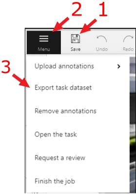
-
To download the annotations, first you have to save all changes.
Click the Save button or press Ctrl+Sto save annotations quickly.
-
After you saved the changes, click the Menu button.
-
Then click the Dump Annotation button.
-
Lastly choose a format of the dump annotation file.
To learn more, go to downloading annotations
2 - Manual
This section contains documents for CVAT simple and advanced users
2.1 - Basics
This section contains basic documents for CVAT users
2.1.1 - Authorization
-
First of all, you have to log in to CVAT tool.

-
For register a new user press “Create an account”

-
You can register a user but by default it will not have rights even to view
list of tasks. Thus you should create a superuser. The superuser can use
Django administration panel to assign correct
groups to the user. Please use the command below to create an admin account:
docker exec -it cvat bash -ic 'python3 ~/manage.py createsuperuser'
-
If you want to create a non-admin account, you can do that using the link below
on the login page. Don’t forget to modify permissions for the new user in the
administration panel. There are several groups (aka roles): admin, user,
annotator, observer.

Administration panel
Go to the Django administration panel. There you can:
2.1.2 - Creating an annotation task
Instructions on how to create and configure an annotation task.
Create an annotation task pressing Create new task button on the tasks page or on the project page.

Specify parameters of the task:
Basic configuration
Name
The name of the task to be created.

Projects
The project that this task will be related with.

Labels
There are two ways of working with labels (available only if the task is not related to the project):
-
The Constructor is a simple way to add and adjust labels. To add a new label click the Add label button.
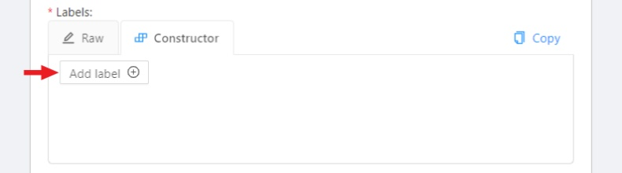
You can set a name of the label in the Label name field and choose a color for each label.

If necessary you can add an attribute and set its properties by clicking Add an attribute:
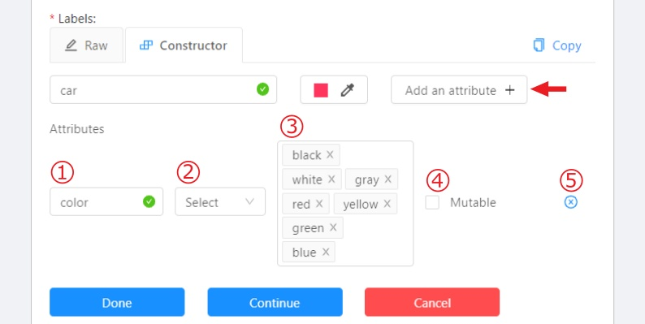
The following actions are available here:
- Set the attribute’s name.
- Choose the way to display the attribute:
- Select — drop down list of value
- Radio — is used when it is necessary to choose just one option out of few suggested.
- Checkbox — is used when it is necessary to choose any number of options out of suggested.
- Text — is used when an attribute is entered as a text.
- Number — is used when an attribute is entered as a number.
- Set values for the attribute. The values could be separated by pressing
Enter.
The entered value is displayed as a separate element which could be deleted
by pressing Backspace or clicking the close button (x).
If the specified way of displaying the attribute is Text or Number,
the entered value will be displayed as text by default (e.g. you can specify the text format).
- Checkbox
Mutable determines if an attribute would be changed frame to frame.
- You can delete the attribute by clicking the close button (x).
Click the Continue button to add more labels.
If you need to cancel adding a label - press the Cancel button.
After all the necessary labels are added click the Done button.
After clicking Done the added labels would be displayed as separate elements of different colour.
You can edit or delete labels by clicking Update attributes or Delete label.
-
The Raw is a way of working with labels for an advanced user.
Raw presents label data in json format with an option of editing and copying labels as a text.
The Done button applies the changes and the Reset button cancels the changes.
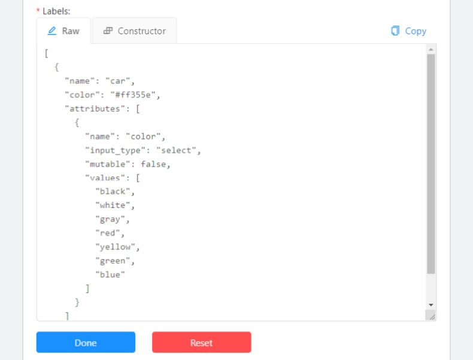
In Raw and Constructor mode, you can press the Copy button to copy the list of labels.
Select files
Press tab My computer to choose some files for annotation from your PC.
If you select tab Connected file share you can choose files for annotation from your network.
If you select Remote source , you’ll see a field where you can enter a list of URLs (one URL per line).
If you upload a video or dataset with images and select Use cache option, you can attach a manifest.jsonl file.
You can find how to prepare it here.
If you select the Cloud Storage tab, you can select a cloud storage (for this type the cloud storage name),
after that choose the manifest file and select the required files.
For more information on how to attach cloud storage, see attach cloud storage
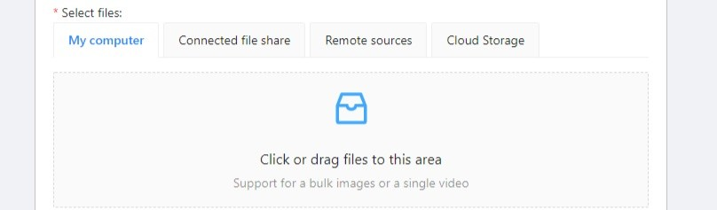
To create a 3D task, you need to use the following directory structures:
VELODYNE FORMAT
Structure:
velodyne_points/
data/
image_01.bin
IMAGE_00 # unknown dirname, Generally image_01.png can be under IMAGE_00, IMAGE_01, IMAGE_02, IMAGE_03, etc
data/
image_01.png
3D POINTCLOUD DATA FORMAT
Structure:
pointcloud/
00001.pcd
related_images/
00001_pcd/
image_01.png # or any other image
3D, DEFAULT DATAFORMAT Option 1
Structure:
data/
image.pcd
image.png
3D, DEFAULT DATAFORMAT Option 2
Structure:
data/
image_1/
image_1.pcd
context_1.png # or any other name
context_2.jpg
Advanced configuration
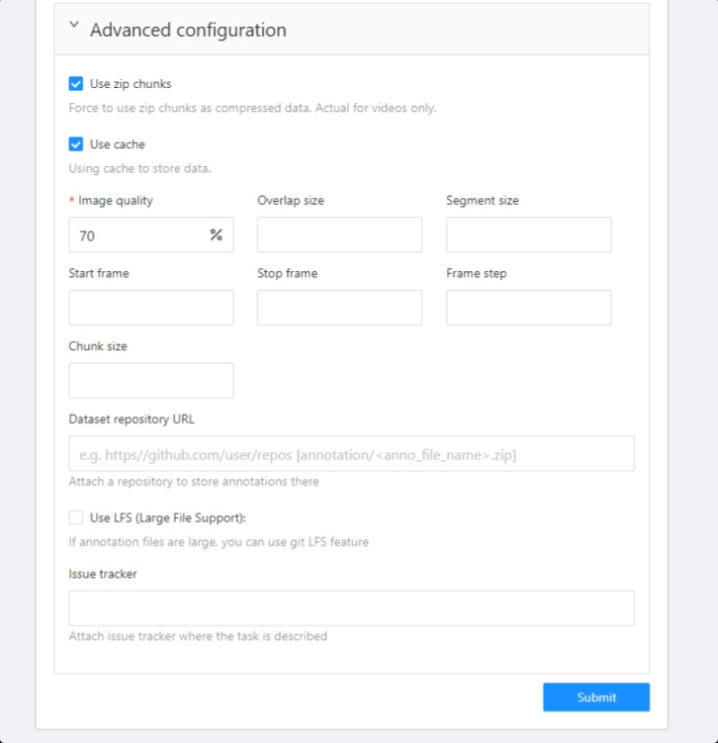
Use zip chunks
Force to use zip chunks as compressed data. Actual for videos only.
Use cache
Defines how to work with data. Select the checkbox to switch to the “on-the-fly data processing”,
which will reduce the task creation time (by preparing chunks when requests are received)
and store data in a cache of limited size with a policy of evicting less popular items.
See more here.
Image Quality
Use this option to specify quality of uploaded images.
The option helps to load high resolution datasets faster.
Use the value from 5 (almost completely compressed images) to 100 (not compressed images).
Overlap Size
Use this option to make overlapped segments.
The option makes tracks continuous from one segment into another.
Use it for interpolation mode. There are several options for using the parameter:
- For an interpolation task (video sequence).
If you annotate a bounding box on two adjacent segments they will be merged into one bounding box.
If overlap equals to zero or annotation is poor on adjacent segments inside a dumped annotation file,
you will have several tracks, one for each segment, which corresponds to the object.
- For an annotation task (independent images).
If an object exists on overlapped segments, the overlap is greater than zero
and the annotation is good enough on adjacent segments, it will be automatically merged into one object.
If overlap equals to zero or annotation is poor on adjacent segments inside a dumped annotation file,
you will have several bounding boxes for the same object.
Thus, you annotate an object on the first segment.
You annotate the same object on second segment, and if you do it right, you
will have one track inside the annotations.
If annotations on different segments (on overlapped frames)
are very different, you will have two shapes for the same object.
This functionality works only for bounding boxes.
Polygons, polylines, points don’t support automatic merge on overlapped segments
even the overlap parameter isn’t zero and match between corresponding shapes on adjacent segments is perfect.
Segment size
Use this option to divide a huge dataset into a few smaller segments.
For example, one job cannot be annotated by several labelers (it isn’t supported).
Thus using “segment size” you can create several jobs for the same annotation task.
It will help you to parallel data annotation process.
Start frame
Frame from which video in task begins.
Stop frame
Frame on which video in task ends.
Frame Step
Use this option to filter video frames.
For example, enter 25 to leave every twenty fifth frame in the video or every twenty fifth image.
Chunk size
Defines a number of frames to be packed in a chunk when send from client to server.
Server defines automatically if empty.
Recommended values:
- 1080p or less: 36
- 2k or less: 8 - 16
- 4k or less: 4 - 8
- More: 1 - 4
Dataset Repository
URL link of the repository optionally specifies the path to the repository for storage
(default: annotation / <dump_file_name> .zip).
The .zip and .xml file extension of annotation are supported.
Field format: URL [PATH] example: https://github.com/project/repos.git [1/2/3/4/annotation.xml]
Supported URL formats :
https://github.com/project/repos[.git]github.com/project/repos[.git]git@github.com:project/repos[.git]
After the task is created, the synchronization status is displayed on the task page.
Use LFS
If the annotation file is large, you can create a repository with
LFS support.
Issue tracker
Specify full issue tracker’s URL if it’s necessary.
Push Submit button and it will be added into the list of annotation tasks.
Then, the created task will be displayed on a tasks page.
2.1.3 - Tasks page
Overview of the Tasks page.
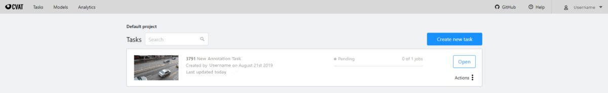
The tasks page contains elements and each of them relates to a separate task. They are sorted in creation order.
Each element contains: task name, preview, progress bar, button Open, and menu Actions.
Each button is responsible for a in menu Actions specific function:
Export task dataset — download annotations or annotations and images in a specific format.
More information is available in the Downloading annotations
section.Upload annotation is available in the same formats as in Export task dataset. The
CVAT format accepts both video and image sub-formats.Automatic Annotation — automatic annotation with OpenVINO toolkit.
Presence depends on how you build CVAT instance.Export task — Export a task into a zip archive.
Read more in the export/import a task section.Move to project — Moving the task to the project (can be used to move a task from one project to another).
Note that attributes reset during the moving process. In case of label mismatch,
you can create or delete necessary labels in the project/task.
Some task labels can be matched with the target project labels.Delete — delete task.
Push Open button to go to task details.
2.1.4 - Task details
Overview of the Task details page.
Task details is a task page which contains a preview, a progress bar
and the details of the task (specified when the task was created) and the jobs section.
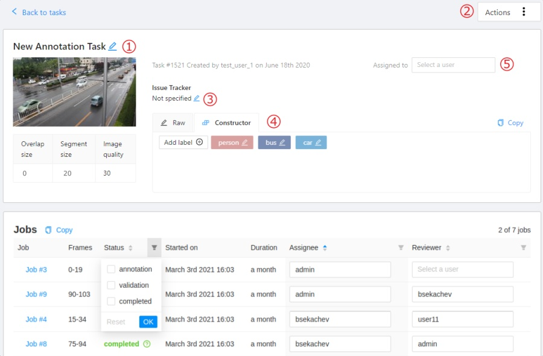
-
The next actions are available on this page:
- Change the task’s title.
- Open
Actions menu.
- Change issue tracker or open issue tracker if it is specified.
- Change labels (available only if the task is not related to the project).
You can add new labels or add attributes for the existing labels in the Raw mode or the Constructor mode.
By clicking
Copy you will copy the labels to the clipboard.
- Assigned to — is used to assign a task to a person. Start typing an assignee’s name and/or
choose the right person out of the dropdown list.
-
Jobs — is a list of all jobs for a particular task. Here you can find the next data:
- Jobs name with a hyperlink to it.
- Frames — the frame interval.
- A status of the job. The status is specified by the user in the menu inside the job.
There are three types of status: annotation, validation or completed.
The status of the job is changes the progress bar of the task.
- Started on — start date of this job.
- Duration — is the amount of time the job is being worked.
- Assignee is the user who is working on the job.
You can start typing an assignee’s name and/or choose the right person out of the dropdown list.
- Reviewer – a user assigned to carry out the review,
read more in the review section.
Copy. By clicking Copy you will copy the job list to the clipboard.
The job list contains direct links to jobs.
You can filter or sort jobs by status, as well as by assigner or reviewer.
Follow a link inside Jobs section to start annotation process.
In some cases, you can have several links. It depends on size of your
task and Overlap Size and Segment Size parameters. To improve
UX, only the first chunk of several frames will be loaded and you will be able
to annotate first images. Other frames will be loaded in background.
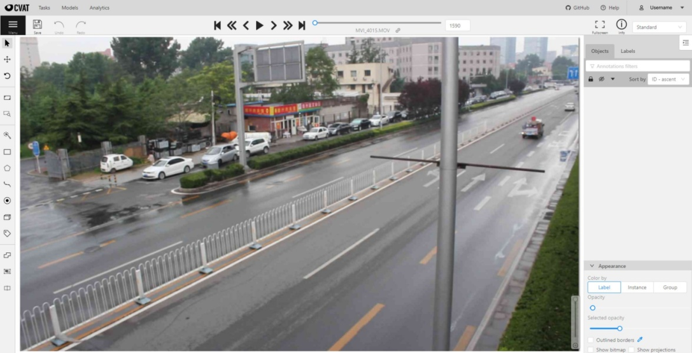
2.1.5 - Interface of the annotation tool
The tool consists of:
Header - pinned header used to navigate CVAT sections and account settings;Top panel — contains navigation buttons, main functions and menu access;Workspace — space where images are shown;Controls sidebar — contains tools for navigating the image, zoom,
creating shapes and editing tracks (merge, split, group)Objects sidebar — contains label filter, two lists:
objects (on the frame) and labels (of objects on the frame) and appearance settings.
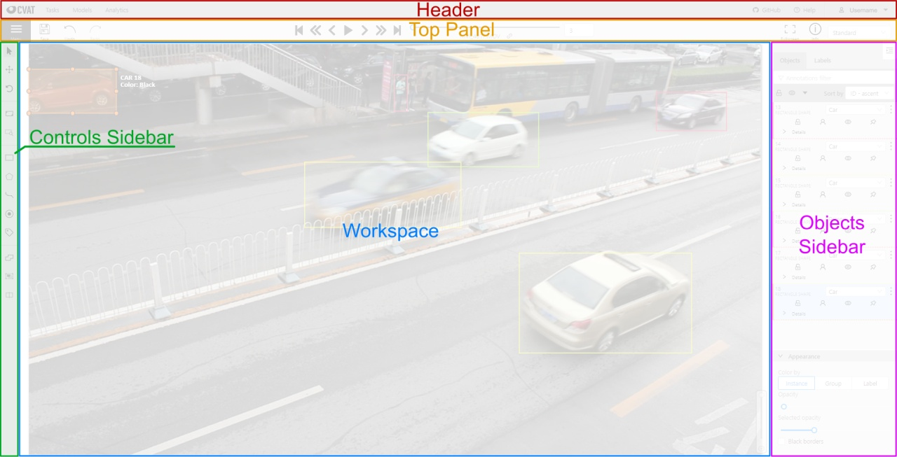
2.1.6 - Basic navigation
Overview of basic controls.
-
Use arrows below to move to the next/previous frame.
Use the scroll bar slider to scroll through frames.
Almost every button has a shortcut.
To get a hint about a shortcut, just move your mouse pointer over an UI element.

-
To navigate the image, use the button on the controls sidebar.
Another way an image can be moved/shifted is by holding the left mouse button inside
an area without annotated objects.
If the Mouse Wheel is pressed, then all annotated objects are ignored. Otherwise the
a highlighted bounding box will be moved instead of the image itself.

-
You can use the button on the sidebar controls to zoom on a region of interest.
Use the button Fit the image to fit the image in the workspace.
You can also use the mouse wheel to scale the image
(the image will be zoomed relatively to your current cursor position).
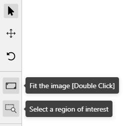
2.1.7 - Top Panel
Overview of controls available on the top panel of the annotation tool.

It is the main menu of the annotation tool. It can be used to download, upload and remove annotations.
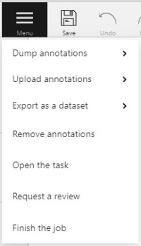
Button assignment:
-
Dump Annotations — downloads annotations from a task.
-
Upload Annotations — uploads annotations into a task.
-
Remove Annotations — calls the confirmation window if you click Delete, the annotation of the current job
will be removed, if you click Select range you can remove annotation on range frames, if you activate checkbox
Delete only keyframe for tracks then only keyframes will be deleted from the tracks, on the selected range.

-
Export as a dataset — download a data set from a task. Several formats are available:
-
Open the task — opens a page with details about the task.
-
Request a review - calls up the form to submit the job for a review, read more in the review section.
-
Finish the job - changes the status of the job to completed and returns to the task page without review.
-
Submit the review - (available during the review) calls up the form to submit a review, read more in the review section.
Save Work
Saves annotations for the current job. The button has an indication of the saving process.
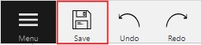
Use buttons to undo actions or redo them.

Done

Used to complete the creation of the object. This button appears only when the object is being created.
Block

Used to pause automatic line creation when drawing a polygon with
OpenCV Intelligent scissors.
Also used to postpone server requests when creating an object using AI Tools.
When blocking is activated, the button turns blue.
Player
Go to the first /the latest frames.
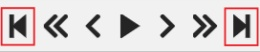
Go to the next/previous frame with a predefined step. Shortcuts:
V — step backward, C — step forward. By default the step is 10 frames
(change at Account Menu —> Settings —> Player Step).

The button to go to the next / previous frame has the customization possibility.
To customize, right-click on the button and select one of three options:
- The default option - go to the next / previous frame (the step is 1 frame).
- Go to the next / previous frame that has any objects (in particular filtered).
Read the filter section to know the details how to use it.
- Go to the next / previous frame without annotation at all.
Use this option in cases when you need to find missed frames quickly.
Shortcuts: D - previous, F - next.

Play the sequence of frames or the set of images.
Shortcut: Space (change at Account Menu —> Settings —> Player Speed).

Go to a specific frame. Press ~ to focus on the element.

Fullscreen Player
The fullscreen player mode. The keyboard shortcut is F11.

Info
Open the job info.

Overview:
Assignee - the one to whom the job is assigned.Reviewer – a user assigned to carry out the review,
read more in the review section.Start Frame - the number of the first frame in this job.End Frame - the number of the last frame in this job.Frames - the total number of all frames in the job.
Annotations statistics:
This is a table number of created shapes, sorted by labels (e.g. vehicle, person)
and type of annotation (shape, track). As well as the number of manual and interpolated frames.
UI switcher
Switching between user interface modes.

2.1.8 - Controls sidebar
Overview of available functions on the controls sidebar of the annotation tool.
Navigation
Navigation block - contains tools for moving and rotating images.
| Icon |
Description |
 |
Cursor (Esc)- a basic annotation pedacting tool. |
 |
Move the image- a tool for moving around the image without
the possibility of editing. |
 |
Rotate- two buttons to rotate the current frame
a clockwise (Ctrl+R) and anticlockwise (Ctrl+Shift+R).
You can enable Rotate all images in the settings to rotate all the images in the job |
Zoom
Zoom block - contains tools for image zoom.
| Icon |
Description |
 |
Fit image- fits image into the workspace size.
Shortcut - double click on an image |
 |
Select a region of interest- zooms in on a selected region.
You can use this tool to quickly zoom in on a specific part of the frame. |
Shapes
Shapes block - contains all the tools for creating shapes.
Edit
Edit block - contains tools for editing tracks and shapes.
2.1.9 - Objects sidebar
Overview of available functions on the objects sidebar of the annotation tool.
Hide - the button hides the object’s sidebar.

Objects
Filter input box

The way how to use filters is described in the advanced guide here.
List of objects

- Switch lock property for all - switches lock property of all objects in the frame.
- Switch hidden property for all - switches hide property of all objects in the frame.
- Expand/collapse all - collapses/expands the details field of all objects in the frame.
- Sorting - sort the list of objects: updated time, ID - accent, ID - descent
In the objects sidebar you can see the list of available objects on the current
frame. The following figure is an example of how the list might look like:
| Shape mode |
Track mode |
 |
 |
Objects on the side bar
The type of a shape can be changed by selecting Label property.
For instance, it can look like shown on the figure below:

Object action menu
The action menu calls up the button:
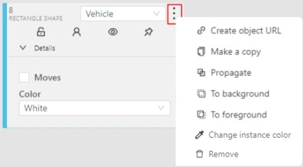
The action menu contains:
-
Create object URL - puts a link to an object on the clipboard.
After you open the link, this object will be filtered.
-
Make a copy- copies an object. The keyboard shortcut is Ctrl + C Ctrl + V.
-
Propagate - Сopies the form to several frames,
invokes a dialog box in which you can specify the number of copies
or the frame onto which you want to copy the object. The keyboard shortcut Ctrl + B.

-
To background - moves the object to the background. The keyboard shortcut -,_.
-
To foreground - moves the object to the foreground. The keyboard shortcut +,=.
-
Change instance color- choosing a color using the color picker (available only in instance mode).
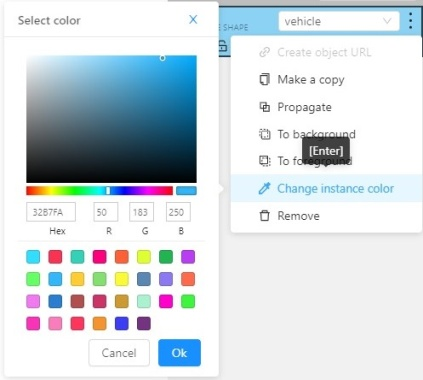
-
Remove - removes the object. The keyboard shortcut Del,Shift+Del.
A shape can be locked to prevent its modification or moving by an accident. Shortcut to lock an object: L.

A shape can be Occluded. Shortcut: Q. Such shapes have dashed boundaries.


You can change the way an object is displayed on a frame (show or hide).
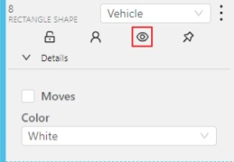
Switch pinned property - when enabled, a shape cannot be moved by dragging or dropping.

Tracker switcher - enable/disable tracking for the object.

By clicking on the Details button you can collapse or expand the field with all the attributes of the object.

Labels
In this tab you can lock or hide objects of a certain label.
To change the color for a specific label,
you need to go to the task page and select the color by clicking the edit button,
this way you will change the label color for all jobs in the task.

Fast label change
You can change the label of an object using hot keys.
In order to do it, you need to assign a number (from 0 to 9) to labels.
By default numbers 1,2…0 are assigned to the first ten labels.
To assign a number, click on the button placed at the right of a label name on the sidebar.

After that you will be able to assign a corresponding label to an object
by hovering your mouse cursor over it and pressing Ctrl + Num(0..9).
In case you do not point the cursor to the object, pressing Ctrl + Num(0..9) will set a chosen label as default,
so that the next object you create (use N key) will automatically have this label assigned.

Appearance
Color By options
Change the color scheme of annotation:
-
Instance — every shape has random color

-
Group — every group of shape has its own random color, ungrouped shapes are white

-
Label — every label (e.g. car, person) has its own random color

You can change any random color pointing to a needed box on a frame or on an
object sidebar.
Fill Opacity slider
Change the opacity of every shape in the annotation.

Selected Fill Opacity slider
Change the opacity of the selected object’s fill. It is possible to change opacity while drawing an object in the case
of rectangles, polygons and cuboids.

Outlines borders checkbox
You can change a special shape border color by clicking on the Eyedropper icon.

Show bitmap checkbox
If enabled all shapes are displayed in white and the background is black.

Show projections checkbox
Enables / disables the display of auxiliary perspective lines. Only relevant for cuboids
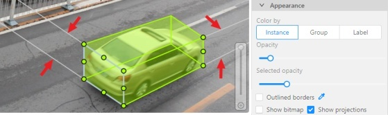
2.1.10 - Workspace
Overview of available functions on the workspace of the annotation tool.
This is the main field in which drawing and editing objects takes place.
In addition the workspace also has the following functions:
-
Right-clicking on an object calls up the Object card - this is an element containing
the necessary controls for changing the label and attributes of the object, as well as the action menu.

-
Right-clicking a point deletes it.
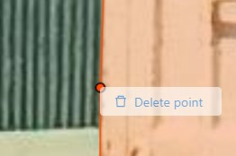
-
Z-axis slider - Allows you to switch annotation layers hiding the upper layers
(slider is enabled if several z layers are on a frame).
This element has a button for adding a new layer. When pressed, a new layer is added and switched to it.
You can move objects in layers using the + and - keys.

-
Image settings panel - used to set up the grid and set up image brightness contrast saturation.
-
Show Grid, change grid size, choose color and transparency:
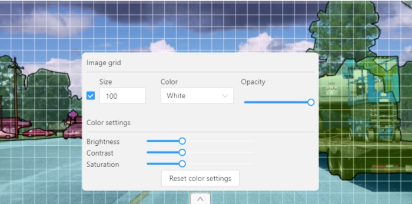
-
Adjust Brightness/Contrast/Saturation of too exposed or too
dark images using F3 — color settings (changes displaying settings and not the
image itself).
Shortcuts:
-
Shift+B+=/Shift+B+- for brightness.
-
Shift+C+=/Shift+C+- for contrast.
-
Shift+S+=/Shift+S+- for saturation.
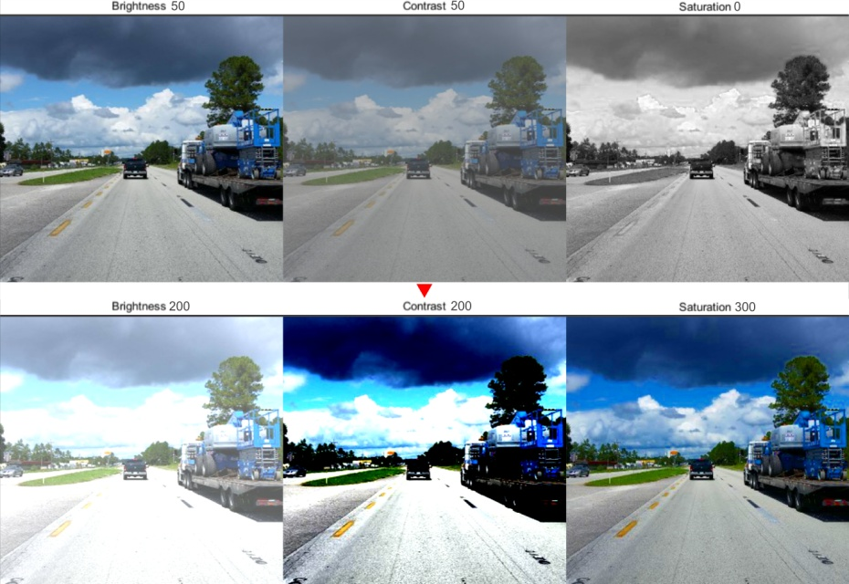
-
Reset color settings to default values.
2.1.11 - 3D task workspace

If the related_images folder contains any images, a context image will be available in the perspective window.
The contextual image could be compared to 3D data and would help to identify the labels of marked objects.
Perspective – a main window for work with objects in a 3D task.
Projections - projections are tied to an object so that a cuboid is in the center and looks like a rectangle.
Projections show only the selected object.
Top – a projection of the view from above.Side – a projection of the left side of the object.Front - a frontal projection of the object.
2.1.12 - Standard 3D mode (basics)
Standard 3d mode - Designed to work with 3D data.
The mode is automatically available if you add PCD or Kitty BIN format data when you create a task.
read more
You can adjust the size of the projections, to do so, simply drag the boundary between the projections.

2.1.13 - Settings
To open the settings open the user menu in the header and select the settings item or press F2.
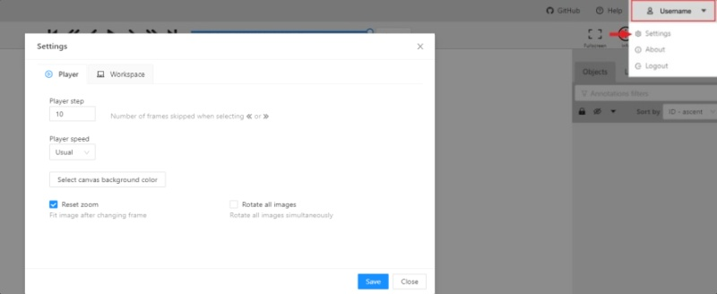
Settings have two tabs:
In tab Player you can:
- Control step of
C and V shortcuts.
- Control speed of
Space/Play button.
- Select canvas background color. You can choose a background color or enter manually (in RGB or HEX format).
Reset zoom Show every image in full size or zoomed out like previous
(it is enabled by default for interpolation mode and disabled for annotation mode).Rotate all images checkbox — switch the rotation of all frames or an individual frame.
In tab Workspace you can:
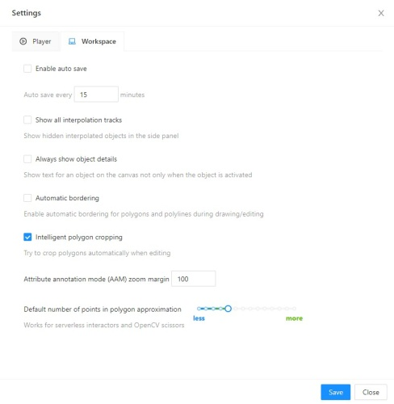
-
Enable auto save checkbox — turned off by default.
-
Auto save interval (min) input box — 15 minutes by default.
-
Show all interpolation tracks checkbox — shows hidden objects on the
side panel for every interpolated object (turned off by default).
-
Always show object details - show text for an object on the canvas not only when the object is activated:

-
Automatic bordering - enable automatic bordering for polygons and polylines during drawing/editing.
For more information To find out more, go to the section annotation with polygons.
-
Intelligent polygon cropping - activates intelligent cropping when editing the polygon (read more in the section edit polygon
-
Attribute annotation mode (AAM) zoom margin input box — defines margins (in px)
for shape in the attribute annotation mode.
-
Click Save to save settings (settings will be saved on the server and will not change after the page is refreshed).
Click Cancel or press F2 to return to the annotation.
-
Default number of points in polygon approximation
With this setting, you can choose the default number of points in polygon.
Works for serverless interactors and OpenCV scissors.
2.1.14 - Types of shapes
List of shapes available for annotation.
There are five shapes which you can annotate your images with:
Rectangle or Bounding boxPolygonPolylinePointsCuboidCuboid in 3d taskTag
And there is how they all look like:


 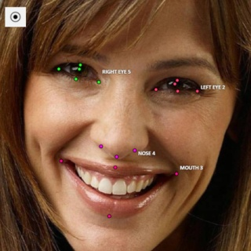
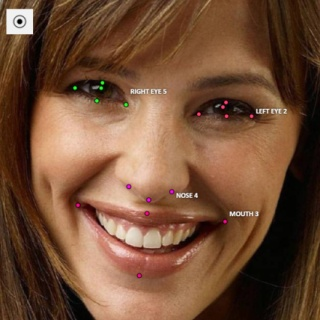


Tag - has no shape in the workspace, but is displayed in objects sidebar.
2.1.15 - Shape mode (basics)
Usage examples and basic operations available during annotation in shape mode.
Usage examples:
- Create new annotations for a set of images.
- Add/modify/delete objects for existing annotations.
-
You need to select Rectangle on the controls sidebar:

Before you start, select the correct Label (should be specified by you when creating the task)
and Drawing Method (by 2 points or by 4 points):

-
Creating a new annotation in Shape mode:
-
Create a separate Rectangle by clicking on Shape.

-
Choose the opposite points. Your first rectangle is ready!

-
To learn about creating a rectangle using the by 4 point drawing method, (read here).
-
It is possible to adjust boundaries and location of the rectangle using a mouse.
Rectangle’s size is shown in the top right corner , you can check it by clicking on any point of the shape.
You can also undo your actions using Ctrl+Z and redo them with Shift+Ctrl+Z or Ctrl+Y.
-
You can see the Object card in the objects sidebar or open it by right-clicking on the object.
You can change the attributes in the details section.
You can perform basic operations or delete an object by clicking on the action menu button.

-
The following figure is an example of a fully annotated frame with separate shapes.
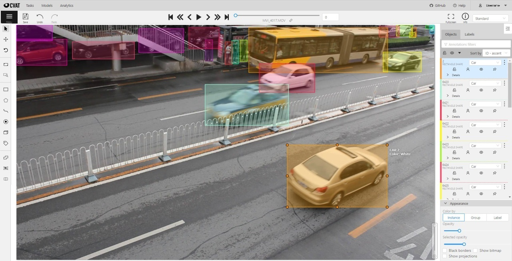
Read more in the section shape mode (advanced).
2.1.16 - Track mode (basics)
Usage examples and basic operations available during annotation in track mode.
Usage examples:
- Create new annotations for a sequence of frames.
- Add/modify/delete objects for existing annotations.
- Edit tracks, merge several rectangles into one track.
-
Like in the Shape mode, you need to select a Rectangle on the sidebar,
in the appearing form, select the desired Label and the Drawing method.

-
Creating a track for an object (look at the selected car as an example):
-
Create a Rectangle in Track mode by clicking on Track.

-
In Track mode the rectangle will be automatically interpolated on the next frames.
-
The cyclist starts moving on frame #2270. Let’s mark the frame as a key frame.
You can press K for that or click the star button (see the screenshot below).

-
If the object starts to change its position, you need to modify the rectangle where it happens.
It isn’t necessary to change the rectangle on each frame, simply update several keyframes
and the frames between them will be interpolated automatically.
-
Let’s jump 30 frames forward and adjust the boundaries of the object. See an example below:

-
After that the rectangle of the object will be changed automatically on frames 2270 to 2300:

-
When the annotated object disappears or becomes too small, you need to
finish the track. You have to choose Outside Property, shortcut O.

-
If the object isn’t visible on a couple of frames and then appears again,
you can use the Merge feature to merge several individual tracks
into one.

-
Create tracks for moments when the cyclist is visible:

-
Click Merge button or press key M and click on any rectangle of the first track
and on any rectangle of the second track and so on:

-
Click Merge button or press M to apply changes.
-
The final annotated sequence of frames in Interpolation mode can
look like the clip below:

Read more in the section track mode (advanced).
2.1.17 - 3D Object annotation (basics)
Overview of basic operations available when annotating 3D objects.
Navigation
To move in 3D space you can use several methods:
You can move around by pressing the corresponding buttons:
- To rotate the camera use:
Shift+arrrowup/Shift+arrrowdown/Shift+arrrowleft/Shift+arrrowright.
- To move left/right use:
Allt+J/Alt+L.
- To move up/down use:
Alt-U/Alt+O.
- To zoom in/out use:
Alt+K/Alt+I.
Creating a cuboid
To create a cube in a 3D task you need to click the appropriate icon on the control sidebar,
select the label of the future object and click shape.
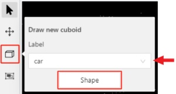
After that the cursor will be followed by a cube. In the creation process you can rotate and move the camera
only using the keys. Left double-click will create an object.
You can place an object only near the dots of the point cloud.

To adjust the size precisely, you need to edit the cuboid on the projections, for this change Сursor on control
sidebar or press Esc. In each projection you can:
Move the object in the projection plane - to do this, hover over the object,
press the left mouse button and move the object.

Move one of the four points - you can change the size of the cuboid by dragging the points in the projection.
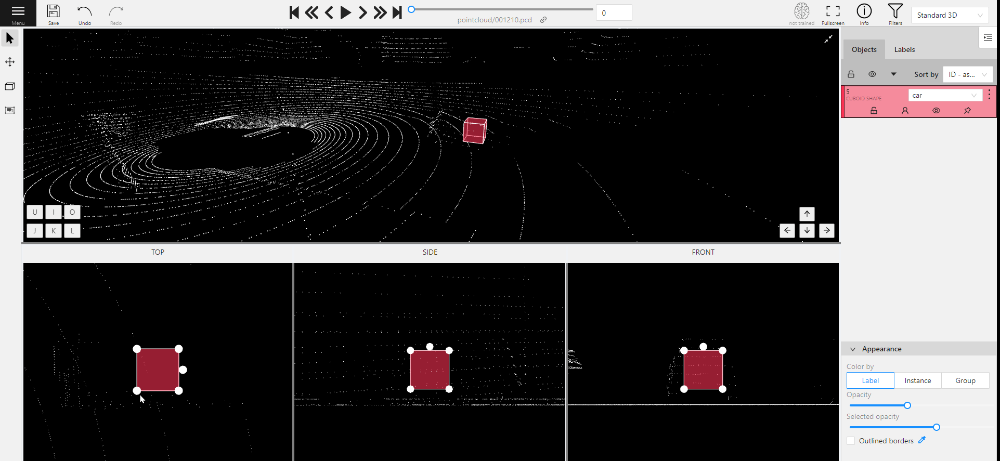
Rotate the cuboid in the projection plane – to rotate the cuboid you should click on the appropriate point
and then drag it up/down or to the left/right.

2.1.18 - Attribute annotation mode (basics)
Usage examples and basic operations available in attribute annotation mode.
-
In this mode you can edit attributes with fast navigation between objects and frames using a keyboard.
Open the drop-down list in the top panel and select Attribute annotation Mode.
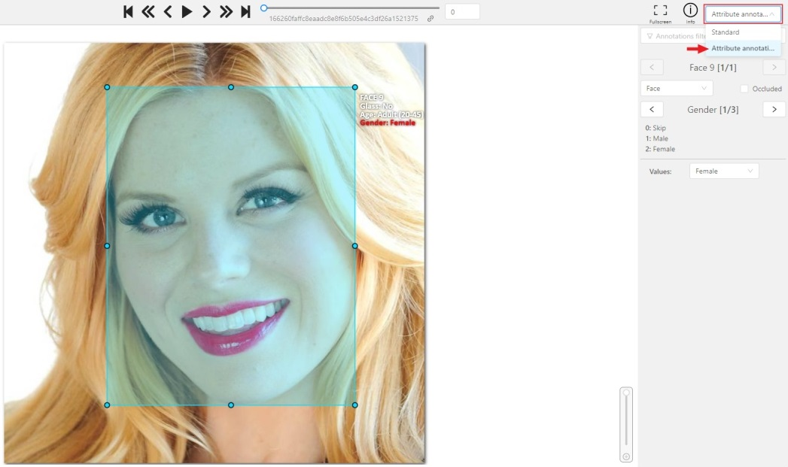
-
In this mode objects panel change to a special panel :

-
The active attribute will be red. In this case it is gender . Look at the bottom side panel to see all possible
shortcuts for changing the attribute. Press key 2 on your keyboard to assign a value (female) for the attribute
or select from the drop-down list.

-
Press Up Arrow/Down Arrow on your keyboard or click the buttons in the UI to go to the next/previous
attribute. In this case, after pressing Down Arrow you will be able to edit the Age attribute.

-
Use Right Arrow/Left Arrow keys to move to the previous/next image with annotation.
To see all the hot keys available in the attribute annotation mode, press F2.
Read more in the section attribute annotation mode (advanced).
2.1.19 - Vocabulary
List of terms pertaining to annotation in CVAT.
Label is a type of an annotated object (e.g. person, car, vehicle, etc.)
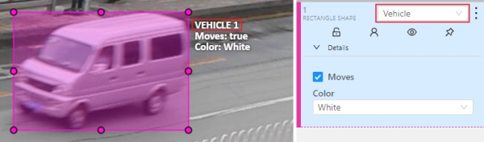
Attribute is a property of an annotated object (e.g. color, model,
quality, etc.). There are two types of attributes:
-
Unique: immutable and can’t be changed from frame to frame (e.g. age, gender, color, etc.)

-
Temporary: mutable and can be changed on any frame (e.g. quality, pose, truncated, etc.)

Track is a set of shapes on different frames which corresponds to one object.
Tracks are created in Track mode
Annotation is a set of shapes and tracks. There are several types of annotations:
- Manual which is created by a person
- Semi-automatic which is created mainly automatically, but the user provides some data (e.g. interpolation)
- Automatic which is created automatically without a person in the loop
Approximation allows you to reduce the number of points in the polygon.
Can be used to reduce the annotation file and to facilitate editing polygons.

Trackable object will be tracked automatically if the previous frame was
a latest keyframe for the object. More details in the section trackers.
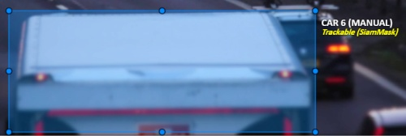
2.1.20 - Cloud storages page
Overview of the cloud storages page.

The cloud storages page contains elements, each of them relating to a separate cloud storage.
Each element contains: preview, cloud storage name, provider, creation and update info, status,
? button for displaying the description and the actions menu.
Each button in the action menu is responsible for a specific function:
Update — update this cloud storageDelete — delete cloud storage.

This preview will appear when it is impossible to get a real preview (e.g. storage is empty or
invalid credentials were used).
Click the Attach a new storage button to attach a new storage.
2.1.21 - Attach cloud storage
Instructions on how to attach cloud storage using UI
In CVAT you can use AWS-S3 and Azure Blob Container cloud storages to store image datasets for your tasks.
Using AWS-S3
Create AWS account
First, you need to create an AWS account, to do this, register of 5 steps
following the instructions
(even if you plan to use a free basic account you may need to link a credit card to verify your identity).
To learn more about the operation and benefits of AWS cloud,
take a free AWS Cloud Practitioner Essentials course,
which will be available after registration.
Create a bucket
After the account is created, go to console AWS-S3
and click Create bucket.

You’ll be taken to the bucket creation page. Here you have to specify the name of the bucket, region,
optionally you can copy the settings of another bucket by clicking on the choose bucket button.
Checkbox block all public access can be enabled as we will use access key ID and secret access key to gain access.
In the following sections, you can leave the default settings and click create bucket.
After you create the bucket it will appear in the list of buckets.
To access bucket you will need to create a user, to do this, go IAM
and click add users. You need to choose AWS access type, have an access key ID and secret access key.

After pressing next button to configure permissions, you need to create a user group.
To do this click create a group, input the group name and select permission policies add AmazonS3ReadOnlyAccess
using the search (if you want the user you create to have write rights to bucket select AmazonS3FullAccess).

You can also add tags for the user (optional), and look again at the entered data. In the last step of creating a user,
you will be provided with access key ID and secret access key,
they will need to be used in CVAT when adding cloud storage.

Upload dataset
Prepare dataset
For example, let’s take The Oxford-IIIT Pet Dataset:
-
Download the archive with images.
-
Unpack the archive into the prepared folder
and create a manifest file as described in prepare manifest file section:
python <cvat repository>/utils/dataset_manifest/create.py --output-dir <yourfolder> <yourfolder>
Upload
-
When the manifest file is ready, open the previously prepared bucket and click Upload:

-
Drag the manifest file and image folder on the page and click Upload:

Now you can attach new cloud storage into CVAT.
Using Azure Blob Container
Create Microsoft account
First, create a Microsoft account by registering,
or you can use your GitHub account to log in. After signing up for Azure, you’ll need to choose a subscription plan,
you can choose a free 12-month subscription, but you’ll need to enter your credit card details to verify your identity.
To learn more about Azure, read documentation.
Create a storage account
After registration, go to Azure portal.
Hover over the resource groups and click create in the window that appears.

Enter a name for the group and click review + create, check the entered data and click create.
After the resource group is created,
go to the resource groups page
and navigate to the resource group that you created.
Click create for create a storage account.

-
Basics
Enter storage account name (will be used in CVAT to access your container), select a region,
select performance in our case will be standard enough, select redundancy enough LRS
more about redundancy.
Click next to go to the advanced section.
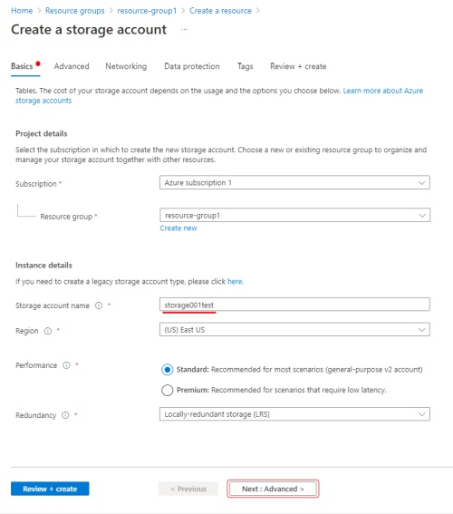
-
Advanced
In the advanced section, you can change public access by disabling enable blob public access
to deny anonymous access to the container.
If you want to change public access you can find this switch in the configuration section of your storage account.
After that, go to the review section, check the entered data and click create.
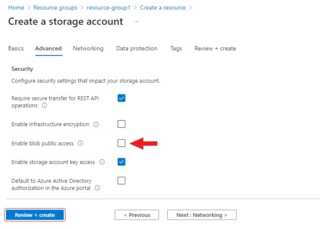
You will be reached to the deployment page after the finished,
navigate to the resource by clicking on go to resource.

Create a container
Go to the containers section and create a new container. Enter the name of the container
(will be used in CVAT to access your container) and select container in public access level.

SAS token
Using the SAS token, you can securely transfer access to the container to other people by preconfiguring rights,
as well as the date/time of the starting and expiration of the token.
To generate a SAS token, go to Shared access signature section of your storage account.
Here you should enable Blob in the Allowed services, Container and Object in the Allowed resource types,
Read and List in the Allowed permissions, HTTPS and HTTP in the Allowed protocols,
also here you can set the date/time of the starting and expiration for the token. Click Generation SAS token.
and copy SAS token (will be used in CVAT to access your container).

For personal use, you can enter the Access Key from the your storage account in the SAS Token field,
access key can be found in the security + networking section.
Click show keys to show the key.

Upload dataset
Prepare the dataset as in the point prepare dataset.
-
When the dataset is ready, go to your container and click upload.
-
Click select a files and select all images from the images folder
in the upload to folder item write the name of the folder in which you want to upload images in this case “images”.

-
Click upload, when the images are loaded you will need to upload a manifest file. When loading a manifest, you
need to make sure that the relative paths specified in the manifest file match the paths
to the files in the container. Click select a file and select manifest file, in order to upload file to the root
of the container leave blank upload to folder field.
Now you can attach new cloud storage into CVAT.
Attach new cloud storage
After you upload the dataset and manifest file to AWS-S3 or Azure Blob Container
you will be able to attach a cloud storage. To do this, press the Attach new cloud storage
button on the Cloud storages page and fill out the following form:

-
Display name - the display name of the cloud storage.
-
Description (optional) - description of the cloud storage, appears when you click on the ? button
of an item on cloud storages page.
-
Provider - choose provider of the cloud storage:
-
Manifest - the path to the manifest file on your cloud storage.
You can add multiple file manifests using the Add manifest button.
For more information click on ?.
To publish the cloud storage, click submit, after which it will be available on
the Cloud storages page.
Using AWS Data Exchange
Subscribe to data set
You can use AWS Data Exchange to add image datasets.
For example, consider adding a set of datasets 500 Image & Metadata Free Sample.
Go to browse catalog and use the search to find
500 Image & Metadata Free Sample, open the dataset page and click continue to subscribe,
you will be taken to the page complete subscription request, read the information provided
and click send subscription request to provider.

Export to bucket
After that, this dataset will appear in the
list subscriptions.
Now you need to export the dataset to Amazon S3.
First, let’s create a new one bucket similar to described above.
To export one of the datasets to a new bucket open it entitled data select one of the datasets,
select the corresponding revision and click export to Amazon S3
(please note that if bucket and dataset are located in different regions, export fees may apply).
In the window that appears, select the created bucket and click export.

Prepare manifest file
Now you need to prepare a manifest file. I used AWS cli and
script for prepare manifest file.
Perform the installation using the manual aws-shell,
I used aws-cli 1.20.49 Python 3.7.9 Windows 10.
You can configure credentials by running aws configure.
You will need to enter Access Key ID and Secret Access Key as well as region.
aws configure
Access Key ID: <your Access Key ID>
Secret Access Key: <your Secret Access Key>
Copy the content of the bucket to a folder on your computer:
aws s3 cp <s3://bucket-name> <yourfolder> --recursive
After copying the files, you can create a manifest file as described in preapair manifest file section:
python <cvat repository>/utils/dataset_manifest/create.py --output-dir <yourfolder> <yourfolder>
When the manifest file is ready, you can upload it to aws s3 bucket. If you gave full write permissions
when you created the user, run:
aws s3 cp <yourfolder>/manifest.jsonl <s3://bucket-name>
If you have given read-only permissions, use the download through the browser, click upload,
drag the manifest file to the page and click upload.
Now you can attach new cloud storage using the dataset 500 Image & Metadata Free Sample.
2.2 - Advanced
This section contains advanced documents for CVAT users
2.2.1 - Projects
Creating and exporting projects in CVAT.
Create project
At CVAT, you can create a project containing tasks of the same type.
All tasks related to the project will inherit a list of labels.
To create a project, go to the projects section by clicking on the Projects item in the top menu.
On the projects page, you can see a list of projects, use a search, or create a new project by clicking Create New Project.
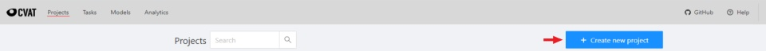
You can change: the name of the project, the list of labels
(which will be used for tasks created as parts of this project) and a link to the issue.
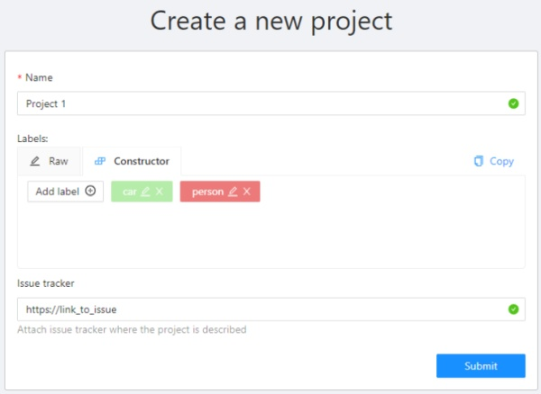
Once created, the project will appear on the projects page. To open a project, just click on it.
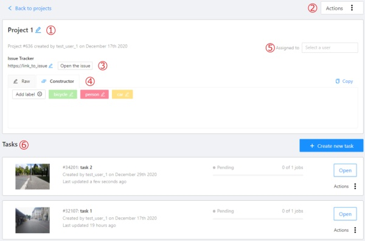
Here you can do the following:
- Change the project’s title.
- Open the
Actions menu.
- Change issue tracker or open issue tracker if it is specified.
- Change labels.
You can add new labels or add attributes for the existing labels in the Raw mode or the Constructor mode.
You can also change the color for different labels. By clicking
Copy you can copy the labels to the clipboard.
- Assigned to — is used to assign a project to a person.
Start typing an assignee’s name and/or choose the right person out of the dropdown list.
Tasks — is a list of all tasks for a particular project.
It is possible to choose a subset for tasks in the project. You can use the available options
(Train, Test, Validation) or set your own.
You can remove the project and all related tasks through the Action menu.
Export project
It is possible to download an entire project instead of exporting individual tasks. In this case,
annotations for all tasks in a project will be available in a single archive.
To export a project, do the following on the Project page:
- Open the
Actions menu.
- Press the
Export project dataset button.
Additional information about exporting tasks can be found in the
Downloading annotations section.
2.2.2 - Search
Overview of available search options.
There are several options how to use the search.
- Search within all fields (owner, assignee, task name, task status, task mode).
To execute enter a search string in search field.
- Search for specific fields. How to perform:
owner: admin - all tasks created by the user who has the substring “admin” in his nameassignee: employee - all tasks which are assigned to a user who has the substring “employee” in his namename: training - all tasks with the substring “training” in their namesmode: annotation or mode: interpolation - all tasks with images or videos.status: annotation or status: validation or status: completed - search by statusid: 5 - task with id = 5.
- Multiple filters. Filters can be combined (except for the identifier) using the keyword
AND:
mode: interpolation AND owner: adminmode: annotation and status: annotation
The search is case insensitive.
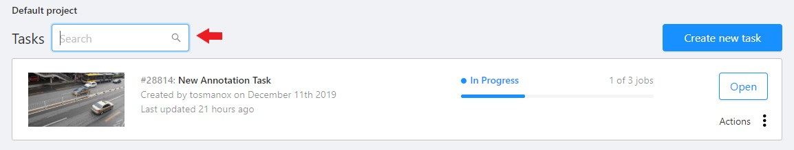
2.2.3 - Shape mode (advanced)
Advanced operations available during annotation in shape mode.
Basic operations in the mode were described in section shape mode (basics).
Occluded
Occlusion is an attribute used if an object is occluded by another object or
isn’t fully visible on the frame. Use Q shortcut to set the property
quickly.

Example: the three cars on the figure below should be labeled as occluded.

If a frame contains too many objects and it is difficult to annotate them
due to many shapes placed mostly in the same place, it makes sense
to lock them. Shapes for locked objects are transparent, and it is easy to
annotate new objects. Besides, you can’t change previously annotated objects
by accident. Shortcut: L.

2.2.4 - Track mode (advanced)
Advanced operations available during annotation in track mode.
Basic operations in the mode were described in section track mode (basics).
Shapes that were created in the track mode, have extra navigation buttons.
You can use the Split function to split one track into two tracks:
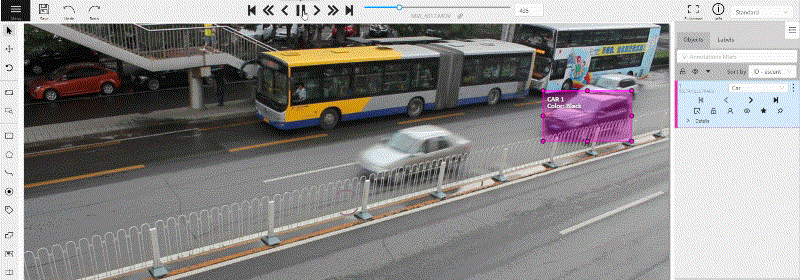
2.2.5 - 3D Object annotation (advanced)
Overview of advanced operations available when annotating 3D objects.
As well as 2D-task objects, 3D-task objects support the ability to change appearance, attributes,
properties and have an action menu. Read more in objects sidebar section.
Moving an object
If you hover the cursor over a cuboid and press Shift+N, the cuboid will be cut,
so you can paste it in other place (double-click to paste the cuboid).
Copying
As well as in 2D task you can copy and paste objects by Ctrl+C and Ctrl+V,
but unlike 2D tasks you have to place a copied object in a 3D space (double click to paste).

Image of the projection window
You can copy or save the projection-window image by left-clicking on it and selecting a “save image as” or “copy image”.
2.2.6 - Attribute annotation mode (advanced)
Advanced operations available in attribute annotation mode.
Basic operations in the mode were described in section attribute annotation mode (basics).
It is possible to handle lots of objects on the same frame in the mode.
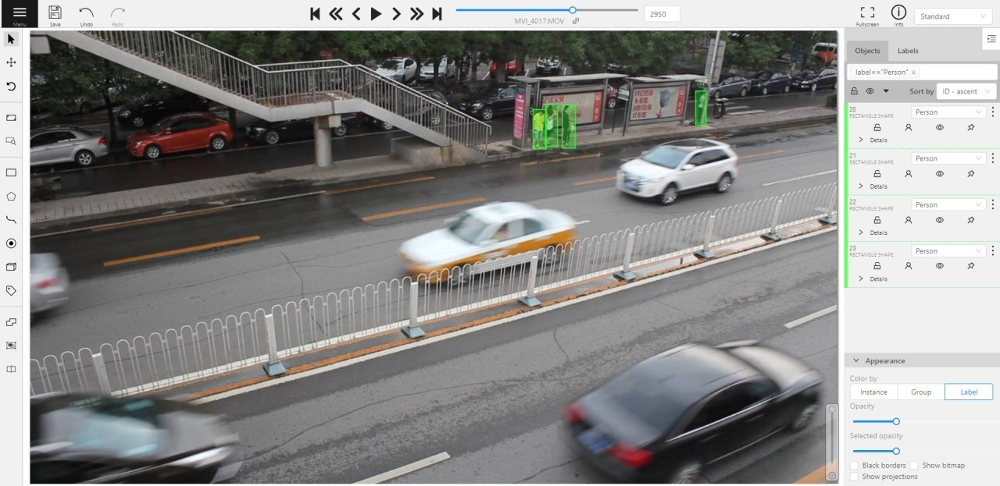
It is more convenient to annotate objects of the same type. In this case you can apply
the appropriate filter. For example, the following filter will
hide all objects except person: label=="Person".
To navigate between objects (person in this case),
use the following buttons switch between objects in the frame on the special panel:
or shortcuts:
Tab — go to the next objectShift+Tab — go to the previous object.
In order to change the zoom level, go to settings (press F3)
in the workspace tab and set the value Attribute annotation mode (AAM) zoom margin in px.
2.2.7 - Annotation with rectangle by 4 points
It is an efficient method of bounding box annotation, proposed
here.
Before starting, you need to make sure that the drawing method by 4 points is selected.

Press Shape or Track for entering drawing mode. Click on four extreme points:
the top, bottom, left- and right-most physical points on the object.
Drawing will be automatically completed right after clicking the fourth point.
Press Esc to cancel editing.

2.2.8 - Annotation with points
Guide to annotating tasks using single points or shapes containing multiple points.
2.2.8.1 - Points in shape mode
It is used for face, landmarks annotation etc.
Before you start you need to select the Points. If necessary you can set a fixed number of points
in the Number of points field, then drawing will be stopped automatically.

Click Shape to entering the drawing mode. Now you can start annotation of the necessary area.
Points are automatically grouped — all points will be considered linked between each start and finish.
Press N again or click the Done button on the top panel to finish marking the area.
You can delete a point by clicking with pressed Ctrl or right-clicking on a point and selecting Delete point.
Clicking with pressed Shift will open the points shape editor.
There you can add new points into an existing shape. You can zoom in/out (when scrolling the mouse wheel)
and move (when clicking the mouse wheel and moving the mouse) while drawing. You can drag an object after
it has been drawn and change the position of individual points after finishing an object.

2.2.8.2 - Linear interpolation with one point
You can use linear interpolation for points to annotate a moving object:
-
Before you start, select the Points.
-
Linear interpolation works only with one point, so you need to set Number of points to 1.
-
After that select the Track.
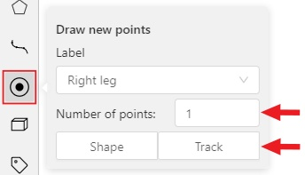
-
Click Track to enter the drawing mode left-click to create a point
and after that shape will be automatically completed.
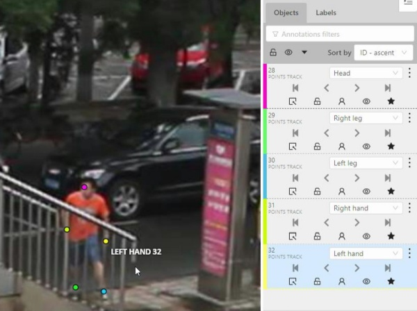
-
Move forward a few frames and move the point to the desired position,
this way you will create a keyframe and intermediate frames will be drawn automatically.
You can work with this object as with an interpolated track: you can hide it using the Outside,
move around keyframes, etc.

-
This way you’ll get linear interpolation using the Points.

2.2.9 - Annotation with polylines
Guide to annotating tasks using polylines.
It is used for road markup annotation etc.
Before starting, you need to select the Polyline. You can set a fixed number of points
in the Number of points field, then drawing will be stopped automatically.

Click Shape to enter drawing mode. There are two ways to draw a polyline —
you either create points by clicking or by dragging a mouse on the screen while holding Shift.
When Shift isn’t pressed, you can zoom in/out (when scrolling the mouse wheel)
and move (when clicking the mouse wheel and moving the mouse), you can delete
previous points by right-clicking on it.
Press N again or click the Done button on the top panel to complete the shape.
You can delete a point by clicking on it with pressed Ctrl or right-clicking on a point
and selecting Delete point. Click with pressed Shift will open a polyline editor.
There you can create new points(by clicking or dragging) or delete part of a polygon closing
the red line on another point. Press Esc to cancel editing.

2.2.10 - Annotation with polygons
Guide to creating and editing polygons.
2.2.10.1 - Manual drawing
It is used for semantic / instance segmentation.
Before starting, you need to select Polygon on the controls sidebar and choose the correct Label.

- Click
Shape to enter drawing mode.
There are two ways to draw a polygon: either create points by clicking or
by dragging the mouse on the screen while holding Shift.
| Clicking points |
Holding Shift+Dragging |
 |
|
- When
Shift isn’t pressed, you can zoom in/out (when scrolling the mouse
wheel) and move (when clicking the mouse wheel and moving the mouse), you can also
delete the previous point by right-clicking on it.
- You can use the
Selected opacity slider in the Objects sidebar to change the opacity of the polygon.
You can read more in the Objects sidebar section.
- Press
N again or click the Done button on the top panel for completing the shape.
- After creating the polygon, you can move the points or delete them by right-clicking and selecting
Delete point
or clicking with pressed Alt key in the context menu.
2.2.10.2 - Drawing using automatic borders

You can use auto borders when drawing a polygon. Using automatic borders allows you to automatically trace
the outline of polygons existing in the annotation.
-
To do this, go to settings -> workspace tab and enable Automatic Bordering
or press Ctrl while drawing a polygon.

-
Start drawing / editing a polygon.
-
Points of other shapes will be highlighted, which means that the polygon can be attached to them.
-
Define the part of the polygon path that you want to repeat.

-
Click on the first point of the contour part.

-
Then click on any point located on part of the path. The selected point will be highlighted in purple.
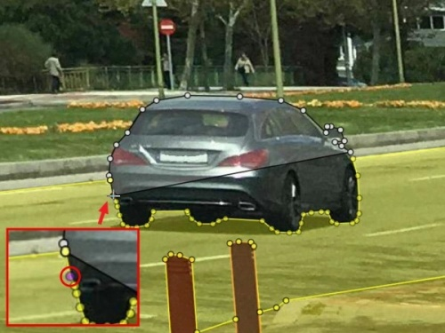
-
Click on the last point and the outline to this point will be built automatically.

Besides, you can set a fixed number of points in the Number of points field, then
drawing will be stopped automatically. To enable dragging you should right-click
inside the polygon and choose Switch pinned property.
Below you can see results with opacity and black stroke:

If you need to annotate small objects, increase Image Quality to
95 in Create task dialog for your convenience.
2.2.10.3 - Edit polygon
To edit a polygon you have to click on it while holding Shift, it will open the polygon editor.
-
In the editor you can create new points or delete part of a polygon by closing the line on another point.
-
When Intelligent polygon cropping option is activated in the settings,
СVAT considers two criteria to decide which part of a polygon should be cut off during automatic editing.
- The first criteria is a number of cut points.
- The second criteria is a length of a cut curve.
If both criteria recommend to cut the same part, algorithm works automatically,
and if not, a user has to make the decision.
If you want to choose manually which part of a polygon should be cut off,
disable Intelligent polygon cropping in the settings.
In this case after closing the polygon, you can select the part of the polygon you want to leave.

-
You can press Esc to cancel editing.

2.2.10.4 - Track mode with polygons
Polygons in the track mode allow you to mark moving objects more accurately other than using a rectangle
(Tracking mode (basic); Tracking mode (advanced)).
-
To create a polygon in the track mode, click the Track button.

-
Create a polygon the same way as in the case of Annotation with polygons.
Press N or click the Done button on the top panel to complete the polygon.
-
Pay attention to the fact that the created polygon has a starting point and a direction,
these elements are important for annotation of the following frames.
-
After going a few frames forward press Shift+N, the old polygon will disappear and you can create a new polygon.
The new starting point should match the starting point of the previously created polygon
(in this example, the top of the left mirror). The direction must also match (in this example, clockwise).
After creating the polygon, press N and the intermediate frames will be interpolated automatically.

-
If you need to change the starting point, right-click on the desired point and select Set starting point.
To change the direction, right-click on the desired point and select switch orientation.

There is no need to redraw the polygon every time using Shift+N,
instead you can simply move the points or edit a part of the polygon by pressing Shift+Click.
2.2.10.5 - Creating masks
Cutting holes in polygons
Currently, CVAT does not support cutting transparent holes in polygons. However,
it is poissble to generate holes in exported instance and class masks.
To do this, one needs to define a background class in the task and draw holes
with it as additional shapes above the shapes needed to have holes:
The editor window:
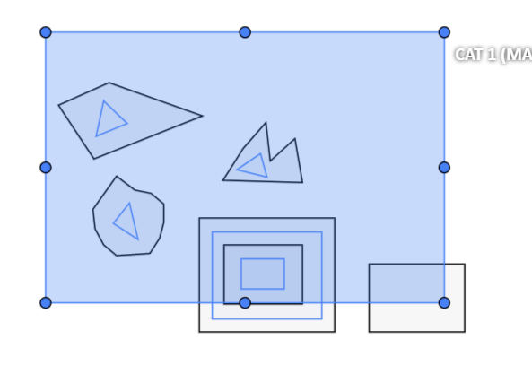
Remember to use z-axis ordering for shapes by [-] and [+, =] keys.
Exported masks:


Notice that it is currently impossible to have a single instance number for
internal shapes (they will be merged into the largest one and then covered by
“holes”).
Creating masks
There are several formats in CVAT that can be used to export masks:
Segmentation Mask (PASCAL VOC masks)CamVidMOTSICDARCOCO (RLE-encoded instance masks, guide)TFRecord (over Datumaro, guide):Datumaro
An example of exported masks (in the Segmentation Mask format):
 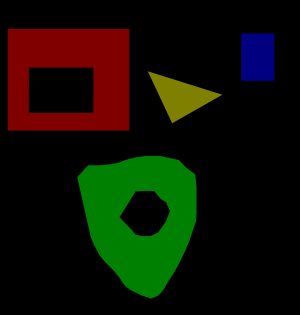
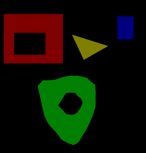
Important notices:
- Both boxes and polygons are converted into masks
- Grouped objects are considered as a single instance and exported as a single
mask (label and attributes are taken from the largest object in the group)
Class colors
All the labels have associated colors, which are used in the generated masks.
These colors can be changed in the task label properties:

Label colors are also displayed in the annotation window on the right panel,
where you can show or hide specific labels
(only the presented labels are displayed):

A background class can be:
- A default class, which is implicitly-added, of black color (RGB 0, 0, 0)
background class with any color (has a priority, name is case-insensitive)- Any class of black color (RGB 0, 0, 0)
To change background color in generated masks (default is black),
change background class color to the desired one.
2.2.11 - Annotation with Tags
It is used to annotate frames, tags are not displayed in the workspace.
Before you start, open the drop-down list in the top panel and select Tag annotation.
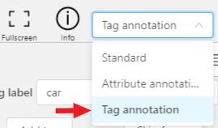
The objects sidebar will be replaced with a special panel for working with tags.
Here you can select a label for a tag and add it by clicking on the Add tag button.
You can also customize hotkeys for each label.
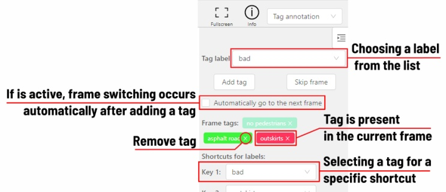
If you need to use only one label for one frame, then enable the Automatically go to the next frame
checkbox, then after you add the tag the frame will automatically switch to the next.
2.2.12 - Annotation with cuboids
Guide to creating and editing cuboids.
It is used to annotate 3 dimensional objects such as cars, boxes, etc…
Currently the feature supports one point perspective and has the constraint
where the vertical edges are exactly parallel to the sides.
2.2.12.1 - Creating the cuboid
Before you start, you have to make sure that Cuboid is selected
and choose a drawing method ”from rectangle” or “by 4 points”.

Drawing cuboid by 4 points
Choose a drawing method “by 4 points” and click Shape to enter the drawing mode. There are many ways to draw a cuboid.
You can draw the cuboid by placing 4 points, after that the drawing will be completed automatically.
The first 3 points determine the plane of the cuboid while the last point determines the depth of that plane.
For the first 3 points, it is recommended to only draw the 2 closest side faces, as well as the top and bottom face.
A few examples:

Drawing cuboid from rectangle
Choose a drawing method “from rectangle” and click Shape to enter the drawing mode.
When you draw using the rectangle method, you must select the frontal plane of the object using the bounding box.
The depth and perspective of the resulting cuboid can be edited.
Example:

2.2.12.2 - Editing the cuboid

The cuboid can be edited in multiple ways: by dragging points, by dragging certain faces or by dragging planes.
First notice that there is a face that is painted with gray lines only, let us call it the front face.
You can move the cuboid by simply dragging the shape behind the front face.
The cuboid can be extended by dragging on the point in the middle of the edges.
The cuboid can also be extended up and down by dragging the point at the vertices.
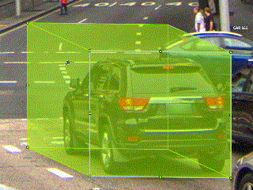
To draw with perspective effects it should be assumed that the front face is the closest to the camera.
To begin simply drag the points on the vertices that are not on the gray/front face while holding Shift.
The cuboid can then be edited as usual.

If you wish to reset perspective effects, you may right click on the cuboid,
and select Reset perspective to return to a regular cuboid.

The location of the gray face can be swapped with the adjacent visible side face.
You can do it by right clicking on the cuboid and selecting Switch perspective orientation.
Note that this will also reset the perspective effects.

Certain faces of the cuboid can also be edited,
these faces are: the left, right and dorsal faces, relative to the gray face.
Simply drag the faces to move them independently from the rest of the cuboid.

You can also use cuboids in track mode, similar to rectangles in track mode (basics and advanced) or Track mode with polygons
2.2.13 - Models
To deploy the models, you will need to install the necessary components using
Semi-automatic and Automatic Annotation guide.
To learn how to deploy the model, read Serverless tutorial.
The Models page contains a list of deep learning (DL) models deployed for semi-automatic and automatic annotation.
To open the Models page, click the Models button on the navigation bar.
The list of models is presented in the form of a table. The parameters indicated for each model are the following:
Framework the model is based on- model
Name
- model
Type:
Description - brief description of the modelLabels - list of the supported labels (only for the models of the detectors type)

2.2.14 - AI Tools
Overview of semi-automatic and automatic annotation tools available in CVAT.
The tool is designed for semi-automatic and automatic annotation using DL models.
The tool is available only if there is a corresponding model.
For more details about DL models read the Models section.
Interactors
Interactors are used to create a polygon semi-automatically.
Supported DL models are not bound to the label and can be used for any objects.
To create a polygon usually you need to use regular or positive points.
For some kinds of segmentation negative points are available.
Positive points are the points related to the object.
Negative points should be placed outside the boundary of the object.
In most cases specifying positive points alone is enough to build a polygon.
A list of available out-of-the-box interactors is placed below.
-
Before you start, select the magic wand on the controls sidebar and go to the Interactors tab.
Then select a label for the polygon and a required DL model. To view help about each of the
models, you can click the Question mark icon.
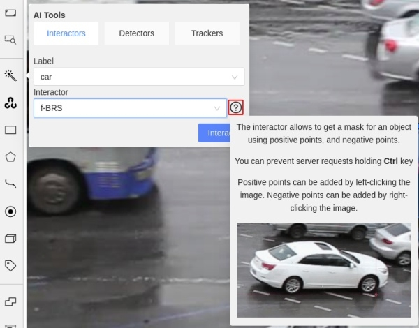
-
Click Interact to enter the interaction mode. Depending on the selected model,
the method of markup will also differ.
Now you can place positive and/or negative points. The IOG model also uses a rectangle.
Left click creates a positive point and right click creates a negative point.
After placing the required number of points (the number is different depending on the model),
the request will be sent to the server and when the process is complete a polygon will be created.
If you are not satisfied with the result, you can set additional points or remove points.
To delete a point, hover over the point you want to delete, if the point can be deleted,
it will enlarge and the cursor will turn into a cross, then left-click on the point.
If you want to postpone the request and create a few more points, hold down Ctrl and continue (the Block
button on the top panel will turn blue), the request will be sent after the key is released.

-
In the process of drawing, you can select the number of points in the polygon using the switch.

-
You can use the Selected opacity slider in the Objects sidebar to change the opacity of the polygon.
You can read more in the Objects sidebar section.
-
To finish interaction, click on the Done button on the top panel or press N on your keyboard.
-
When the object is finished, you can edit it like a polygon.
You can read about editing polygons in the Annotation with polygons section.
Deep extreme cut (DEXTR)
This is an optimized version of the original model, introduced at the end of 2017.
It uses the information about extreme points of an object to get its mask. The mask then converted to a polygon.
For now this is the fastest interactor on CPU.
Feature backpropagating refinement scheme (f-BRS)
The model allows to get a mask for an object using positive points
(should be left-clicked on the foreground), and negative points
(should be right-clicked on the background, if necessary).
It is recommended to run the model on GPU, if possible.

High Resolution Net (HRNet)
The model allows to get a mask for an object using positive points
(should be left-clicked on the foreground), and negative points
(should be right-clicked on the background, if necessary).
It is recommended to run the model on GPU, if possible.

Inside-Outside-Guidance
The model uses a bounding box and inside/outside points to create a mask.
First of all, you need to create a bounding box, wrapping the object.
Then you need to use positive and negative points to say the model where is a foreground,
and where is a background. Negative points are optional.
Detectors
Detectors are used to automatically annotate one frame. Supported DL models are suitable only for certain labels.
-
Before you start, click the magic wand on the controls sidebar and select the Detectors tab.
You need to match the labels of the DL model (left column) with the labels in your task (right column).
Then click Annotate.

-
This action will automatically annotates one frame.
In the Automatic annotation section you can read
how to make automatic annotation of all frames.
Mask RCNN
The model generates polygons for each instance of an object in the image.
Faster RCNN
The model generates bounding boxes for each instance of an object in the image. In this model,
RPN and Fast R-CNN are combined into a single network.
Trackers
Trackers are used to automatically annotate an object using bounding box.
Supported DL models are not bound to the label and can be used for any objects.
-
Before you start, select the magic wand on the controls sidebar and go to the Trackers tab.
Then select a Label and Tracker for the object and click Track. Then annotate the desired objects with the
bounding box in the first frame.

-
All annotated objects will be automatically tracked when you move to the next frame.
For tracking, use Next button on the top panel or the F button to move on to the next frame.

-
You can enable/disable tracking using tracker switcher on sidebar.
-
Trackable objects have indication on canvas with a model indication.
-
You can monitoring the process by the messages appearing at the top.
If you change one or more objects, before moving to the next frame, you will see a message that
the objects states initialization is taking place. The objects that you do not change are already on the server
and therefore do not require initialization. After the objects are initialized, tracking will occur.
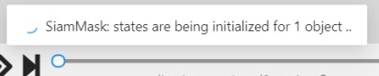
SiamMask
Fast online Object Tracking and Segmentation. Tracker is able to track different objects in one server request.
Trackable object will be tracked automatically if the previous frame was
a latest keyframe for the object. Have tracker indication on canvas. SiamMask tracker supported CUDA.
2.2.15 - OpenCV tools
Guide to using Computer Vision algorithms during annotation.
The tool based on Open CV Computer Vision library
which is an open-source product that includes many CV algorithms.
Some of these algorithms can be used to simplify the annotation process.
First step to work with OpenCV is to load it into CVAT. Click on the toolbar icon, then click Load OpenCV.
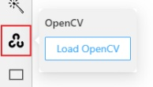
Once it is loaded, the tool’s functionality will be available.
Intelligent scissors
Intelligent scissors is an CV method of creating a polygon
by placing points with automatic drawing of a line between them.
The distance between the adjacent points is limited by the threshold of action,
displayed as a red square which is tied to the cursor.
-
First, select the label and then click on the intelligent scissors button.

-
Create the first point on the boundary of the allocated object.
You will see a line repeating the outline of the object.
-
Place the second point, so that the previous point is within the restrictive threshold.
After that a line repeating the object boundary will be automatically created between the points.

To increase or lower the action threshold, hold Ctrl and scroll the mouse wheel.
Increasing action threshold will affect the performance.
During the drawing process you can remove the last point by clicking on it with the left mouse button.
-
You can also create a boundary manually (like when
creating a polygon) by temporarily disabling
the automatic line creation. To do that, switch blocking on by pressing Ctrl.
-
In the process of drawing, you can select the number of points in the polygon using the switch.
-
You can use the Selected opacity slider in the Objects sidebar to change the opacity of the polygon.
You can read more in the Objects sidebar section.
-
Once all the points are placed, you can complete the creation of the object
by clicking on the Done button on the top panel or press N on your keyboard.
As a result, a polygon will be created (read more about the polygons in the annotation with polygons).
Histogram Equalization
Histogram equalization is an CV method that improves contrast in an image in order to stretch out the intensity range.
This method usually increases the global contrast of images when its usable data
is represented by close contrast values.
It is useful in images with backgrounds and foregrounds that are both bright or both dark.
-
First, select the image tab and then click on histogram equalization button.
-
Then contrast of current frame will be improved.
If you change frame, it will be equalized too.
You can disable equalization by clicking histogram equalization button again.

2.2.16 - Automatic annotation
Guide to using the automatic annotation of tasks.
Automatic Annotation is used for creating preliminary annotations.
To use Automatic Annotation you need a DL model. You can use primary models or models uploaded by a user.
You can find the list of available models in the Models section.
-
To launch automatic annotation, you should open the dashboard and find a task which you want to annotate.
Then click the Actions button and choose option Automatic Annotation from the dropdown menu.
-
In the dialog window select a model you need. DL models are created for specific labels, e.g.
the Crossroad model was taught using footage from cameras located above the highway and it is best to
use this model for the tasks with similar camera angles.
If it’s necessary select the Clean old annotations checkbox.
Adjust the labels so that the task labels will correspond to the labels of the DL model.
For example, let’s consider a task where you have to annotate labels “car” and “person”.
You should connect the “person” label from the model to the “person” label in the task.
As for the “car” label, you should choose the most fitting label available in the model - the “vehicle” label.
The task requires to annotate cars only and choosing the “vehicle” label implies annotation of all vehicles,
in this case using auto annotation will help you complete the task faster.
Click Submit to begin the automatic annotation process.
-
At runtime - you can see the percentage of completion.
You can cancel the automatic annotation by clicking on the Cancelbutton.

-
The end result of an automatic annotation is an annotation with separate rectangles (or other shapes)
-
You can combine separate bounding boxes into tracks using the Person reidentification model.
To do this, click on the automatic annotation item in the action menu again and select the model
of the ReID type (in this case the Person reidentification model).
You can set the following parameters:
- Model
Threshold is a maximum cosine distance between objects’ embeddings.
Maximum distance defines a maximum radius that an object can diverge between adjacent frames.
-
You can remove false positives and edit tracks using Split and Merge functions.

2.2.17 - Export/import a task
In CVAT you can export and import tasks.
This can be used to backup the task on your PC or to transfer the task to another server.
Export task
To export a task, open the action menu and select Export Task.
As a result, you’ll get a zip archive containing data, task specification and annotations with the following structure:
.
├── data
│ ├── {user uploaded data}
│ ├── manifest.jsonl
├── task.json
└── annotations.json
Export task API:
- endpoint:
/api/v1/tasks/{id}?action=export
- method:
GET
- responses: 202, 201 with zip archive payload
Import task
To import a task from an archive, go to the tasks page, click the Import Task button and select the archive you need.
As a result, you’ll get a task containing data, parameters, and annotations of the previously exported task.
Import task API:
- endpoint:
/api/v1/tasks?action=import
- method:
POST
- Content-Type:
multipart/form-data
- responses: 202, 201 with json payload
2.2.18 - Downloading annotations
-
To download the latest annotations, you have to save all changes first.
Сlick the Save button. There is a Ctrl+S shortcut to save annotations quickly.
-
After that, сlick the Menu button.
-
Press the Export task dataset button.
-
Choose the format for exporting the dataset. Exporting is available in several formats:

For 3D tasks, the following formats are available:
-
To download images with the dataset tick the Save images box
-
(Optional) To name the resulting archive, use the Custom name field.
2.2.19 - Task synchronization with a repository
-
At the end of the annotation process, a task is synchronized by clicking
Synchronize on the task page. Notice: this feature
works only if a git repository was specified when the task was created.

-
After synchronization the button Sync is highlighted in green. The
annotation is now in the repository in a temporary branch.
-
The next step is to go to the repository and manually create a pull request to the main branch.
-
After confirming the PR, when the annotation is saved in the main branch, the color of the task changes to blue.
2.2.20 - Formats
List of annotation formats supported by CVAT.
2.2.20.1 -
CVAT
This is the native CVAT annotation format. It supports all CVAT annotations
features, so it can be used to make data backups.
-
supported annotations CVAT for Images: Rectangles, Polygons, Polylines,
Points, Cuboids, Tags, Tracks
-
supported annotations CVAT for Videos: Rectangles, Polygons, Polylines,
Points, Cuboids, Tracks
-
attributes are supported
-
Format specification
CVAT for images export
Downloaded file: a ZIP file of the following structure:
taskname.zip/
├── images/
| ├── img1.png
| └── img2.jpg
└── annotations.xml
- tracks are split by frames
CVAT for videos export
Downloaded file: a ZIP file of the following structure:
taskname.zip/
├── images/
| ├── frame_000000.png
| └── frame_000001.png
└── annotations.xml
- shapes are exported as single-frame tracks
CVAT loader
Uploaded file: an XML file or a ZIP file of the structures above
2.2.20.2 -
Datumaro is a tool, which can
help with complex dataset and annotation transformations, format conversions,
dataset statistics, merging, custom formats etc. It is used as a provider
of dataset support in CVAT, so basically, everything possible in CVAT
is possible in Datumaro too, but Datumaro can offer dataset operations.
- supported annotations: any 2D shapes, labels
- supported attributes: any
Uploaded file: a zip archive of the following structure:
<archive_name>.zip/
└── annotations/
├── subset1.json # fully description of classes and all dataset items
└── subset2.json # fully description of classes and all dataset items
JSON annotations files in the annotations directory should have similar structure:
{
"info": {},
"categories": {
"label": {
"labels": [
{
"name": "label_0",
"parent": "",
"attributes": []
},
{
"name": "label_1",
"parent": "",
"attributes": []
}
],
"attributes": []
}
},
"items": [
{
"id": "img1",
"annotations": [
{
"id": 0,
"type": "polygon",
"attributes": {},
"group": 0,
"label_id": 1,
"points": [1.0, 2.0, 3.0, 4.0, 5.0, 6.0, 7.0, 8.0],
"z_order": 0
},
{
"id": 1,
"type": "bbox",
"attributes": {},
"group": 1,
"label_id": 0,
"z_order": 0,
"bbox": [1.0, 2.0, 3.0, 4.0]
},
{
"id": 2,
"type": "mask",
"attributes": {},
"group": 1,
"label_id": 0,
"rle": {
"counts": "d0d0:F\\0",
"size": [10, 10]
},
"z_order": 0
}
]
}
]
}
Downloaded file: a zip archive of the following structure:
taskname.zip/
├── annotations/
│ └── default.json # fully description of classes and all dataset items
└── images/ # if the option `save images` was selected
└── default
├── image1.jpg
├── image2.jpg
├── ...
2.2.20.3 -
LabelMe export
Downloaded file: a zip archive of the following structure:
taskname.zip/
├── img1.jpg
└── img1.xml
- supported annotations: Rectangles, Polygons (with attributes)
LabelMe import
Uploaded file: a zip archive of the following structure:
taskname.zip/
├── Masks/
| ├── img1_mask1.png
| └── img1_mask2.png
├── img1.xml
├── img2.xml
└── img3.xml
- supported annotations: Rectangles, Polygons, Masks (as polygons)
2.2.20.4 -
MOT export
Downloaded file: a zip archive of the following structure:
taskname.zip/
├── img1/
| ├── image1.jpg
| └── image2.jpg
└── gt/
├── labels.txt
└── gt.txt
# labels.txt
cat
dog
person
...
# gt.txt
# frame_id, track_id, x, y, w, h, "not ignored", class_id, visibility, <skipped>
1,1,1363,569,103,241,1,1,0.86014
...
- supported annotations: Rectangle shapes and tracks
- supported attributes:
visibility (number), ignored (checkbox)
MOT import
Uploaded file: a zip archive of the structure above or:
taskname.zip/
├── labels.txt # optional, mandatory for non-official labels
└── gt.txt
- supported annotations: Rectangle tracks
2.2.20.5 -
MOTS PNG export
Downloaded file: a zip archive of the following structure:
taskname.zip/
└── <any_subset_name>/
| images/
| ├── image1.jpg
| └── image2.jpg
└── instances/
├── labels.txt
├── image1.png
└── image2.png
# labels.txt
cat
dog
person
...
- supported annotations: Rectangle and Polygon tracks
MOTS PNG import
Uploaded file: a zip archive of the structure above
- supported annotations: Polygon tracks
2.2.20.6 -
COCO export
Downloaded file: a zip archive with the structure described here
- supported annotations: Polygons, Rectangles
- supported attributes:
is_crowd (checkbox or integer with values 0 and 1) -
specifies that the instance (an object group) should have an
RLE-encoded mask in the segmentation field. All the grouped shapes
are merged into a single mask, the largest one defines all
the object propertiesscore (number) - the annotation score field- arbitrary attributes - will be stored in the
attributes annotation section
Support for COCO tasks via Datumaro is described here
For example, support for COCO keypoints over Datumaro:
- Install Datumaro
pip install datumaro
- Export the task in the
Datumaro format, unzip
- Export the Datumaro project in
coco / coco_person_keypoints formats
datum export -f coco -p path/to/project [-- --save-images]
This way, one can export CVAT points as single keypoints or
keypoint lists (without the visibility COCO flag).
COCO import
Uploaded file: a single unpacked *.json or a zip archive with the structure described
here
(without images).
- supported annotations: Polygons, Rectangles (if the
segmentation field is empty)
How to create a task from MS COCO dataset
-
Download the MS COCO dataset.
For example val images and instances annotations
-
Create a CVAT task with the following labels:
person bicycle car motorcycle airplane bus train truck boat "traffic light" "fire hydrant" "stop sign" "parking meter" bench bird cat dog horse sheep cow elephant bear zebra giraffe backpack umbrella handbag tie suitcase frisbee skis snowboard "sports ball" kite "baseball bat" "baseball glove" skateboard surfboard "tennis racket" bottle "wine glass" cup fork knife spoon bowl banana apple sandwich orange broccoli carrot "hot dog" pizza donut cake chair couch "potted plant" bed "dining table" toilet tv laptop mouse remote keyboard "cell phone" microwave oven toaster sink refrigerator book clock vase scissors "teddy bear" "hair drier" toothbrush
-
Select val2017.zip as data
(See Creating an annotation task
guide for details)
-
Unpack annotations_trainval2017.zip
-
click Upload annotation button,
choose COCO 1.1 and select instances_val2017.json
annotation file. It can take some time.
2.2.20.7 -
-
Format specification
-
supported annotations:
- Rectangles (detection and layout tasks)
- Tags (action- and classification tasks)
- Polygons (segmentation task)
-
supported attributes:
occluded (both UI option and a separate attribute)truncated and difficult (should be defined for labels as checkbox -es)- action attributes (import only, should be defined as
checkbox -es)
- arbitrary attributes (in the
attributes section of XML files)
Pascal VOC export
Downloaded file: a zip archive of the following structure:
taskname.zip/
├── JPEGImages/
│ ├── <image_name1>.jpg
│ ├── <image_name2>.jpg
│ └── <image_nameN>.jpg
├── Annotations/
│ ├── <image_name1>.xml
│ ├── <image_name2>.xml
│ └── <image_nameN>.xml
├── ImageSets/
│ └── Main/
│ └── default.txt
└── labelmap.txt
# labelmap.txt
# label : color_rgb : 'body' parts : actions
background:::
aeroplane:::
bicycle:::
bird:::
Pascal VOC import
Uploaded file: a zip archive of the structure declared above or the following:
taskname.zip/
├── <image_name1>.xml
├── <image_name2>.xml
└── <image_nameN>.xml
It must be possible for CVAT to match the frame name and file name
from annotation .xml file (the filename tag, e. g.
<filename>2008_004457.jpg</filename> ).
There are 2 options:
-
full match between frame name and file name from annotation .xml
(in cases when task was created from images or image archive).
-
match by frame number. File name should be <number>.jpg
or frame_000000.jpg. It should be used when task was created from video.
Segmentation mask export
Downloaded file: a zip archive of the following structure:
taskname.zip/
├── labelmap.txt # optional, required for non-VOC labels
├── ImageSets/
│ └── Segmentation/
│ └── default.txt # list of image names without extension
├── SegmentationClass/ # merged class masks
│ ├── image1.png
│ └── image2.png
└── SegmentationObject/ # merged instance masks
├── image1.png
└── image2.png
# labelmap.txt
# label : color (RGB) : 'body' parts : actions
background:0,128,0::
aeroplane:10,10,128::
bicycle:10,128,0::
bird:0,108,128::
boat:108,0,100::
bottle:18,0,8::
bus:12,28,0::
Mask is a png image with 1 or 3 channels where each pixel
has own color which corresponds to a label.
Colors are generated following to Pascal VOC algorithm.
(0, 0, 0) is used for background by default.
- supported shapes: Rectangles, Polygons
Segmentation mask import
Uploaded file: a zip archive of the following structure:
taskname.zip/
├── labelmap.txt # optional, required for non-VOC labels
├── ImageSets/
│ └── Segmentation/
│ └── <any_subset_name>.txt
├── SegmentationClass/
│ ├── image1.png
│ └── image2.png
└── SegmentationObject/
├── image1.png
└── image2.png
It is also possible to import grayscale (1-channel) PNG masks.
For grayscale masks provide a list of labels with the number of lines equal
to the maximum color index on images. The lines must be in the right order
so that line index is equal to the color index. Lines can have arbitrary,
but different, colors. If there are gaps in the used color
indices in the annotations, they must be filled with arbitrary dummy labels.
Example:
q:0,128,0:: # color index 0
aeroplane:10,10,128:: # color index 1
_dummy2:2,2,2:: # filler for color index 2
_dummy3:3,3,3:: # filler for color index 3
boat:108,0,100:: # color index 3
...
_dummy198:198,198,198:: # filler for color index 198
_dummy199:199,199,199:: # filler for color index 199
...
the last label:12,28,0:: # color index 200
- supported shapes: Polygons
How to create a task from Pascal VOC dataset
-
Download the Pascal Voc dataset (Can be downloaded from the
PASCAL VOC website)
-
Create a CVAT task with the following labels:
aeroplane bicycle bird boat bottle bus car cat chair cow diningtable
dog horse motorbike person pottedplant sheep sofa train tvmonitor
You can add ~checkbox=difficult:false ~checkbox=truncated:false
attributes for each label if you want to use them.
Select interesting image files
(See Creating an annotation task guide for details)
-
zip the corresponding annotation files
-
click Upload annotation button, choose Pascal VOC ZIP 1.1
and select the zip file with annotations from previous step.
It may take some time.
2.2.20.8 -
YOLO export
Downloaded file: a zip archive with following structure:
archive.zip/
├── obj.data
├── obj.names
├── obj_<subset>_data
│ ├── image1.txt
│ └── image2.txt
└── train.txt # list of subset image paths
# the only valid subsets are: train, valid
# train.txt and valid.txt:
obj_<subset>_data/image1.jpg
obj_<subset>_data/image2.jpg
# obj.data:
classes = 3 # optional
names = obj.names
train = train.txt
valid = valid.txt # optional
backup = backup/ # optional
# obj.names:
cat
dog
airplane
# image_name.txt:
# label_id - id from obj.names
# cx, cy - relative coordinates of the bbox center
# rw, rh - relative size of the bbox
# label_id cx cy rw rh
1 0.3 0.8 0.1 0.3
2 0.7 0.2 0.3 0.1
Each annotation *.txt file has a name that corresponds to the name of
the image file (e. g. frame_000001.txt is the annotation
for the frame_000001.jpg image).
The *.txt file structure: each line describes label and bounding box
in the following format label_id cx cy w h.
obj.names contains the ordered list of label names.
YOLO import
Uploaded file: a zip archive of the same structure as above
It must be possible to match the CVAT frame (image name)
and annotation file name. There are 2 options:
-
full match between image name and name of annotation *.txt file
(in cases when a task was created from images or archive of images).
-
match by frame number (if CVAT cannot match by name). File name
should be in the following format <number>.jpg .
It should be used when task was created from a video.
-
Follow the official guide(see Training YOLO on VOC section)
and prepare the YOLO formatted annotation files.
-
Zip train images
zip images.zip -j -@ < train.txt
-
Create a CVAT task with the following labels:
aeroplane bicycle bird boat bottle bus car cat chair cow diningtable dog
horse motorbike person pottedplant sheep sofa train tvmonitor
Select images. zip as data. Most likely you should use share
functionality because size of images. zip is more than 500Mb.
See Creating an annotation task
guide for details.
-
Create obj.names with the following content:
aeroplane
bicycle
bird
boat
bottle
bus
car
cat
chair
cow
diningtable
dog
horse
motorbike
person
pottedplant
sheep
sofa
train
tvmonitor
-
Zip all label files together (we need to add only label files that correspond to the train subset)
cat train.txt | while read p; do echo ${p%/*/*}/labels/${${p##*/}%%.*}.txt; done | zip labels.zip -j -@ obj.names
-
Click Upload annotation button, choose YOLO 1.1 and select the zip
file with labels from the previous step.
2.2.20.9 -
TFRecord is a very flexible format, but we try to correspond the
format that used in
TF object detection
with minimal modifications.
Used feature description:
image_feature_description = {
'image/filename': tf.io.FixedLenFeature([], tf.string),
'image/source_id': tf.io.FixedLenFeature([], tf.string),
'image/height': tf.io.FixedLenFeature([], tf.int64),
'image/width': tf.io.FixedLenFeature([], tf.int64),
# Object boxes and classes.
'image/object/bbox/xmin': tf.io.VarLenFeature(tf.float32),
'image/object/bbox/xmax': tf.io.VarLenFeature(tf.float32),
'image/object/bbox/ymin': tf.io.VarLenFeature(tf.float32),
'image/object/bbox/ymax': tf.io.VarLenFeature(tf.float32),
'image/object/class/label': tf.io.VarLenFeature(tf.int64),
'image/object/class/text': tf.io.VarLenFeature(tf.string),
}
TFRecord export
Downloaded file: a zip archive with following structure:
taskname.zip/
├── default.tfrecord
└── label_map.pbtxt
# label_map.pbtxt
item {
id: 1
name: 'label_0'
}
item {
id: 2
name: 'label_1'
}
...
- supported annotations: Rectangles, Polygons (as masks, manually over Datumaro)
How to export masks:
- Export annotations in
Datumaro format
- Apply
polygons_to_masks and boxes_to_masks transforms
datum transform -t polygons_to_masks -p path/to/proj -o ptm
datum transform -t boxes_to_masks -p ptm -o btm
- Export in the
TF Detection API format
datum export -f tf_detection_api -p btm [-- --save-images]
TFRecord import
Uploaded file: a zip archive of following structure:
taskname.zip/
└── <any name>.tfrecord
- supported annotations: Rectangles
How to create a task from TFRecord dataset (from VOC2007 for example)
- Create
label_map.pbtxt file with the following content:
item {
id: 1
name: 'aeroplane'
}
item {
id: 2
name: 'bicycle'
}
item {
id: 3
name: 'bird'
}
item {
id: 4
name: 'boat'
}
item {
id: 5
name: 'bottle'
}
item {
id: 6
name: 'bus'
}
item {
id: 7
name: 'car'
}
item {
id: 8
name: 'cat'
}
item {
id: 9
name: 'chair'
}
item {
id: 10
name: 'cow'
}
item {
id: 11
name: 'diningtable'
}
item {
id: 12
name: 'dog'
}
item {
id: 13
name: 'horse'
}
item {
id: 14
name: 'motorbike'
}
item {
id: 15
name: 'person'
}
item {
id: 16
name: 'pottedplant'
}
item {
id: 17
name: 'sheep'
}
item {
id: 18
name: 'sofa'
}
item {
id: 19
name: 'train'
}
item {
id: 20
name: 'tvmonitor'
}
- Use create_pascal_tf_record.py
to convert VOC2007 dataset to TFRecord format.
As example:
python create_pascal_tf_record.py --data_dir <path to VOCdevkit> --set train --year VOC2007 --output_path pascal.tfrecord --label_map_path label_map.pbtxt
-
Zip train images
cat <path to VOCdevkit>/VOC2007/ImageSets/Main/train.txt | while read p; do echo <path to VOCdevkit>/VOC2007/JPEGImages/${p}.jpg ; done | zip images.zip -j -@
-
Create a CVAT task with the following labels:
aeroplane bicycle bird boat bottle bus car cat chair cow diningtable dog horse motorbike person pottedplant sheep sofa train tvmonitor
Select images. zip as data.
See Creating an annotation task
guide for details.
-
Zip pascal.tfrecord and label_map.pbtxt files together
zip anno.zip -j <path to pascal.tfrecord> <path to label_map.pbtxt>
-
Click Upload annotation button, choose TFRecord 1.0 and select the zip file
with labels from the previous step. It may take some time.
2.2.20.10 -
ImageNet export
Downloaded file: a zip archive of the following structure:
# if we save images:
taskname.zip/
├── label1/
| ├── label1_image1.jpg
| └── label1_image2.jpg
└── label2/
├── label2_image1.jpg
├── label2_image3.jpg
└── label2_image4.jpg
# if we keep only annotation:
taskname.zip/
├── <any_subset_name>.txt
└── synsets.txt
- supported annotations: Labels
ImageNet import
Uploaded file: a zip archive of the structure above
- supported annotations: Labels
2.2.20.11 -
WIDER Face export
Downloaded file: a zip archive of the following structure:
taskname.zip/
├── labels.txt # optional
├── wider_face_split/
│ └── wider_face_<any_subset_name>_bbx_gt.txt
└── WIDER_<any_subset_name>/
└── images/
├── 0--label0/
│ └── 0_label0_image1.jpg
└── 1--label1/
└── 1_label1_image2.jpg
- supported annotations: Rectangles (with attributes), Labels
- supported attributes:
blur, expression, illumination, pose, invalidoccluded (both the annotation property & an attribute)
WIDER Face import
Uploaded file: a zip archive of the structure above
- supported annotations: Rectangles (with attributes), Labels
- supported attributes:
blur, expression, illumination, occluded, pose, invalid
2.2.20.12 -
CamVid export
Downloaded file: a zip archive of the following structure:
taskname.zip/
├── labelmap.txt # optional, required for non-CamVid labels
├── <any_subset_name>/
| ├── image1.png
| └── image2.png
├── <any_subset_name>annot/
| ├── image1.png
| └── image2.png
└── <any_subset_name>.txt
# labelmap.txt
# color (RGB) label
0 0 0 Void
64 128 64 Animal
192 0 128 Archway
0 128 192 Bicyclist
0 128 64 Bridge
Mask is a png image with 1 or 3 channels where each pixel
has own color which corresponds to a label.
(0, 0, 0) is used for background by default.
- supported annotations: Rectangles, Polygons
CamVid import
Uploaded file: a zip archive of the structure above
- supported annotations: Polygons
2.2.20.13 -
VGGFace2 export
Downloaded file: a zip archive of the following structure:
taskname.zip/
├── labels.txt # optional
├── <any_subset_name>/
| ├── label0/
| | └── image1.jpg
| └── label1/
| └── image2.jpg
└── bb_landmark/
├── loose_bb_<any_subset_name>.csv
└── loose_landmark_<any_subset_name>.csv
# labels.txt
# n000001 car
label0 <class0>
label1 <class1>
- supported annotations: Rectangles, Points (landmarks - groups of 5 points)
VGGFace2 import
Uploaded file: a zip archive of the structure above
- supported annotations: Rectangles, Points (landmarks - groups of 5 points)
2.2.20.14 -
Market-1501 export
Downloaded file: a zip archive of the following structure:
taskname.zip/
├── bounding_box_<any_subset_name>/
│ └── image_name_1.jpg
└── query
├── image_name_2.jpg
└── image_name_3.jpg
# if we keep only annotation:
taskname.zip/
└── images_<any_subset_name>.txt
# images_<any_subset_name>.txt
query/image_name_1.jpg
bounding_box_<any_subset_name>/image_name_2.jpg
bounding_box_<any_subset_name>/image_name_3.jpg
# image_name = 0001_c1s1_000015_00.jpg
0001 - person id
c1 - camera id (there are totally 6 cameras)
s1 - sequence
000015 - frame number in sequence
00 - means that this bounding box is the first one among the several
- supported annotations: Label
market-1501 with attributes (query, person_id, camera_id)
Market-1501 import
Uploaded file: a zip archive of the structure above
- supported annotations: Label
market-1501 with attributes (query, person_id, camera_id)
2.2.20.15 -
ICDAR13/15 export
Downloaded file: a zip archive of the following structure:
# word recognition task
taskname.zip/
└── word_recognition/
└── <any_subset_name>/
├── images
| ├── word1.png
| └── word2.png
└── gt.txt
# text localization task
taskname.zip/
└── text_localization/
└── <any_subset_name>/
├── images
| ├── img_1.png
| └── img_2.png
├── gt_img_1.txt
└── gt_img_1.txt
#text segmentation task
taskname.zip/
└── text_localization/
└── <any_subset_name>/
├── images
| ├── 1.png
| └── 2.png
├── 1_GT.bmp
├── 1_GT.txt
├── 2_GT.bmp
└── 2_GT.txt
Word recognition task:
- supported annotations: Label
icdar with attribute caption
Text localization task:
- supported annotations: Rectangles and Polygons with label
icdar
and attribute text
Text segmentation task:
- supported annotations: Rectangles and Polygons with label
icdar
and attributes index, text, color, center
ICDAR13/15 import
Uploaded file: a zip archive of the structure above
Word recognition task:
- supported annotations: Label
icdar with attribute caption
Text localization task:
- supported annotations: Rectangles and Polygons with label
icdar
and attribute text
Text segmentation task:
- supported annotations: Rectangles and Polygons with label
icdar
and attributes index, text, color, center
2.2.21 - XML annotation format
When you want to download annotations from Computer Vision Annotation Tool (CVAT)
you can choose one of several data formats. The document describes XML annotation format.
Each format has X.Y version (e.g. 1.0). In general the major version (X) is incremented when the data format has
incompatible changes and the minor version (Y) is incremented when the data format is slightly modified
(e.g. it has one or several extra fields inside meta information).
The document will describe all changes for all versions of XML annotation format.
Version 1.1
There are two different formats for images and video tasks at the moment.
The both formats have a common part which is described below. From the previous version flipped tag was added.
Also original_size tag was added for interpolation mode to specify frame size.
In annotation mode each image tag has width and height attributes for the same purpose.
<?xml version="1.0" encoding="utf-8"?>
<annotations>
<version>1.1</version>
<meta>
<task>
<id>Number: id of the task</id>
<name>String: some task name</name>
<size>Number: count of frames/images in the task</size>
<mode>String: interpolation or annotation</mode>
<overlap>Number: number of overlapped frames between segments</overlap>
<bugtracker>String: URL on an page which describe the task</bugtracker>
<flipped>Boolean: were images of the task flipped? (True/False)</flipped>
<created>String: date when the task was created</created>
<updated>String: date when the task was updated</updated>
<labels>
<label>
<name>String: name of the label (e.g. car, person)</name>
<attributes>
<attribute>
<name>String: attribute name</name>
<mutable>Boolean: mutable (allow different values between frames)</mutable>
<input_type>String: select, checkbox, radio, number, text</input_type>
<default_value>String: default value</default_value>
<values>String: possible values, separated by newlines
ex. value 2
ex. value 3</values>
</attribute>
</attributes>
</label>
</labels>
<segments>
<segment>
<id>Number: id of the segment</id>
<start>Number: first frame</start>
<stop>Number: last frame</stop>
<url>String: URL (e.g. http://cvat.example.com/?id=213)</url>
</segment>
</segments>
<owner>
<username>String: the author of the task</username>
<email>String: email of the author</email>
</owner>
<original_size>
<width>Number: frame width</width>
<height>Number: frame height</height>
</original_size>
</task>
<dumped>String: date when the annotation was dumped</dumped>
</meta>
...
</annotations>
Annotation
Below you can find description of the data format for images tasks.
On each image it is possible to have many different objects. Each object can have multiple attributes.
If an annotation task is created with z_order flag then each object will have z_order attribute which is used
to draw objects properly when they are intersected (if z_order is bigger the object is closer to camera).
In previous versions of the format only box shape was available.
In later releases polygon, polyline, and points were added. Please see below for more details:
<?xml version="1.0" encoding="utf-8"?>
<annotations>
...
<image id="Number: id of the image (the index in lexical order of images)" name="String: path to the image"
width="Number: image width" height="Number: image height">
<box label="String: the associated label" xtl="Number: float" ytl="Number: float" xbr="Number: float" ybr="Number: float" occluded="Number: 0 - False, 1 - True" z_order="Number: z-order of the object">
<attribute name="String: an attribute name">String: the attribute value</attribute>
...
</box>
<polygon label="String: the associated label" points="x0,y0;x1,y1;..." occluded="Number: 0 - False, 1 - True"
z_order="Number: z-order of the object">
<attribute name="String: an attribute name">String: the attribute value</attribute>
...
</polygon>
<polyline label="String: the associated label" points="x0,y0;x1,y1;..." occluded="Number: 0 - False, 1 - True"
z_order="Number: z-order of the object">
<attribute name="String: an attribute name">String: the attribute value</attribute>
...
</polyline>
<polyline label="String: the associated label" points="x0,y0;x1,y1;..." occluded="Number: 0 - False, 1 - True"
z_order="Number: z-order of the object">
<attribute name="String: an attribute name">String: the attribute value</attribute>
...
</polyline>
<points label="String: the associated label" points="x0,y0;x1,y1;..." occluded="Number: 0 - False, 1 - True"
z_order="Number: z-order of the object">
<attribute name="String: an attribute name">String: the attribute value</attribute>
...
</points>
...
</image>
...
</annotations>
Example:
<?xml version="1.0" encoding="utf-8"?>
<annotations>
<version>1.1</version>
<meta>
<task>
<id>4</id>
<name>segmentation</name>
<size>27</size>
<mode>annotation</mode>
<overlap>0</overlap>
<bugtracker></bugtracker>
<flipped>False</flipped>
<created>2018-09-25 11:34:24.617558+03:00</created>
<updated>2018-09-25 11:38:27.301183+03:00</updated>
<labels>
<label>
<name>car</name>
<attributes>
</attributes>
</label>
<label>
<name>traffic_line</name>
<attributes>
</attributes>
</label>
<label>
<name>wheel</name>
<attributes>
</attributes>
</label>
<label>
<name>plate</name>
<attributes>
</attributes>
</label>
</labels>
<segments>
<segment>
<id>4</id>
<start>0</start>
<stop>26</stop>
<url>http://localhost:8080/?id=4</url>
</segment>
</segments>
<owner>
<username>admin</username>
<email></email>
</owner>
</task>
<dumped>2018-09-25 11:38:28.799808+03:00</dumped>
</meta>
<image id="0" name="filename000.jpg" width="1600" height="1200">
<box label="plate" xtl="797.33" ytl="870.92" xbr="965.52" ybr="928.94" occluded="0" z_order="4">
</box>
<polygon label="car" points="561.30,916.23;561.30,842.77;554.72,761.63;553.62,716.67;565.68,677.20;577.74,566.45;547.04,559.87;536.08,542.33;528.40,520.40;541.56,512.72;559.10,509.43;582.13,506.14;588.71,464.48;583.23,448.03;587.61,434.87;594.19,431.58;609.54,399.78;633.66,369.08;676.43,294.52;695.07,279.17;703.84,279.17;735.64,268.20;817.88,264.91;923.14,266.01;997.70,274.78;1047.04,283.55;1063.49,289.04;1090.90,330.70;1111.74,371.27;1135.86,397.59;1147.92,428.29;1155.60,435.97;1157.79,451.32;1156.69,462.28;1159.98,491.89;1163.27,522.59;1173.14,513.82;1199.46,516.01;1224.68,521.49;1225.77,544.52;1207.13,568.64;1181.91,576.32;1178.62,582.90;1177.53,619.08;1186.30,680.48;1199.46,711.19;1206.03,733.12;1203.84,760.53;1197.26,818.64;1199.46,840.57;1203.84,908.56;1192.88,930.49;1184.10,939.26;1162.17,944.74;1139.15,960.09;1058.01,976.54;1028.40,969.96;1002.09,972.15;931.91,974.35;844.19,972.15;772.92,972.15;729.06,967.77;713.71,971.06;685.20,973.25;659.98,968.86;644.63,984.21;623.80,983.12;588.71,985.31;560.20,966.67" occluded="0" z_order="1">
</polygon>
<polyline label="traffic_line" points="462.10,0.00;126.80,1200.00" occluded="0" z_order="3">
</polyline>
<polyline label="traffic_line" points="1212.40,0.00;1568.66,1200.00" occluded="0" z_order="2">
</polyline>
<points label="wheel" points="574.90,939.48;1170.16,907.90;1130.69,445.26;600.16,459.48" occluded="0" z_order="5">
</points>
</image>
</annotations>
Interpolation
Below you can find description of the data format for video tasks.
The annotation contains tracks. Each track corresponds to an object which can be presented on multiple frames.
The same object cannot be presented on the same frame in multiple locations.
Each location of the object can have multiple attributes even if an attribute is immutable for the object it will be
cloned for each location (a known redundancy).
<?xml version="1.0" encoding="utf-8"?>
<annotations>
...
<track id="Number: id of the track (doesn't have any special meeting" label="String: the associated label">
<box frame="Number: frame" xtl="Number: float" ytl="Number: float" xbr="Number: float" ybr="Number: float" outside="Number: 0 - False, 1 - True" occluded="Number: 0 - False, 1 - True" keyframe="Number: 0 - False, 1 - True">
<attribute name="String: an attribute name">String: the attribute value</attribute>
...
</box>
<polygon frame="Number: frame" points="x0,y0;x1,y1;..." outside="Number: 0 - False, 1 - True" occluded="Number: 0 - False, 1 - True" keyframe="Number: 0 - False, 1 - True">
<attribute name="String: an attribute name">String: the attribute value</attribute>
</polygon>
<polyline frame="Number: frame" points="x0,y0;x1,y1;..." outside="Number: 0 - False, 1 - True" occluded="Number: 0 - False, 1 - True" keyframe="Number: 0 - False, 1 - True">
<attribute name="String: an attribute name">String: the attribute value</attribute>
</polyline>
<points frame="Number: frame" points="x0,y0;x1,y1;..." outside="Number: 0 - False, 1 - True" occluded="Number: 0 - False, 1 - True" keyframe="Number: 0 - False, 1 - True">
<attribute name="String: an attribute name">String: the attribute value</attribute>
</points>
...
</track>
...
</annotations>
Example:
<?xml version="1.0" encoding="utf-8"?>
<annotations>
<version>1.1</version>
<meta>
<task>
<id>5</id>
<name>interpolation</name>
<size>4620</size>
<mode>interpolation</mode>
<overlap>5</overlap>
<bugtracker></bugtracker>
<flipped>False</flipped>
<created>2018-09-25 12:32:09.868194+03:00</created>
<updated>2018-09-25 16:05:05.619841+03:00</updated>
<labels>
<label>
<name>person</name>
<attributes>
</attributes>
</label>
<label>
<name>car</name>
<attributes>
</attributes>
</label>
</labels>
<segments>
<segment>
<id>5</id>
<start>0</start>
<stop>4619</stop>
<url>http://localhost:8080/?id=5</url>
</segment>
</segments>
<owner>
<username>admin</username>
<email></email>
</owner>
<original_size>
<width>640</width>
<height>480</height>
</original_size>
</task>
<dumped>2018-09-25 16:05:07.134046+03:00</dumped>
</meta>
<track id="0" label="car">
<polygon frame="0" points="324.79,213.16;323.74,227.90;347.42,237.37;371.11,217.37;350.05,190.00;318.47,191.58" outside="0" occluded="0" keyframe="1">
</polygon>
<polygon frame="1" points="324.79,213.16;323.74,227.90;347.42,237.37;371.11,217.37;350.05,190.00;318.47,191.58" outside="1" occluded="0" keyframe="1">
</polygon>
<polygon frame="6" points="305.32,237.90;312.16,207.90;352.69,206.32;355.32,233.16;331.11,254.74" outside="0" occluded="0" keyframe="1">
</polygon>
<polygon frame="7" points="305.32,237.90;312.16,207.90;352.69,206.32;355.32,233.16;331.11,254.74" outside="1" occluded="0" keyframe="1">
</polygon>
<polygon frame="13" points="313.74,233.16;331.11,220.00;359.53,243.16;333.21,283.16;287.95,274.74" outside="0" occluded="0" keyframe="1">
</polygon>
<polygon frame="14" points="313.74,233.16;331.11,220.00;359.53,243.16;333.21,283.16;287.95,274.74" outside="1" occluded="0" keyframe="1">
</polygon>
</track>
</annotations>
Version 1
There are two different formats for images and video tasks at the moment.
Both formats has a common part which is described below:
<?xml version="1.0" encoding="utf-8"?>
<annotations>
<version>1.0</version>
<meta>
<task>
<id>Number: id of the task</id>
<name>String: some task name</name>
<size>Number: count of frames/images in the task</size>
<mode>String: interpolation or annotation</mode>
<overlap>Number: number of overlapped frames between segments</overlap>
<bugtracker>String: URL on an page which describe the task</bugtracker>
<created>String: date when the task was created</created>
<updated>String: date when the task was updated</updated>
<labels>
<label>
<name>String: name of the label (e.g. car, person)</name>
<attributes>
<attribute>String: attributes for the label (e.g. @select=quality:good,bad)</attribute>
</attributes>
</label>
</labels>
<segments>
<segment>
<id>Number: id of the segment</id>
<start>Number: first frame</start>
<stop>Number: last frame</stop>
<url>String: URL (e.g. http://cvat.example.com/?id=213)</url>
</segment>
</segments>
<owner>
<username>String: the author of the task</username>
<email>String: email of the author</email>
</owner>
</task>
<dumped>String: date when the annotation was dumped</dumped>
</meta>
...
</annotations>
Annotation
Below you can find description of the data format for images tasks.
On each image it is possible to have many different objects. Each object can have multiple attributes.
<?xml version="1.0" encoding="utf-8"?>
<annotations>
...
<image id="Number: id of the image (the index in lexical order of images)" name="String: path to the image">
<box label="String: the associated label" xtl="Number: float" ytl="Number: float" xbr="Number: float" ybr="Number: float" occluded="Number: 0 - False, 1 - True">
<attribute name="String: an attribute name">String: the attribute value</attribute>
...
</box>
...
</image>
...
</annotations>
Example:
<?xml version="1.0" encoding="utf-8"?>
<annotations>
<version>1.0</version>
<meta>
<task>
<id>1063</id>
<name>My annotation task</name>
<size>75</size>
<mode>annotation</mode>
<overlap>0</overlap>
<bugtracker></bugtracker>
<created>2018-06-06 11:57:54.807162+03:00</created>
<updated>2018-06-06 12:42:29.375251+03:00</updated>
<labels>
<label>
<name>car</name>
<attributes>
<attribute>@select=model:a,b,c,d</attribute>
</attributes>
</label>
</labels>
<segments>
<segment>
<id>3086</id>
<start>0</start>
<stop>74</stop>
<url>http://cvat.examle.com:8080/?id=3086</url>
</segment>
</segments>
<owner>
<username>admin</username>
<email></email>
</owner>
</task>
<dumped>2018-06-06 15:47:04.386866+03:00</dumped>
</meta>
<image id="0" name="C15_L1_0001.jpg">
<box label="car" xtl="38.95" ytl="26.51" xbr="140.64" ybr="54.29" occluded="0">
<attribute name="parked">false</attribute>
<attribute name="model">a</attribute>
</box>
</image>
<image id="1" name="C15_L1_0002.jpg">
<box label="car" xtl="49.13" ytl="23.34" xbr="149.54" ybr="53.88" occluded="0">
<attribute name="parked">true</attribute>
<attribute name="model">a</attribute>
</box>
</image>
<image id="2" name="C15_L1_0003.jpg">
<box label="car" xtl="50.73" ytl="30.26" xbr="146.72" ybr="59.97" occluded="0">
<attribute name="parked">false</attribute>
<attribute name="model">b</attribute>
</box>
</image>
<image id="39" name="C15_L1_0040.jpg">
<box label="car" xtl="49.60" ytl="30.15" xbr="150.19" ybr="58.06" occluded="0">
<attribute name="parked">false</attribute>
<attribute name="model">c</attribute>
</box>
</image>
</annotations>
Interpolation
Below you can find description of the data format for video tasks.
The annotation contains tracks. Each track corresponds to an object which can be presented on multiple frames.
The same object cannot be presented on the same frame in multiple locations.
Each location of the object can have multiple attributes even if an attribute is immutable for the object
it will be cloned for each location (a known redundancy).
<?xml version="1.0" encoding="utf-8"?>
<annotations>
...
<track id="Number: id of the track (doesn't have any special meeting" label="String: the associated label">
<box frame="Number: frame" xtl="Number: float" ytl="Number: float" xbr="Number: float" ybr="Number: float" outside="Number: 0 - False, 1 - True" occluded="Number: 0 - False, 1 - True" keyframe="Number: 0 - False, 1 - True">
<attribute name="String: an attribute name">String: the attribute value</attribute>
...
</box>
...
</track>
...
</annotations>
Example:
<?xml version="1.0" encoding="utf-8"?>
<annotations>
<version>1.0</version>
<meta>
<task>
<id>1062</id>
<name>My interpolation task</name>
<size>30084</size>
<mode>interpolation</mode>
<overlap>20</overlap>
<bugtracker></bugtracker>
<created>2018-05-31 14:13:36.483219+03:00</created>
<updated>2018-06-06 13:56:32.113705+03:00</updated>
<labels>
<label>
<name>car</name>
<attributes>
<attribute>@select=model:1,2,3,4</attribute>
</attributes>
</label>
</labels>
<segments>
<segment>
<id>3085</id>
<start>0</start>
<stop>30083</stop>
<url>http://cvat.example.com:8080/?id=3085</url>
</segment>
</segments>
<owner>
<username>admin</username>
<email></email>
</owner>
</task>
<dumped>2018-06-06 15:52:11.138470+03:00</dumped>
</meta>
<track id="0" label="car">
<box frame="110" xtl="634.12" ytl="37.68" xbr="661.50" ybr="71.37" outside="0" occluded="1" keyframe="1">
<attribute name="model">1</attribute>
</box>
<box frame="111" xtl="634.21" ytl="38.50" xbr="661.59" ybr="72.19" outside="0" occluded="1" keyframe="0">
<attribute name="model">1</attribute>
</box>
<box frame="112" xtl="634.30" ytl="39.32" xbr="661.67" ybr="73.01" outside="1" occluded="1" keyframe="1">
<attribute name="model">1</attribute>
</box>
</track>
<track id="1" label="car">
<box frame="0" xtl="626.81" ytl="30.96" xbr="656.05" ybr="58.88" outside="0" occluded="0" keyframe="1">
<attribute name="model">3</attribute>
</box>
<box frame="1" xtl="626.63" ytl="31.56" xbr="655.87" ybr="59.48" outside="0" occluded="0" keyframe="0">
<attribute name="model">3</attribute>
</box>
<box frame="2" xtl="626.09" ytl="33.38" xbr="655.33" ybr="61.29" outside="1" occluded="0" keyframe="1">
<attribute name="model">3</attribute>
</box>
</track>
</annotations>
2.2.22 - Shortcuts
List of available mouse and keyboard shortcuts.
Many UI elements have shortcut hints. Put your pointer to a required element to see it.

| Shortcut |
Common |
|
Main functions |
F1 |
Open/hide the list of available shortcuts |
F2 |
Go to the settings page or go back |
Ctrl+S |
Go to the settings page or go back |
Ctrl+Z |
Cancel the latest action related with objects |
Ctrl+Shift+Z or Ctrl+Y |
Cancel undo action |
Hold Mouse Wheel |
To move an image frame (for example, while drawing) |
|
Player |
F |
Go to the next frame |
D |
Go to the previous frame |
V |
Go forward with a step |
C |
Go backward with a step |
Right |
Search the next frame that satisfies to the filters
or next frame which contain any objects |
Left |
Search the previous frame that satisfies to the filters
or previous frame which contain any objects |
Space |
Start/stop automatic changing frames |
` or ~ |
Focus on the element to change the current frame |
|
Modes |
N |
Repeat the latest procedure of drawing with the same parameters |
M |
Activate or deactivate mode to merging shapes |
Alt+M |
Activate or deactivate mode to splitting shapes |
G |
Activate or deactivate mode to grouping shapes |
Shift+G |
Reset group for selected shapes (in group mode) |
Esc |
Cancel any active canvas mode |
|
Image operations |
Ctrl+R |
Change image angle (add 90 degrees) |
Ctrl+Shift+R |
Change image angle (subtract 90 degrees) |
Shift+B+= |
Increase brightness level for the image |
Shift+B+- |
Decrease brightness level for the image |
Shift+C+= |
Increase contrast level for the image |
Shift+C+- |
Decrease contrast level for the image |
Shift+S+= |
Increase saturation level for the image |
Shift+S+- |
Increase contrast level for the image |
Shift+G+= |
Make the grid more visible |
Shift+G+- |
Make the grid less visible |
Shift+G+Enter |
Set another color for the image grid |
|
Operations with objects |
Ctrl |
Switch automatic bordering for polygons and polylines during drawing/editing |
Hold Ctrl |
When the shape is active and fix it |
Alt+Click on point |
Deleting a point (used when hovering over a point of polygon, polyline, points) |
Shift+Click on point |
Editing a shape (used when hovering over a point of polygon, polyline or points) |
Right-Click on shape |
Display of an object element from objects sidebar |
T+L |
Change locked state for all objects in the sidebar |
L |
Change locked state for an active object |
T+H |
Change hidden state for objects in the sidebar |
H |
Change hidden state for an active object |
Q or / |
Change occluded property for an active object |
Del or Shift+Del |
Delete an active object. Use shift to force delete of locked objects |
- or _ |
Put an active object “farther” from the user (decrease z axis value) |
+ or = |
Put an active object “closer” to the user (increase z axis value) |
Ctrl+C |
Copy shape to CVAT internal clipboard |
Ctrl+V |
Paste a shape from internal CVAT clipboard |
Hold Ctrl while pasting |
When pasting shape from the buffer for multiple pasting. |
Ctrl+B |
Make a copy of the object on the following frames |
Ctrl+(0..9) |
Changes a label for an activated object or for the next drawn object if no objects are activated |
|
Operations are available only for track |
K |
Change keyframe property for an active track |
O |
Change outside property for an active track |
R |
Go to the next keyframe of an active track |
E |
Go to the previous keyframe of an active track |
|
Attribute annotation mode |
Up Arrow |
Go to the next attribute (up) |
Down Arrow |
Go to the next attribute (down) |
Tab |
Go to the next annotated object in current frame |
Shift+Tab |
Go to the previous annotated object in current frame |
<number> |
Assign a corresponding value to the current attribute |
|
Standard 3d mode |
Shift+arrrowup |
Increases camera roll angle |
Shift+arrrowdown |
Decreases camera roll angle |
Shift+arrrowleft |
Decreases camera pitch angle |
Shift+arrrowright |
Increases camera pitch angle |
Alt+O |
Move the camera up |
Alt+U |
Move the camera down |
Alt+J |
Move the camera left |
Alt+L |
Move the camera right |
Alt+I |
Performs zoom in |
Alt+K |
Performs zoom out |
2.2.23 - Filter
Guide to using the Filter feature in CVAT.
There are some reasons to use the feature:
- When you use a filter, objects that don’t match the filter will be hidden.
- The fast navigation between frames which have an object of interest.
Use the
Left Arrow / Right Arrow keys for this purpose
or customize the UI buttons by right-clicking and select switching by filter.
If there are no objects which correspond to the filter,
you will go to the previous / next frame which contains any annotated objects.
To apply filters you need to click on the button on the top panel.
It will open a window for filter input. Here you will find two buttons: Add rule and Add group.

Rules
The “Add rule” button adds a rule for objects display. A rule may use the following properties:

Supported properties:
| Properties |
Supported values |
Description |
Label |
all the label names that are in the task |
label name |
Type |
shape, track or tag |
type of object |
Shape |
all shape types |
type of shape |
Occluded |
true or false |
occluded (read more) |
Width |
number of px or field |
shape width |
Height |
number of px or field |
shape height |
ServerID |
number or field |
ID of the object on the server
(You can find out by forming a link to the object through the Action menu) |
ObjectID |
number or field |
ID of the object in your client
(indicated on the objects sidebar) |
Attributes |
some other fields including attributes with a
similar type or a specific attribute value |
any fields specified by a label |
Supported operators for properties:
== - Equally; != - Not equal; > - More; >= - More or equal; < - Less; <= - Less or equal;
Any in; Not in - these operators allow you to set multiple values in one rule;

Is empty; is not empty – these operators don’t require to input a value.
Between; Not between – these operators allow you to choose a range between two values.
Some properties support two types of values that you can choose:

You can add multiple rules, to do so click the add rule button and set another rule.
Once you’ve set a new rule, you’ll be able to choose which operator they will be connected by: And or Or.

All subsequent rules will be joined by the chosen operator.
Click Submit to apply the filter or if you want multiple rules to be connected by different operators, use groups.
Groups
To add a group, click the “add group” button. Inside the group you can create rules or groups.

If there is more than one rule in the group, they can be connected by And or Or operators.
The rule group will work as well as a separate rule outside the group and will be joined by an
operator outside the group.
You can create groups within other groups, to do so you need to click the add group button within the group.
You can move rules and groups. To move the rule or group, drag it by the button.
To remove the rule or group, click on the Delete button.

If you activate the Not button, objects that don’t match the group will be filtered out.
Click Submit to apply the filter.
The “Cancel” button undoes the filter. The Clear filter button removes the filter.
Once applied filter automatically appears in Recent used list. Maximum length of the list is 10.
2.2.24 - Review
Guide to using the Review mode for task validation.
A special mode to check the annotation allows you to point to an object or area in the frame containing an error.
Review mode is not available in 3D tasks.
To go into review mode, you need to select Request a review in the menu and assign the user to run a check.
After that, the job status will be changed to validation
and the reviewer will be able to open the task in review mode.
Review mode is a UI mode, there is a special “issue” tool which you can use to identify objects
or areas in the frame and describe the problem.
-
To do this, first click open an issue icon on the controls sidebar:

-
Then click on an object in the frame to highlight the object or highlight the area by holding the left mouse button
and describe the problem. The object or area will be shaded in red.
-
The created issue will appear in the workspace and in the issues tab on the objects sidebar.
-
After you save the annotation, other users will be able to see the problem, comment on each issue
and change the status of the problem to resolved.
-
You can use the arrows on the issues tab to navigate the frames that contain problems.

-
Once all the problems are marked, save the annotation, open the menu and select “submit the review”.
After that you’ll see a form containing the verification statistics,
here you can give an assessment of the job and choose further actions:
- Accept - changes the status of the job to
completed.
- Review next – passes the job to another user for re-review.
- Reject - changes the status of the job to
annotation.
2.2.25 - Context images for 2d task
Adding additional contextual images to a task.
When you create a task, you can provide the images with additional contextual images.
To do this, create a folder related_images and place a folder with a contextual image in it
(make sure the folder has the same name as the image to which it should be tied).
An example of the structure:
- root_directory
- image_1_to_be_annotated.jpg
- image_2_to_be_annotated.jpg
- related_images/
- image_1_to_be_annotated_jpg/
- context_image_for_image_1.jpg
- image_2_to_be_annotated_jpg/
- context_image_for_image_2.jpg
- subdirectory_example/
- image_3_to_be_annotated.jpg
- related_images/
- image_3_to_be_annotated_jpg/
- context_image_for_image_3.jpg
The contextual image is displayed in the upper right corner of the workspace.
You can hide it by clicking on the corresponding button or maximize the image by clicking on it.
When the image is maximized, you can rotate it clockwise/counterclockwise and zoom in/out.
You can also move the image by moving the mouse while holding down the LMB
and zoom in/out by scrolling the mouse wheel.
To close the image, just click the X.

2.2.26 - Shape grouping
Grouping multiple shapes during annotation.
This feature allows us to group several shapes.
You may use the Group Shapes button or shortcuts:
G — start selection / end selection in group modeEsc — close group modeShift+G — reset group for selected shapes
You may select shapes clicking on them or selecting an area.
Grouped shapes will have group_id filed in dumped annotation.
Also you may switch color distribution from an instance (default) to a group.
You have to switch Color By Group checkbox for that.
Shapes that don’t have group_id, will be highlighted in white.
2.2.27 - Analytics Monitoring
Using Analytics to monitor usage statistics.
If your CVAT instance was created with analytics support, you can press the Analytics button in the dashboard
and analytics and journals will be opened in a new tab.
The analytics allows you to see how much time every user spends on each task
and how much work they did over any time range.

It also has an activity graph which can be modified with a number of users shown and a timeframe.
2.2.28 - Command line interface (CLI)
Guide to working with CVAT tasks in the command line interface. This section on
GitHub.
Description
A simple command line interface for working with CVAT tasks. At the moment it
implements a basic feature set but may serve as the starting point for a more
comprehensive CVAT administration tool in the future.
Overview of functionality:
- Create a new task (supports name, bug tracker, project, labels JSON, local/share/remote files)
- Delete tasks (supports deleting a list of task IDs)
- List all tasks (supports basic CSV or JSON output)
- Download JPEG frames (supports a list of frame IDs)
- Dump annotations (supports all formats via format string)
- Upload annotations for a task in the specified format (e.g. ‘YOLO ZIP 1.0’)
- Export and download a whole task
- Import a task
Usage
usage: cli.py [-h] [--auth USER:[PASS]] [--server-host SERVER_HOST]
[--server-port SERVER_PORT] [--debug]
{create,delete,ls,frames,dump,upload,export,import} ...
Perform common operations related to CVAT tasks.
positional arguments:
{create,delete,ls,frames,dump,upload,export,import}
optional arguments:
-h, --help show this help message and exit
--auth USER:[PASS] defaults to the current user and supports the PASS
environment variable or password prompt.
--server-host SERVER_HOST
host (default: localhost)
--server-port SERVER_PORT
port (default: 8080)
--https
using https connection (default: False)
--debug show debug output
Examples
- Create a task
cli.py create "new task" --labels labels.json local file1.jpg file2.jpg
- Delete some tasks
cli.py delete 100 101 102
- List all tasks
cli.py ls
- Dump annotations
cli.py dump --format "CVAT for images 1.1" 103 output.xml
2.2.29 - Simple command line to prepare dataset manifest file
Steps before use
When used separately from Computer Vision Annotation Tool(CVAT), the required dependencies must be installed
Ubuntu:20.04
Install dependencies:
# General
sudo apt-get update && sudo apt-get --no-install-recommends install -y \
python3-dev python3-pip python3-venv pkg-config
# Library components
sudo apt-get install --no-install-recommends -y \
libavformat-dev libavcodec-dev libavdevice-dev \
libavutil-dev libswscale-dev libswresample-dev libavfilter-dev
Create an environment and install the necessary python modules:
python3 -m venv .env
. .env/bin/activate
pip install -U pip
pip install -r requirements.txt
Using
usage: python create.py [-h] [--force] [--output-dir .] source
positional arguments:
source Source paths
optional arguments:
-h, --help show this help message and exit
--force Use this flag to prepare the manifest file for video data if by default the video does not meet the requirements
and a manifest file is not prepared
--output-dir OUTPUT_DIR
Directory where the manifest file will be saved
Alternative way to use with openvino/cvat_server
docker run -it --entrypoint python3 -v /path/to/host/data/:/path/inside/container/:rw openvino/cvat_server
utils/dataset_manifest/create.py --output-dir /path/to/manifest/directory/ /path/to/data/
Examples of using
Create a dataset manifest in the current directory with video which contains enough keyframes:
python create.py ~/Documents/video.mp4
Create a dataset manifest with video which does not contain enough keyframes:
python create.py --force --output-dir ~/Documents ~/Documents/video.mp4
Create a dataset manifest with images:
python create.py --output-dir ~/Documents ~/Documents/images/
Create a dataset manifest with pattern (may be used *, ?, []):
python create.py --output-dir ~/Documents "/home/${USER}/Documents/**/image*.jpeg"
Create a dataset manifest with openvino/cvat_server:
docker run -it --entrypoint python3 -v ~/Documents/data/:${HOME}/manifest/:rw openvino/cvat_server
utils/dataset_manifest/create.py --output-dir ~/manifest/ ~/manifest/images/
Examples of generated manifest.jsonl files
A maifest file contains some intuitive information and some specific like:
pts - time at which the frame should be shown to the user
checksum - md5 hash sum for the specific image/frame
For a video
{"version":"1.0"}
{"type":"video"}
{"properties":{"name":"video.mp4","resolution":[1280,720],"length":778}}
{"number":0,"pts":0,"checksum":"17bb40d76887b56fe8213c6fded3d540"}
{"number":135,"pts":486000,"checksum":"9da9b4d42c1206d71bf17a7070a05847"}
{"number":270,"pts":972000,"checksum":"a1c3a61814f9b58b00a795fa18bb6d3e"}
{"number":405,"pts":1458000,"checksum":"18c0803b3cc1aa62ac75b112439d2b62"}
{"number":540,"pts":1944000,"checksum":"4551ecea0f80e95a6c32c32e70cac59e"}
{"number":675,"pts":2430000,"checksum":"0e72faf67e5218c70b506445ac91cdd7"}
For a dataset with images
{"version":"1.0"}
{"type":"images"}
{"name":"image1","extension":".jpg","width":720,"height":405,"meta":{"related_images":[]},"checksum":"548918ec4b56132a5cff1d4acabe9947"}
{"name":"image2","extension":".jpg","width":183,"height":275,"meta":{"related_images":[]},"checksum":"4b4eefd03cc6a45c1c068b98477fb639"}
{"name":"image3","extension":".jpg","width":301,"height":167,"meta":{"related_images":[]},"checksum":"0e454a6f4a13d56c82890c98be063663"}
2.2.30 - Data preparation on the fly
Description
Data on the fly processing is a way of working with data, the main idea of which is as follows: when creating a task,
the minimum necessary meta information is collected. This meta information allows in the future to create necessary
chunks when receiving a request from a client.
Generated chunks are stored in a cache of the limited size with a policy of evicting less popular items.
When a request is received from a client, the required chunk is searched for in the cache. If the chunk does not exist
yet, it is created using prepared meta information and then put into the cache.
This method of working with data allows:
- reduce the task creation time.
- store data in a cache of the limited size with a policy of evicting less popular items.
Unfortunately, this method will not work for all videos with a valid manifest file. If there are not enough keyframes
in the video for smooth video decoding, the task will be created in another way. Namely, all chunks will be prepared
during task creation, which may take some time.
Uploading a manifest with data
When creating a task, you can upload a manifest.jsonl file along with the video or dataset with images.
You can see how to prepare it here.
2.2.31 - Serverless tutorial
Introduction
Computers have now become our partners. They help us to solve routine problems,
fix mistakes, find information, etc. It is a natural idea to use their
compute power to annotate datasets. There are multiple DL models for
classification, object detection, semantic segmentation which can do
data annotation for us. And it is relatively simple to integrate your
own ML/DL solution into CVAT.
But the world is not perfect and we don’t have a silver bullet which can
solve all our problems. Usually, available DL models are trained on public
datasets which cannot cover all specific cases. Very often you want to
detect objects which cannot be recognized by these models. Our annotation
requirements can be so strict that automatically
annotated objects cannot be accepted as is, and it is easier to annotate them
from scratch. You always need to keep in mind all these mentioned limitations.
Even if you have a DL solution which can
perfectly annotate 50% of your data, it means that manual work will only be
reduced in half.
When we know that DL models can help us to annotate data faster, the next
question is how to use them? In CVAT all such DL models are implemented
as serverless functions for the Nuclio serverless platform.
And there are multiple implemented functions which can be
found in the serverless directory such as Mask RCNN,
Faster RCNN, SiamMask, Inside Outside Guidance, Deep Extreme Cut, etc.
Follow the installation guide to build and deploy
these serverless functions. See the user guide to
understand how to use these functions in the UI to automatically annotate data.
What is a serverless function and why is it used for automatic annotation
in CVAT? Let’s assume that you have a DL model and want to use it for
AI-assisted annotation. The naive approach is to implement a Python
script which uses the DL model to prepare a file with annotations in a
public format like MS COCO or Pascal VOC.
After that you can upload the annotation file into CVAT. It works but it is
not user-friendly. How to make CVAT run the script for you?
You can pack the script with your DL model into a container which
provides a standard interface for interacting with it. One way to do that is to use
the function as a service approach. Your script becomes a function
inside cloud infrastructure which can be called over HTTP. The Nuclio
serverless platform helps us to implement and manage such functions.
CVAT supports Nuclio out of the box if it is built properly. See
the installation guide for instructions.
Thus if you deploy a serverless function, the CVAT server can see it and call it
with appropriate arguments. Of course there are some tricks how to create
serverless functions for CVAT and we will discuss them in next sections of
the tutorial.
Using builtin DL models in practice
In the tutorial it is assumed that you already have the cloned
CVAT GitHub repo.
To build CVAT with serverless support you need to run docker-compose command
with specific configuration files. In the case it is docker-compose.serverless.yml.
It has necessary instructions how to build and deploy Nuclio platform as a
docker container and enable corresponding support in CVAT.
$ docker-compose -f docker-compose.yml -f docker-compose.dev.yml -f components/serverless/docker-compose.serverless.yml up -d --build
$ docker-compose -f docker-compose.yml -f docker-compose.dev.yml -f components/serverless/docker-compose.serverless.yml ps
Name Command State Ports
-------------------------------------------------------------------------------------------------------------
cvat /usr/bin/supervisord Up 8080/tcp
cvat_db docker-entrypoint.sh postgres Up 5432/tcp
cvat_proxy /docker-entrypoint.sh /bin ... Up 0.0.0.0:8080->80/tcp,:::8080->80/tcp
cvat_redis docker-entrypoint.sh redis ... Up 6379/tcp
cvat_ui /docker-entrypoint.sh ngin ... Up 80/tcp
nuclio /docker-entrypoint.sh sh - ... Up (healthy) 80/tcp, 0.0.0.0:8070->8070/tcp,:::8070->8070/tcp
Next step is to deploy builtin serverless functions using Nuclio command
line tool (aka nuctl). It is assumed that you followed
the installation guide and nuctl
is already installed on your operating system. Run the following
command to check that it works. In the beginning you should not have
any deployed serverless functions.
$ nuctl get functions
No functions found
Let’s see on examples how to use DL models for annotation in different
computer vision tasks.
Tracking using SiamMask
In this use case a user needs to annotate all individual objects on a video as
tracks. Basically for every object we need to know its location on every frame.
First step is to deploy SiamMask. The deployment process
can depend on your operating system. On Linux you can use serverless/deploy_cpu.sh
auxiliary script, but below we are using nuctl directly.
$ nuctl create project cvat
nuctl deploy --project-name cvat --path "./serverless/pytorch/foolwood/siammask/nuclio" --platform local
21.05.07 13:00:22.233 nuctl (I) Deploying function {"name": ""}
21.05.07 13:00:22.233 nuctl (I) Building {"versionInfo": "Label: 1.5.16, Git commit: ae43a6a560c2bec42d7ccfdf6e8e11a1e3cc3774, OS: linux, Arch: amd64, Go version: go1.14.3", "name": ""}
21.05.07 13:00:22.652 nuctl (I) Cleaning up before deployment {"functionName": "pth-foolwood-siammask"}
21.05.07 13:00:22.705 nuctl (I) Staging files and preparing base images
21.05.07 13:00:22.706 nuctl (I) Building processor image {"imageName": "cvat/pth.foolwood.siammask:latest"}
21.05.07 13:00:22.706 nuctl.platform.docker (I) Pulling image {"imageName": "quay.io/nuclio/handler-builder-python-onbuild:1.5.16-amd64"}
21.05.07 13:00:26.351 nuctl.platform.docker (I) Pulling image {"imageName": "quay.io/nuclio/uhttpc:0.0.1-amd64"}
21.05.07 13:00:29.819 nuctl.platform (I) Building docker image {"image": "cvat/pth.foolwood.siammask:latest"}
21.05.07 13:00:30.103 nuctl.platform (I) Pushing docker image into registry {"image": "cvat/pth.foolwood.siammask:latest", "registry": ""}
21.05.07 13:00:30.103 nuctl.platform (I) Docker image was successfully built and pushed into docker registry {"image": "cvat/pth.foolwood.siammask:latest"}
21.05.07 13:00:30.104 nuctl (I) Build complete {"result": {"Image":"cvat/pth.foolwood.siammask:latest","UpdatedFunctionConfig":{"metadata":{"name":"pth-foolwood-siammask","namespace":"nuclio","labels":{"nuclio.io/project-name":"cvat"},"annotations":{"framework":"pytorch","name":"SiamMask","spec":"","type":"tracker"}},"spec":{"description":"Fast Online Object Tracking and Segmentation","handler":"main:handler","runtime":"python:3.6","env":[{"name":"PYTHONPATH","value":"/opt/nuclio/SiamMask:/opt/nuclio/SiamMask/experiments/siammask_sharp"}],"resources":{},"image":"cvat/pth.foolwood.siammask:latest","targetCPU":75,"triggers":{"myHttpTrigger":{"class":"","kind":"http","name":"myHttpTrigger","maxWorkers":2,"workerAvailabilityTimeoutMilliseconds":10000,"attributes":{"maxRequestBodySize":33554432}}},"build":{"image":"cvat/pth.foolwood.siammask","baseImage":"continuumio/miniconda3","directives":{"preCopy":[{"kind":"WORKDIR","value":"/opt/nuclio"},{"kind":"RUN","value":"conda create -y -n siammask python=3.6"},{"kind":"SHELL","value":"[\"conda\", \"run\", \"-n\", \"siammask\", \"/bin/bash\", \"-c\"]"},{"kind":"RUN","value":"git clone https://github.com/foolwood/SiamMask.git"},{"kind":"RUN","value":"pip install -r SiamMask/requirements.txt jsonpickle"},{"kind":"RUN","value":"conda install -y gcc_linux-64"},{"kind":"RUN","value":"cd SiamMask \u0026\u0026 bash make.sh \u0026\u0026 cd -"},{"kind":"RUN","value":"wget -P SiamMask/experiments/siammask_sharp http://www.robots.ox.ac.uk/~qwang/SiamMask_DAVIS.pth"},{"kind":"ENTRYPOINT","value":"[\"conda\", \"run\", \"-n\", \"siammask\"]"}]},"codeEntryType":"image"},"platform":{"attributes":{"mountMode":"volume","restartPolicy":{"maximumRetryCount":3,"name":"always"}}},"readinessTimeoutSeconds":60,"securityContext":{},"eventTimeout":"30s"}}}}
21.05.07 13:00:31.387 nuctl.platform (I) Waiting for function to be ready {"timeout": 60}
21.05.07 13:00:32.796 nuctl (I) Function deploy complete {"functionName": "pth-foolwood-siammask", "httpPort": 49155}
$ nuctl get functions
NAMESPACE | NAME | PROJECT | STATE | NODE PORT | REPLICAS
nuclio | pth-foolwood-siammask | cvat | ready | 49155 | 1/1
Let’s see how it works in the UI. Go to the models tab
and check that you can see SiamMask in the list. If you cannot, it
means that there are some problems. Go to one of our public channels and ask
for help.

After that, go to the new task page and
create a task with this video file. You can choose any task name,
any labels, and even another video file if you like. In this case, the Remote sources
option was used to specify the video file. Press submit button at the end to
finish the process.

Open the task and use AI tools to start tracking
an object. Draw a bounding box around an object, and sequentially switch
through the frame and correct the restrictive box if necessary.
Finally you will get bounding boxes.

SiamMask model is more optimized to work on Nvidia GPUs.
For more information about deploying the model for the GPU, read on.
Object detection using YOLO-v3
First of all let’s deploy the DL model. The deployment process is similar for
all serverless functions. Need to run nuctl deploy command with appropriate
arguments. To simplify the process, you can use serverless/deploy_cpu.sh
command. Inference of the serverless function is optimized for CPU using
Intel OpenVINO framework.
$ serverless/deploy_cpu.sh serverless/openvino/omz/public/yolo-v3-tf/
Deploying serverless/openvino/omz/public/yolo-v3-tf function...
21.07.12 15:55:17.314 nuctl (I) Deploying function {"name": ""}
21.07.12 15:55:17.314 nuctl (I) Building {"versionInfo": "Label: 1.5.16, Git commit: ae43a6a560c2bec42d7ccfdf6e8e11a1e3cc3774, OS: linux, Arch: amd64, Go version: go1.14.3", "name": ""}
21.07.12 15:55:17.682 nuctl (I) Cleaning up before deployment {"functionName": "openvino-omz-public-yolo-v3-tf"}
21.07.12 15:55:17.739 nuctl (I) Staging files and preparing base images
21.07.12 15:55:17.743 nuctl (I) Building processor image {"imageName": "cvat/openvino.omz.public.yolo-v3-tf:latest"}
21.07.12 15:55:17.743 nuctl.platform.docker (I) Pulling image {"imageName": "quay.io/nuclio/handler-builder-python-onbuild:1.5.16-amd64"}
21.07.12 15:55:21.048 nuctl.platform.docker (I) Pulling image {"imageName": "quay.io/nuclio/uhttpc:0.0.1-amd64"}
21.07.12 15:55:24.595 nuctl.platform (I) Building docker image {"image": "cvat/openvino.omz.public.yolo-v3-tf:latest"}
21.07.12 15:55:30.359 nuctl.platform (I) Pushing docker image into registry {"image": "cvat/openvino.omz.public.yolo-v3-tf:latest", "registry": ""}
21.07.12 15:55:30.359 nuctl.platform (I) Docker image was successfully built and pushed into docker registry {"image": "cvat/openvino.omz.public.yolo-v3-tf:latest"}
21.07.12 15:55:30.359 nuctl (I) Build complete {"result": {"Image":"cvat/openvino.omz.public.yolo-v3-tf:latest","UpdatedFunctionConfig":{"metadata":{"name":"openvino-omz-public-yolo-v3-tf","namespace":"nuclio","labels":{"nuclio.io/project-name":"cvat"},"annotations":{"framework":"openvino","name":"YOLO v3","spec":"[\n { \"id\": 0, \"name\": \"person\" },\n { \"id\": 1, \"name\": \"bicycle\" },\n { \"id\": 2, \"name\": \"car\" },\n { \"id\": 3, \"name\": \"motorbike\" },\n { \"id\": 4, \"name\": \"aeroplane\" },\n { \"id\": 5, \"name\": \"bus\" },\n { \"id\": 6, \"name\": \"train\" },\n { \"id\": 7, \"name\": \"truck\" },\n { \"id\": 8, \"name\": \"boat\" },\n { \"id\": 9, \"name\": \"traffic light\" },\n { \"id\": 10, \"name\": \"fire hydrant\" },\n { \"id\": 11, \"name\": \"stop sign\" },\n { \"id\": 12, \"name\": \"parking meter\" },\n { \"id\": 13, \"name\": \"bench\" },\n { \"id\": 14, \"name\": \"bird\" },\n { \"id\": 15, \"name\": \"cat\" },\n { \"id\": 16, \"name\": \"dog\" },\n { \"id\": 17, \"name\": \"horse\" },\n { \"id\": 18, \"name\": \"sheep\" },\n { \"id\": 19, \"name\": \"cow\" },\n { \"id\": 20, \"name\": \"elephant\" },\n { \"id\": 21, \"name\": \"bear\" },\n { \"id\": 22, \"name\": \"zebra\" },\n { \"id\": 23, \"name\": \"giraffe\" },\n { \"id\": 24, \"name\": \"backpack\" },\n { \"id\": 25, \"name\": \"umbrella\" },\n { \"id\": 26, \"name\": \"handbag\" },\n { \"id\": 27, \"name\": \"tie\" },\n { \"id\": 28, \"name\": \"suitcase\" },\n { \"id\": 29, \"name\": \"frisbee\" },\n { \"id\": 30, \"name\": \"skis\" },\n { \"id\": 31, \"name\": \"snowboard\" },\n { \"id\": 32, \"name\": \"sports ball\" },\n { \"id\": 33, \"name\": \"kite\" },\n { \"id\": 34, \"name\": \"baseball bat\" },\n { \"id\": 35, \"name\": \"baseball glove\" },\n { \"id\": 36, \"name\": \"skateboard\" },\n { \"id\": 37, \"name\": \"surfboard\" },\n { \"id\": 38, \"name\": \"tennis racket\" },\n { \"id\": 39, \"name\": \"bottle\" },\n { \"id\": 40, \"name\": \"wine glass\" },\n { \"id\": 41, \"name\": \"cup\" },\n { \"id\": 42, \"name\": \"fork\" },\n { \"id\": 43, \"name\": \"knife\" },\n { \"id\": 44, \"name\": \"spoon\" },\n { \"id\": 45, \"name\": \"bowl\" },\n { \"id\": 46, \"name\": \"banana\" },\n { \"id\": 47, \"name\": \"apple\" },\n { \"id\": 48, \"name\": \"sandwich\" },\n { \"id\": 49, \"name\": \"orange\" },\n { \"id\": 50, \"name\": \"broccoli\" },\n { \"id\": 51, \"name\": \"carrot\" },\n { \"id\": 52, \"name\": \"hot dog\" },\n { \"id\": 53, \"name\": \"pizza\" },\n { \"id\": 54, \"name\": \"donut\" },\n { \"id\": 55, \"name\": \"cake\" },\n { \"id\": 56, \"name\": \"chair\" },\n { \"id\": 57, \"name\": \"sofa\" },\n { \"id\": 58, \"name\": \"pottedplant\" },\n { \"id\": 59, \"name\": \"bed\" },\n { \"id\": 60, \"name\": \"diningtable\" },\n { \"id\": 61, \"name\": \"toilet\" },\n { \"id\": 62, \"name\": \"tvmonitor\" },\n { \"id\": 63, \"name\": \"laptop\" },\n { \"id\": 64, \"name\": \"mouse\" },\n { \"id\": 65, \"name\": \"remote\" },\n { \"id\": 66, \"name\": \"keyboard\" },\n { \"id\": 67, \"name\": \"cell phone\" },\n { \"id\": 68, \"name\": \"microwave\" },\n { \"id\": 69, \"name\": \"oven\" },\n { \"id\": 70, \"name\": \"toaster\" },\n { \"id\": 71, \"name\": \"sink\" },\n { \"id\": 72, \"name\": \"refrigerator\" },\n { \"id\": 73, \"name\": \"book\" },\n { \"id\": 74, \"name\": \"clock\" },\n { \"id\": 75, \"name\": \"vase\" },\n { \"id\": 76, \"name\": \"scissors\" },\n { \"id\": 77, \"name\": \"teddy bear\" },\n { \"id\": 78, \"name\": \"hair drier\" },\n { \"id\": 79, \"name\": \"toothbrush\" }\n]\n","type":"detector"}},"spec":{"description":"YOLO v3 via Intel OpenVINO","handler":"main:handler","runtime":"python:3.6","env":[{"name":"NUCLIO_PYTHON_EXE_PATH","value":"/opt/nuclio/common/openvino/python3"}],"resources":{},"image":"cvat/openvino.omz.public.yolo-v3-tf:latest","targetCPU":75,"triggers":{"myHttpTrigger":{"class":"","kind":"http","name":"myHttpTrigger","maxWorkers":2,"workerAvailabilityTimeoutMilliseconds":10000,"attributes":{"maxRequestBodySize":33554432}}},"volumes":[{"volume":{"name":"volume-1","hostPath":{"path":"/home/nmanovic/Workspace/cvat/serverless/common"}},"volumeMount":{"name":"volume-1","mountPath":"/opt/nuclio/common"}}],"build":{"image":"cvat/openvino.omz.public.yolo-v3-tf","baseImage":"openvino/ubuntu18_dev:2020.2","directives":{"preCopy":[{"kind":"USER","value":"root"},{"kind":"WORKDIR","value":"/opt/nuclio"},{"kind":"RUN","value":"ln -s /usr/bin/pip3 /usr/bin/pip"},{"kind":"RUN","value":"/opt/intel/openvino/deployment_tools/open_model_zoo/tools/downloader/downloader.py --name yolo-v3-tf -o /opt/nuclio/open_model_zoo"},{"kind":"RUN","value":"/opt/intel/openvino/deployment_tools/open_model_zoo/tools/downloader/converter.py --name yolo-v3-tf --precisions FP32 -d /opt/nuclio/open_model_zoo -o /opt/nuclio/open_model_zoo"}]},"codeEntryType":"image"},"platform":{"attributes":{"mountMode":"volume","restartPolicy":{"maximumRetryCount":3,"name":"always"}}},"readinessTimeoutSeconds":60,"securityContext":{},"eventTimeout":"30s"}}}}
21.07.12 15:55:31.496 nuctl.platform (I) Waiting for function to be ready {"timeout": 60}
21.07.12 15:55:32.894 nuctl (I) Function deploy complete {"functionName": "openvino-omz-public-yolo-v3-tf", "httpPort": 49156}
Again, go to models tab and check that you can
see YOLO v3 in the list. If you cannot by a reason it means that there are some
problems. Go to one of our public channels and ask for help.
Let us reuse the task which you created for testing SiamMask serverless function
above. Choose the magic wand tool, go to the Detectors tab, and select
YOLO v3 model. Press Annotate button and after a couple of seconds you
should see detection results. Do not forget to save annotations.

Also it is possible to run a detector for the whole annotation task. Thus
CVAT will run the serverless function on every frame of the task and submit
results directly into database. For more details please read
the guide.
Objects segmentation using Mask-RCNN
If you have a detector, which returns polygons, you can segment objects. One
of such detectors is Mask-RCNN. There are several implementations of the
detector available out of the box:
serverless/openvino/omz/public/mask_rcnn_inception_resnet_v2_atrous_coco is
optimized using Intel OpenVINO framework and works well
if it is run on an Intel CPU.serverless/tensorflow/matterport/mask_rcnn/ is optimized for GPU.
The deployment process for a serverless function optimized for GPU is similar.
Just need to run serverless/deploy_gpu.sh script. It runs mostly the same
commands but utilize function-gpu.yaml configuration file instead of
function.yaml internally. See next sections if you want to understand the
difference.
Note: Please do not run several GPU functions at the same time. In many cases it
will not work out of the box. For now you should manually schedule different
functions on different GPUs and it requires source code modification. Nuclio
autoscaler does not support the local platform (docker).
$ serverless/deploy_gpu.sh serverless/tensorflow/matterport/mask_rcnn
Deploying serverless/tensorflow/matterport/mask_rcnn function...
21.07.12 16:48:48.995 nuctl (I) Deploying function {"name": ""}
21.07.12 16:48:48.995 nuctl (I) Building {"versionInfo": "Label: 1.5.16, Git commit: ae43a6a560c2bec42d7ccfdf6e8e11a1e3cc3774, OS: linux, Arch: amd64, Go version: go1.14.3", "name": ""}
21.07.12 16:48:49.356 nuctl (I) Cleaning up before deployment {"functionName": "tf-matterport-mask-rcnn"}
21.07.12 16:48:49.470 nuctl (I) Function already exists, deleting function containers {"functionName": "tf-matterport-mask-rcnn"}
21.07.12 16:48:50.247 nuctl (I) Staging files and preparing base images
21.07.12 16:48:50.248 nuctl (I) Building processor image {"imageName": "cvat/tf.matterport.mask_rcnn:latest"}
21.07.12 16:48:50.249 nuctl.platform.docker (I) Pulling image {"imageName": "quay.io/nuclio/handler-builder-python-onbuild:1.5.16-amd64"}
21.07.12 16:48:53.674 nuctl.platform.docker (I) Pulling image {"imageName": "quay.io/nuclio/uhttpc:0.0.1-amd64"}
21.07.12 16:48:57.424 nuctl.platform (I) Building docker image {"image": "cvat/tf.matterport.mask_rcnn:latest"}
21.07.12 16:48:57.763 nuctl.platform (I) Pushing docker image into registry {"image": "cvat/tf.matterport.mask_rcnn:latest", "registry": ""}
21.07.12 16:48:57.764 nuctl.platform (I) Docker image was successfully built and pushed into docker registry {"image": "cvat/tf.matterport.mask_rcnn:latest"}
21.07.12 16:48:57.764 nuctl (I) Build complete {"result": {"Image":"cvat/tf.matterport.mask_rcnn:latest","UpdatedFunctionConfig":{"metadata":{"name":"tf-matterport-mask-rcnn","namespace":"nuclio","labels":{"nuclio.io/project-name":"cvat"},"annotations":{"framework":"tensorflow","name":"Mask RCNN via Tensorflow","spec":"[\n { \"id\": 0, \"name\": \"BG\" },\n { \"id\": 1, \"name\": \"person\" },\n { \"id\": 2, \"name\": \"bicycle\" },\n { \"id\": 3, \"name\": \"car\" },\n { \"id\": 4, \"name\": \"motorcycle\" },\n { \"id\": 5, \"name\": \"airplane\" },\n { \"id\": 6, \"name\": \"bus\" },\n { \"id\": 7, \"name\": \"train\" },\n { \"id\": 8, \"name\": \"truck\" },\n { \"id\": 9, \"name\": \"boat\" },\n { \"id\": 10, \"name\": \"traffic_light\" },\n { \"id\": 11, \"name\": \"fire_hydrant\" },\n { \"id\": 12, \"name\": \"stop_sign\" },\n { \"id\": 13, \"name\": \"parking_meter\" },\n { \"id\": 14, \"name\": \"bench\" },\n { \"id\": 15, \"name\": \"bird\" },\n { \"id\": 16, \"name\": \"cat\" },\n { \"id\": 17, \"name\": \"dog\" },\n { \"id\": 18, \"name\": \"horse\" },\n { \"id\": 19, \"name\": \"sheep\" },\n { \"id\": 20, \"name\": \"cow\" },\n { \"id\": 21, \"name\": \"elephant\" },\n { \"id\": 22, \"name\": \"bear\" },\n { \"id\": 23, \"name\": \"zebra\" },\n { \"id\": 24, \"name\": \"giraffe\" },\n { \"id\": 25, \"name\": \"backpack\" },\n { \"id\": 26, \"name\": \"umbrella\" },\n { \"id\": 27, \"name\": \"handbag\" },\n { \"id\": 28, \"name\": \"tie\" },\n { \"id\": 29, \"name\": \"suitcase\" },\n { \"id\": 30, \"name\": \"frisbee\" },\n { \"id\": 31, \"name\": \"skis\" },\n { \"id\": 32, \"name\": \"snowboard\" },\n { \"id\": 33, \"name\": \"sports_ball\" },\n { \"id\": 34, \"name\": \"kite\" },\n { \"id\": 35, \"name\": \"baseball_bat\" },\n { \"id\": 36, \"name\": \"baseball_glove\" },\n { \"id\": 37, \"name\": \"skateboard\" },\n { \"id\": 38, \"name\": \"surfboard\" },\n { \"id\": 39, \"name\": \"tennis_racket\" },\n { \"id\": 40, \"name\": \"bottle\" },\n { \"id\": 41, \"name\": \"wine_glass\" },\n { \"id\": 42, \"name\": \"cup\" },\n { \"id\": 43, \"name\": \"fork\" },\n { \"id\": 44, \"name\": \"knife\" },\n { \"id\": 45, \"name\": \"spoon\" },\n { \"id\": 46, \"name\": \"bowl\" },\n { \"id\": 47, \"name\": \"banana\" },\n { \"id\": 48, \"name\": \"apple\" },\n { \"id\": 49, \"name\": \"sandwich\" },\n { \"id\": 50, \"name\": \"orange\" },\n { \"id\": 51, \"name\": \"broccoli\" },\n { \"id\": 52, \"name\": \"carrot\" },\n { \"id\": 53, \"name\": \"hot_dog\" },\n { \"id\": 54, \"name\": \"pizza\" },\n { \"id\": 55, \"name\": \"donut\" },\n { \"id\": 56, \"name\": \"cake\" },\n { \"id\": 57, \"name\": \"chair\" },\n { \"id\": 58, \"name\": \"couch\" },\n { \"id\": 59, \"name\": \"potted_plant\" },\n { \"id\": 60, \"name\": \"bed\" },\n { \"id\": 61, \"name\": \"dining_table\" },\n { \"id\": 62, \"name\": \"toilet\" },\n { \"id\": 63, \"name\": \"tv\" },\n { \"id\": 64, \"name\": \"laptop\" },\n { \"id\": 65, \"name\": \"mouse\" },\n { \"id\": 66, \"name\": \"remote\" },\n { \"id\": 67, \"name\": \"keyboard\" },\n { \"id\": 68, \"name\": \"cell_phone\" },\n { \"id\": 69, \"name\": \"microwave\" },\n { \"id\": 70, \"name\": \"oven\" },\n { \"id\": 71, \"name\": \"toaster\" },\n { \"id\": 72, \"name\": \"sink\" },\n { \"id\": 73, \"name\": \"refrigerator\" },\n { \"id\": 74, \"name\": \"book\" },\n { \"id\": 75, \"name\": \"clock\" },\n { \"id\": 76, \"name\": \"vase\" },\n { \"id\": 77, \"name\": \"scissors\" },\n { \"id\": 78, \"name\": \"teddy_bear\" },\n { \"id\": 79, \"name\": \"hair_drier\" },\n { \"id\": 80, \"name\": \"toothbrush\" }\n]\n","type":"detector"}},"spec":{"description":"Mask RCNN optimized for GPU","handler":"main:handler","runtime":"python:3.6","env":[{"name":"MASK_RCNN_DIR","value":"/opt/nuclio/Mask_RCNN"}],"resources":{"limits":{"nvidia.com/gpu":"1"}},"image":"cvat/tf.matterport.mask_rcnn:latest","targetCPU":75,"triggers":{"myHttpTrigger":{"class":"","kind":"http","name":"myHttpTrigger","maxWorkers":1,"workerAvailabilityTimeoutMilliseconds":10000,"attributes":{"maxRequestBodySize":33554432}}},"volumes":[{"volume":{"name":"volume-1","hostPath":{"path":"/home/nmanovic/Workspace/cvat/serverless/common"}},"volumeMount":{"name":"volume-1","mountPath":"/opt/nuclio/common"}}],"build":{"functionConfigPath":"serverless/tensorflow/matterport/mask_rcnn/nuclio/function-gpu.yaml","image":"cvat/tf.matterport.mask_rcnn","baseImage":"tensorflow/tensorflow:1.15.5-gpu-py3","directives":{"postCopy":[{"kind":"WORKDIR","value":"/opt/nuclio"},{"kind":"RUN","value":"apt update \u0026\u0026 apt install --no-install-recommends -y git curl"},{"kind":"RUN","value":"git clone --depth 1 https://github.com/matterport/Mask_RCNN.git"},{"kind":"RUN","value":"curl -L https://github.com/matterport/Mask_RCNN/releases/download/v2.0/mask_rcnn_coco.h5 -o Mask_RCNN/mask_rcnn_coco.h5"},{"kind":"RUN","value":"pip3 install numpy cython pyyaml keras==2.1.0 scikit-image Pillow"}]},"codeEntryType":"image"},"platform":{"attributes":{"mountMode":"volume","restartPolicy":{"maximumRetryCount":3,"name":"always"}}},"readinessTimeoutSeconds":60,"securityContext":{},"eventTimeout":"30s"}}}}
21.07.12 16:48:59.071 nuctl.platform (I) Waiting for function to be ready {"timeout": 60}
21.07.12 16:49:00.437 nuctl (I) Function deploy complete {"functionName": "tf-matterport-mask-rcnn", "httpPort": 49155}
Now you should be able to annotate objects using segmentation masks.

Adding your own DL models
Choose a DL model
For the tutorial I will choose a popular AI library with a lot of models inside.
In your case it can be your own model. If it is based on detectron2 it
will be easy to integrate. Just follow the tutorial.
Detectron2 is Facebook AI Research’s next generation
library that provides state-of-the-art detection and segmentation algorithms.
It is the successor of Detectron and maskrcnn-benchmark. It supports a number
of computer vision research projects and production applications in Facebook.
Clone the repository somewhere. I assume that all other experiments will be
run from the cloned detectron2 directory.
$ git clone https://github.com/facebookresearch/detectron2
$ cd detectron2
Run local experiments
Let’s run a detection model locally. First of all need to
install requirements for the library.
In my case I have Ubuntu 20.04 with python 3.8.5. I installed
PyTorch 1.8.1 for Linux with pip, python, and CPU inside
a virtual environment. Follow opencv-python
installation guide to get the library for demo and visualization.
$ python3 -m venv .detectron2
$ . .detectron2/bin/activate
$ pip install torch==1.8.1+cpu torchvision==0.9.1+cpu torchaudio==0.8.1 -f https://download.pytorch.org/whl/torch_stable.html
$ pip install opencv-python
Install the detectron2 library from your local clone (you should be inside
detectron2 directory).
$ python -m pip install -e .
After the library from Facebook AI Research is installed, we can run a couple
of experiments. See the official tutorial for more
examples. I decided to experiment with RetinaNet. First
step is to download model weights.
$ curl -O https://dl.fbaipublicfiles.com/detectron2/COCO-Detection/retinanet_R_101_FPN_3x/190397697/model_final_971ab9.pkl
To run experiments let’s download an image with cats from wikipedia.
$ curl -O https://upload.wikimedia.org/wikipedia/commons/thumb/0/0b/Cat_poster_1.jpg/1920px-Cat_poster_1.jpg
Finally let’s run the DL model inference on CPU. If all is fine, you will see
a window with cats and bounding boxes around them with scores.
$ python demo/demo.py --config-file configs/COCO-Detection/retinanet_R_101_FPN_3x.yaml \
--input 1920px-Cat_poster_1.jpg --opts MODEL.WEIGHTS model_final_971ab9.pkl MODEL.DEVICE cpu

Next step is to minimize demo/demo.py script and keep code which is necessary to load,
run, and interpret output of the model only. Let’s hard code parameters and remove
argparse. Keep only code which is responsible for working with an image. There is
no common advice how to minimize some code.
Finally you should get something like the code below which has fixed config, read a
predefined image, initialize predictor, and run inference. As the final step it prints
all detected bounding boxes with scores and labels.
from detectron2.config import get_cfg
from detectron2.data.detection_utils import read_image
from detectron2.engine.defaults import DefaultPredictor
from detectron2.data.datasets.builtin_meta import COCO_CATEGORIES
CONFIG_FILE = "configs/COCO-Detection/retinanet_R_101_FPN_3x.yaml"
CONFIG_OPTS = ["MODEL.WEIGHTS", "model_final_971ab9.pkl", "MODEL.DEVICE", "cpu"]
CONFIDENCE_THRESHOLD = 0.5
def setup_cfg():
cfg = get_cfg()
cfg.merge_from_file(CONFIG_FILE)
cfg.merge_from_list(CONFIG_OPTS)
cfg.MODEL.RETINANET.SCORE_THRESH_TEST = CONFIDENCE_THRESHOLD
cfg.MODEL.ROI_HEADS.SCORE_THRESH_TEST = CONFIDENCE_THRESHOLD
cfg.MODEL.PANOPTIC_FPN.COMBINE.INSTANCES_CONFIDENCE_THRESH = CONFIDENCE_THRESHOLD
cfg.freeze()
return cfg
if __name__ == "__main__":
cfg = setup_cfg()
input = "1920px-Cat_poster_1.jpg"
img = read_image(input, format="BGR")
predictor = DefaultPredictor(cfg)
predictions = predictor(img)
instances = predictions['instances']
pred_boxes = instances.pred_boxes
scores = instances.scores
pred_classes = instances.pred_classes
for box, score, label in zip(pred_boxes, scores, pred_classes):
label = COCO_CATEGORIES[int(label)]["name"]
print(box.tolist(), float(score), label)
DL model as a serverless function
When we know how to run the DL model locally, we can prepare a serverless
function which can be used by CVAT to annotate data. Let’s see how function.yaml
will look like…
Let’s look at faster_rcnn_inception_v2_coco serverless
function configuration as an example and try adapting it to our case.
First of all let’s invent an unique name for the new function:
pth.facebookresearch.detectron2.retinanet_r101. Section annotations
describes our function for CVAT serverless subsystem:
annotations.name is a display nameannotations.type is a type of the serverless function. It can have
several different values. Basically it affects input and output of the function.
In our case it has detector type and it means that the integrated DL model can
generate shapes with labels for an image.annotations.framework is used for information only and can have arbitrary
value. Usually it has values like OpenVINO, PyTorch, TensorFlow, etc.annotations.spec describes the list of labels which the model supports. In
the case the DL model was trained on MS COCO dataset and the list of labels
correspond to the dataset.spec.description is used to provide basic information for the model.
All other parameters are described in Nuclio documentation.
spec.handler is the entry point to your function.spec.runtime is the name of the language runtime.spec.eventTimeout is the global event timeout
Next step is to describe how to build our serverless function:
spec.build.image is the name of your docker imagespec.build.baseImage is the name of a base container image from which to build the functionspec.build.directives are commands to build your docker image
In our case we start from Ubuntu 20.04 base image, install curl to download
weights for our model, git to clone detectron2 project from GitHub, and
python together with pip. Repeat installation steps which we used to setup
the DL model locally with minor modifications.
For Nuclio platform we have to specify a couple of more parameters:
spec.triggers.myHttpTrigger describes HTTP trigger
to handle incoming HTTP requests.spec.platform describes some important parameters to run your functions like
restartPolicy and mountMode. Read Nuclio documentation for more details.
metadata:
name: pth.facebookresearch.detectron2.retinanet_r101
namespace: cvat
annotations:
name: RetinaNet R101
type: detector
framework: pytorch
spec: |
[
{ "id": 1, "name": "person" },
{ "id": 2, "name": "bicycle" },
...
{ "id":89, "name": "hair_drier" },
{ "id":90, "name": "toothbrush" }
]
spec:
description: RetinaNet R101 from Detectron2
runtime: 'python:3.8'
handler: main:handler
eventTimeout: 30s
build:
image: cvat/pth.facebookresearch.detectron2.retinanet_r101
baseImage: ubuntu:20.04
directives:
preCopy:
- kind: ENV
value: DEBIAN_FRONTEND=noninteractive
- kind: RUN
value: apt-get update && apt-get -y install curl git python3 python3-pip
- kind: WORKDIR
value: /opt/nuclio
- kind: RUN
value: pip3 install torch==1.8.1+cpu torchvision==0.9.1+cpu torchaudio==0.8.1 -f https://download.pytorch.org/whl/torch_stable.html
- kind: RUN
value: pip3 install 'git+https://github.com/facebookresearch/detectron2@v0.4'
- kind: RUN
value: curl -O https://dl.fbaipublicfiles.com/detectron2/COCO-Detection/retinanet_R_101_FPN_3x/190397697/model_final_971ab9.pkl
- kind: RUN
value: ln -s /usr/bin/pip3 /usr/local/bin/pip
triggers:
myHttpTrigger:
maxWorkers: 2
kind: 'http'
workerAvailabilityTimeoutMilliseconds: 10000
attributes:
maxRequestBodySize: 33554432 # 32MB
platform:
attributes:
restartPolicy:
name: always
maximumRetryCount: 3
mountMode: volume
Full code can be found here: detectron2/retinanet/nuclio/function.yaml
Next step is to adapt our source code which we implemented to run the DL model
locally to requirements of Nuclio platform. First step is to load the model
into memory using init_context(context) function. Read more about the function
in Best Practices and Common Pitfalls.
After that we need to accept incoming HTTP requests, run inference,
reply with detection results. For the process our entry point is resposible
which we specified in our function specification handler(context, event).
Again in accordance to function specification the entry point should be
located inside main.py.
def init_context(context):
context.logger.info("Init context... 0%")
cfg = get_config('COCO-Detection/retinanet_R_101_FPN_3x.yaml')
cfg.merge_from_list(CONFIG_OPTS)
cfg.MODEL.RETINANET.SCORE_THRESH_TEST = CONFIDENCE_THRESHOLD
cfg.MODEL.ROI_HEADS.SCORE_THRESH_TEST = CONFIDENCE_THRESHOLD
cfg.MODEL.PANOPTIC_FPN.COMBINE.INSTANCES_CONFIDENCE_THRESH = CONFIDENCE_THRESHOLD
cfg.freeze()
predictor = DefaultPredictor(cfg)
context.user_data.model_handler = predictor
context.logger.info("Init context...100%")
def handler(context, event):
context.logger.info("Run retinanet-R101 model")
data = event.body
buf = io.BytesIO(base64.b64decode(data["image"]))
threshold = float(data.get("threshold", 0.5))
image = convert_PIL_to_numpy(Image.open(buf), format="BGR")
predictions = context.user_data.model_handler(image)
instances = predictions['instances']
pred_boxes = instances.pred_boxes
scores = instances.scores
pred_classes = instances.pred_classes
results = []
for box, score, label in zip(pred_boxes, scores, pred_classes):
label = COCO_CATEGORIES[int(label)]["name"]
if score >= threshold:
results.append({
"confidence": str(float(score)),
"label": label,
"points": box.tolist(),
"type": "rectangle",
})
return context.Response(body=json.dumps(results), headers={},
content_type='application/json', status_code=200)
Full code can be found here: detectron2/retinanet/nuclio/main.py
Deploy RetinaNet serverless function
To use the new serverless function you have to deploy it using nuctl command.
The actual deployment process is described in
automatic annotation guide.
$ ./serverless/deploy_cpu.sh ./serverless/pytorch/facebookresearch/detectron2/retinanet/
21.07.21 15:20:31.011 nuctl (I) Deploying function {"name": ""}
21.07.21 15:20:31.011 nuctl (I) Building {"versionInfo": "Label: 1.5.16, Git commit: ae43a6a560c2bec42d7ccfdf6e8e11a1e3cc3774, OS: linux, Arch: amd64, Go version: go1.14.3", "name": ""}
21.07.21 15:20:31.407 nuctl (I) Cleaning up before deployment {"functionName": "pth.facebookresearch.detectron2.retinanet_r101"}
21.07.21 15:20:31.497 nuctl (I) Function already exists, deleting function containers {"functionName": "pth.facebookresearch.detectron2.retinanet_r101"}
21.07.21 15:20:31.914 nuctl (I) Staging files and preparing base images
21.07.21 15:20:31.915 nuctl (I) Building processor image {"imageName": "cvat/pth.facebookresearch.detectron2.retinanet_r101:latest"}
21.07.21 15:20:31.916 nuctl.platform.docker (I) Pulling image {"imageName": "quay.io/nuclio/handler-builder-python-onbuild:1.5.16-amd64"}
21.07.21 15:20:34.495 nuctl.platform.docker (I) Pulling image {"imageName": "quay.io/nuclio/uhttpc:0.0.1-amd64"}
21.07.21 15:20:37.524 nuctl.platform (I) Building docker image {"image": "cvat/pth.facebookresearch.detectron2.retinanet_r101:latest"}
21.07.21 15:20:37.852 nuctl.platform (I) Pushing docker image into registry {"image": "cvat/pth.facebookresearch.detectron2.retinanet_r101:latest", "registry": ""}
21.07.21 15:20:37.853 nuctl.platform (I) Docker image was successfully built and pushed into docker registry {"image": "cvat/pth.facebookresearch.detectron2.retinanet_r101:latest"}
21.07.21 15:20:37.853 nuctl (I) Build complete {"result": {"Image":"cvat/pth.facebookresearch.detectron2.retinanet_r101:latest","UpdatedFunctionConfig":{"metadata":{"name":"pth.facebookresearch.detectron2.retinanet_r101","namespace":"nuclio","labels":{"nuclio.io/project-name":"cvat"},"annotations":{"framework":"pytorch","name":"RetinaNet R101","spec":"[\n { \"id\": 1, \"name\": \"person\" },\n { \"id\": 2, \"name\": \"bicycle\" },\n { \"id\": 3, \"name\": \"car\" },\n { \"id\": 4, \"name\": \"motorcycle\" },\n { \"id\": 5, \"name\": \"airplane\" },\n { \"id\": 6, \"name\": \"bus\" },\n { \"id\": 7, \"name\": \"train\" },\n { \"id\": 8, \"name\": \"truck\" },\n { \"id\": 9, \"name\": \"boat\" },\n { \"id\":10, \"name\": \"traffic_light\" },\n { \"id\":11, \"name\": \"fire_hydrant\" },\n { \"id\":13, \"name\": \"stop_sign\" },\n { \"id\":14, \"name\": \"parking_meter\" },\n { \"id\":15, \"name\": \"bench\" },\n { \"id\":16, \"name\": \"bird\" },\n { \"id\":17, \"name\": \"cat\" },\n { \"id\":18, \"name\": \"dog\" },\n { \"id\":19, \"name\": \"horse\" },\n { \"id\":20, \"name\": \"sheep\" },\n { \"id\":21, \"name\": \"cow\" },\n { \"id\":22, \"name\": \"elephant\" },\n { \"id\":23, \"name\": \"bear\" },\n { \"id\":24, \"name\": \"zebra\" },\n { \"id\":25, \"name\": \"giraffe\" },\n { \"id\":27, \"name\": \"backpack\" },\n { \"id\":28, \"name\": \"umbrella\" },\n { \"id\":31, \"name\": \"handbag\" },\n { \"id\":32, \"name\": \"tie\" },\n { \"id\":33, \"name\": \"suitcase\" },\n { \"id\":34, \"name\": \"frisbee\" },\n { \"id\":35, \"name\": \"skis\" },\n { \"id\":36, \"name\": \"snowboard\" },\n { \"id\":37, \"name\": \"sports_ball\" },\n { \"id\":38, \"name\": \"kite\" },\n { \"id\":39, \"name\": \"baseball_bat\" },\n { \"id\":40, \"name\": \"baseball_glove\" },\n { \"id\":41, \"name\": \"skateboard\" },\n { \"id\":42, \"name\": \"surfboard\" },\n { \"id\":43, \"name\": \"tennis_racket\" },\n { \"id\":44, \"name\": \"bottle\" },\n { \"id\":46, \"name\": \"wine_glass\" },\n { \"id\":47, \"name\": \"cup\" },\n { \"id\":48, \"name\": \"fork\" },\n { \"id\":49, \"name\": \"knife\" },\n { \"id\":50, \"name\": \"spoon\" },\n { \"id\":51, \"name\": \"bowl\" },\n { \"id\":52, \"name\": \"banana\" },\n { \"id\":53, \"name\": \"apple\" },\n { \"id\":54, \"name\": \"sandwich\" },\n { \"id\":55, \"name\": \"orange\" },\n { \"id\":56, \"name\": \"broccoli\" },\n { \"id\":57, \"name\": \"carrot\" },\n { \"id\":58, \"name\": \"hot_dog\" },\n { \"id\":59, \"name\": \"pizza\" },\n { \"id\":60, \"name\": \"donut\" },\n { \"id\":61, \"name\": \"cake\" },\n { \"id\":62, \"name\": \"chair\" },\n { \"id\":63, \"name\": \"couch\" },\n { \"id\":64, \"name\": \"potted_plant\" },\n { \"id\":65, \"name\": \"bed\" },\n { \"id\":67, \"name\": \"dining_table\" },\n { \"id\":70, \"name\": \"toilet\" },\n { \"id\":72, \"name\": \"tv\" },\n { \"id\":73, \"name\": \"laptop\" },\n { \"id\":74, \"name\": \"mouse\" },\n { \"id\":75, \"name\": \"remote\" },\n { \"id\":76, \"name\": \"keyboard\" },\n { \"id\":77, \"name\": \"cell_phone\" },\n { \"id\":78, \"name\": \"microwave\" },\n { \"id\":79, \"name\": \"oven\" },\n { \"id\":80, \"name\": \"toaster\" },\n { \"id\":81, \"name\": \"sink\" },\n { \"id\":83, \"name\": \"refrigerator\" },\n { \"id\":84, \"name\": \"book\" },\n { \"id\":85, \"name\": \"clock\" },\n { \"id\":86, \"name\": \"vase\" },\n { \"id\":87, \"name\": \"scissors\" },\n { \"id\":88, \"name\": \"teddy_bear\" },\n { \"id\":89, \"name\": \"hair_drier\" },\n { \"id\":90, \"name\": \"toothbrush\" }\n]\n","type":"detector"}},"spec":{"description":"RetinaNet R101 from Detectron2","handler":"main:handler","runtime":"python:3.8","resources":{},"image":"cvat/pth.facebookresearch.detectron2.retinanet_r101:latest","targetCPU":75,"triggers":{"myHttpTrigger":{"class":"","kind":"http","name":"myHttpTrigger","maxWorkers":2,"workerAvailabilityTimeoutMilliseconds":10000,"attributes":{"maxRequestBodySize":33554432}}},"volumes":[{"volume":{"name":"volume-1","hostPath":{"path":"/home/nmanovic/Workspace/cvat/serverless/common"}},"volumeMount":{"name":"volume-1","mountPath":"/opt/nuclio/common"}}],"build":{"image":"cvat/pth.facebookresearch.detectron2.retinanet_r101","baseImage":"ubuntu:20.04","directives":{"preCopy":[{"kind":"ENV","value":"DEBIAN_FRONTEND=noninteractive"},{"kind":"RUN","value":"apt-get update \u0026\u0026 apt-get -y install curl git python3 python3-pip"},{"kind":"WORKDIR","value":"/opt/nuclio"},{"kind":"RUN","value":"pip3 install torch==1.8.1+cpu torchvision==0.9.1+cpu torchaudio==0.8.1 -f https://download.pytorch.org/whl/torch_stable.html"},{"kind":"RUN","value":"pip3 install 'git+https://github.com/facebookresearch/detectron2@v0.4'"},{"kind":"RUN","value":"curl -O https://dl.fbaipublicfiles.com/detectron2/COCO-Detection/retinanet_R_101_FPN_3x/190397697/model_final_971ab9.pkl"},{"kind":"RUN","value":"ln -s /usr/bin/pip3 /usr/local/bin/pip"}]},"codeEntryType":"image"},"platform":{"attributes":{"mountMode":"volume","restartPolicy":{"maximumRetryCount":3,"name":"always"}}},"readinessTimeoutSeconds":60,"securityContext":{},"eventTimeout":"30s"}}}}
21.07.21 15:20:39.042 nuctl.platform (I) Waiting for function to be ready {"timeout": 60}
21.07.21 15:20:40.480 nuctl (I) Function deploy complete {"functionName": "pth.facebookresearch.detectron2.retinanet_r101", "httpPort": 49153}
Advanced capabilities
Optimize using GPU
To optimize a function for a specific device (e.g. GPU), basically you just need
to modify instructions above to run the function on the target device. In most
cases it will be necessary to modify installation instructions only.
For RetinaNet R101 which was added above modifications will look like:
--- function.yaml 2021-06-25 21:06:51.603281723 +0300
+++ function-gpu.yaml 2021-07-07 22:38:53.454202637 +0300
@@ -90,7 +90,7 @@
]
spec:
- description: RetinaNet R101 from Detectron2
+ description: RetinaNet R101 from Detectron2 optimized for GPU
runtime: 'python:3.8'
handler: main:handler
eventTimeout: 30s
@@ -108,7 +108,7 @@
- kind: WORKDIR
value: /opt/nuclio
- kind: RUN
- value: pip3 install torch==1.8.1+cpu torchvision==0.9.1+cpu torchaudio==0.8.1 -f https://download.pytorch.org/whl/torch_stable.html
+ value: pip3 install torch==1.8.1+cu111 torchvision==0.9.1+cu111 torchaudio==0.8.1 -f https://download.pytorch.org/whl/torch_stable.html
- kind: RUN
value: git clone https://github.com/facebookresearch/detectron2
- kind: RUN
@@ -120,12 +120,16 @@
triggers:
myHttpTrigger:
- maxWorkers: 2
+ maxWorkers: 1
kind: 'http'
workerAvailabilityTimeoutMilliseconds: 10000
attributes:
maxRequestBodySize: 33554432 # 32MB
+ resources:
+ limits:
+ nvidia.com/gpu: 1
+
platform:
attributes:
restartPolicy:
Note: GPU has very limited amount of memory and it doesn’t allow to run
multiple serverless functions in parallel for now using free open-source
Nuclio version on the local platform because scaling to zero feature is
absent. Theoretically it is possible to run different functions on different
GPUs, but it requires to change source code on corresponding serverless
functions to choose a free GPU.
Debugging a serverless function
Let’s say you have a problem with your serverless function and want to debug it.
Of course you can use context.logger.info or similar methods to print the
intermediate state of your function.
Another way is to debug using Visual Studio Code.
Please see instructions below to setup your environment step by step.
Let’s modify our function.yaml to include debugpy
package and specify that maxWorkers count is 1. Otherwise both workers will
try to use the same port and it will lead to an exception in python code.
- kind: RUN
value: pip3 install debugpy
triggers:
myHttpTrigger:
maxWorkers: 1
Change main.py to listen to a port (e.g. 5678). Insert code below
in the beginning of your file with entry point.
import debugpy
debugpy.listen(5678)
After these changes deploy the serverless function once again. For
serverless/pytorch/facebookresearch/detectron2/retinanet/nuclio/ you should
run the command below:
$ serverless/deploy_cpu.sh serverless/pytorch/facebookresearch/detectron2/retinanet
To debug python code inside a container you have to publish the port (in this
tutorial it is 5678). Nuclio deploy command doesn’t support that and we have to
workaround it using SSH port forwarding.
- Install SSH server on your host machine using
sudo apt install openssh-server
- In
/etc/ssh/sshd_config host file set GatewayPorts yes
- Restart ssh service to apply changes using
sudo systemctl restart ssh.service
Next step is to install ssh client inside the container and run port forwarding.
In the snippet below instead of user and ipaddress provide username and
IP address of your host (usually IP address starts from 192.168.). You will
need to confirm that you want to connect to your host computer and enter your
password. Keep the terminal open after that.
$ docker exec -it nuclio-nuclio-pth.facebookresearch.detectron2.retinanet_r101 /bin/bash
$ apt update && apt install -y ssh
$ ssh -R 5678:localhost:5678 user@ipaddress
See how the latest command looks like in my case:
root@2d6cceec8f70:/opt/nuclio# ssh -R 5678:localhost:5678 nmanovic@192.168.50.188
The authenticity of host '192.168.50.188 (192.168.50.188)' can't be established.
ECDSA key fingerprint is SHA256:0sD6IWi+FKAhtUXr2TroHqyjcnYRIGLLx/wkGaZeRuo.
Are you sure you want to continue connecting (yes/no/[fingerprint])? yes
Warning: Permanently added '192.168.50.188' (ECDSA) to the list of known hosts.
nmanovic@192.168.50.188's password:
Welcome to Ubuntu 20.04.2 LTS (GNU/Linux 5.8.0-53-generic x86_64)
* Documentation: https://help.ubuntu.com
* Management: https://landscape.canonical.com
* Support: https://ubuntu.com/advantage
223 updates can be applied immediately.
132 of these updates are standard security updates.
To see these additional updates run: apt list --upgradable
Your Hardware Enablement Stack (HWE) is supported until April 2025.
Last login: Fri Jun 25 16:39:04 2021 from 172.17.0.5
[setupvars.sh] OpenVINO environment initialized
nmanovic@nmanovic-dl-node:~$
Finally, add the configuration below into your launch.json. Open Visual Studio Code and
run Serverless Debug configuration, set a breakpoint in main.py and try to call the
serverless function from CVAT UI. The breakpoint should be triggered in Visual Studio
Code and it should be possible to inspect variables and debug code.
{
"name": "Serverless Debug",
"type": "python",
"request": "attach",
"connect": {
"host": "localhost",
"port": 5678
},
"pathMappings": [
{
"localRoot": "${workspaceFolder}/serverless/pytorch/facebookresearch/detectron2/retinanet/nuclio",
"remoteRoot": "/opt/nuclio"
}
]
}

Note: In case of changes in the source code, need to re-deploy the function and initiate
port forwarding again.
Troubleshooting
First of all need to check that you are using the recommended version of
Nuclio framework. In my case it is 1.5.16 but you need to check the
installation manual.
$ nuctl version
Client version:
"Label: 1.5.16, Git commit: ae43a6a560c2bec42d7ccfdf6e8e11a1e3cc3774, OS: linux, Arch: amd64, Go version: go1.14.3"
Check that Nuclio dashboard is running and its version corresponds to nuctl.
$ docker ps --filter NAME=^nuclio$
CONTAINER ID IMAGE COMMAND CREATED STATUS PORTS NAMES
7ab0c076c927 quay.io/nuclio/dashboard:1.5.16-amd64 "/docker-entrypoint.…" 6 weeks ago Up 46 minutes (healthy) 80/tcp, 0.0.0.0:8070->8070/tcp, :::8070->8070/tcp nuclio
Be sure that the model, which doesn’t work, is healthy. In my case Inside Outside
Guidance is not running.
$ docker ps --filter NAME=iog
CONTAINER ID IMAGE COMMAND CREATED STATUS PORTS NAMES
Let’s run it. Go to the root of CVAT repository and run the deploying command.
$ serverless/deploy_cpu.sh serverless/pytorch/shiyinzhang/iog
Deploying serverless/pytorch/shiyinzhang/iog function...
21.07.06 12:49:08.763 nuctl (I) Deploying function {"name": ""}
21.07.06 12:49:08.763 nuctl (I) Building {"versionInfo": "Label: 1.5.16, Git commit: ae43a6a560c2bec42d7ccfdf6e8e11a1e3cc3774, OS: linux, Arch: amd64, Go version: go1.14.3", "name": ""}
21.07.06 12:49:09.085 nuctl (I) Cleaning up before deployment {"functionName": "pth.shiyinzhang.iog"}
21.07.06 12:49:09.162 nuctl (I) Function already exists, deleting function containers {"functionName": "pth.shiyinzhang.iog"}
21.07.06 12:49:09.230 nuctl (I) Staging files and preparing base images
21.07.06 12:49:09.232 nuctl (I) Building processor image {"imageName": "cvat/pth.shiyinzhang.iog:latest"}
21.07.06 12:49:09.232 nuctl.platform.docker (I) Pulling image {"imageName": "quay.io/nuclio/handler-builder-python-onbuild:1.5.16-amd64"}
21.07.06 12:49:12.525 nuctl.platform.docker (I) Pulling image {"imageName": "quay.io/nuclio/uhttpc:0.0.1-amd64"}
21.07.06 12:49:16.222 nuctl.platform (I) Building docker image {"image": "cvat/pth.shiyinzhang.iog:latest"}
21.07.06 12:49:16.555 nuctl.platform (I) Pushing docker image into registry {"image": "cvat/pth.shiyinzhang.iog:latest", "registry": ""}
21.07.06 12:49:16.555 nuctl.platform (I) Docker image was successfully built and pushed into docker registry {"image": "cvat/pth.shiyinzhang.iog:latest"}
21.07.06 12:49:16.555 nuctl (I) Build complete {"result": {"Image":"cvat/pth.shiyinzhang.iog:latest","UpdatedFunctionConfig":{"metadata":{"name":"pth.shiyinzhang.iog","namespace":"nuclio","labels":{"nuclio.io/project-name":"cvat"},"annotations":{"framework":"pytorch","min_pos_points":"1","name":"IOG","spec":"","startswith_box":"true","type":"interactor"}},"spec":{"description":"Interactive Object Segmentation with Inside-Outside Guidance","handler":"main:handler","runtime":"python:3.6","env":[{"name":"PYTHONPATH","value":"/opt/nuclio/iog"}],"resources":{},"image":"cvat/pth.shiyinzhang.iog:latest","targetCPU":75,"triggers":{"myHttpTrigger":{"class":"","kind":"http","name":"myHttpTrigger","maxWorkers":2,"workerAvailabilityTimeoutMilliseconds":10000,"attributes":{"maxRequestBodySize":33554432}}},"volumes":[{"volume":{"name":"volume-1","hostPath":{"path":"/home/nmanovic/Workspace/cvat/serverless/common"}},"volumeMount":{"name":"volume-1","mountPath":"/opt/nuclio/common"}}],"build":{"image":"cvat/pth.shiyinzhang.iog","baseImage":"continuumio/miniconda3","directives":{"preCopy":[{"kind":"WORKDIR","value":"/opt/nuclio"},{"kind":"RUN","value":"conda create -y -n iog python=3.6"},{"kind":"SHELL","value":"[\"conda\", \"run\", \"-n\", \"iog\", \"/bin/bash\", \"-c\"]"},{"kind":"RUN","value":"conda install -y -c anaconda curl"},{"kind":"RUN","value":"conda install -y pytorch=0.4 torchvision=0.2 -c pytorch"},{"kind":"RUN","value":"conda install -y -c conda-forge pycocotools opencv scipy"},{"kind":"RUN","value":"git clone https://github.com/shiyinzhang/Inside-Outside-Guidance.git iog"},{"kind":"WORKDIR","value":"/opt/nuclio/iog"},{"kind":"ENV","value":"fileid=1Lm1hhMhhjjnNwO4Pf7SC6tXLayH2iH0l"},{"kind":"ENV","value":"filename=IOG_PASCAL_SBD.pth"},{"kind":"RUN","value":"curl -c ./cookie -s -L \"https://drive.google.com/uc?export=download\u0026id=${fileid}\""},{"kind":"RUN","value":"echo \"/download/ {print \\$NF}\" \u003e confirm_code.awk"},{"kind":"RUN","value":"curl -Lb ./cookie \"https://drive.google.com/uc?export=download\u0026confirm=`awk -f confirm_code.awk ./cookie`\u0026id=${fileid}\" -o ${filename}"},{"kind":"WORKDIR","value":"/opt/nuclio"},{"kind":"ENTRYPOINT","value":"[\"conda\", \"run\", \"-n\", \"iog\"]"}]},"codeEntryType":"image"},"platform":{"attributes":{"mountMode":"volume","restartPolicy":{"maximumRetryCount":3,"name":"always"}}},"readinessTimeoutSeconds":60,"securityContext":{},"eventTimeout":"30s"}}}}
21.07.06 12:49:17.422 nuctl.platform.docker (W) Failed to run container {"err": "stdout:\n1373cb432a178a3606685b5975e40a0755bc7958786c182304f5d1bbc0873ceb\ndocker: Error response from daemon: driver failed programming external connectivity on endpoint nuclio-nuclio-pth.shiyinzhang.iog (df68e7b4a60e553ee3079f1f1622b050cc958bd50f2cd359a20164d8a417d0ea): Bind for 0.0.0.0:49154 failed: port is already allocated.\n\nstderr:\n", "errVerbose": "\nError - exit status 125\n /nuclio/pkg/cmdrunner/shellrunner.go:96\n\nCall stack:\nstdout:\n1373cb432a178a3606685b5975e40a0755bc7958786c182304f5d1bbc0873ceb\ndocker: Error response from daemon: driver failed programming external connectivity on endpoint nuclio-nuclio-pth.shiyinzhang.iog (df68e7b4a60e553ee3079f1f1622b050cc958bd50f2cd359a20164d8a417d0ea): Bind for 0.0.0.0:49154 failed: port is already allocated.\n\nstderr:\n\n /nuclio/pkg/cmdrunner/shellrunner.go:96\nstdout:\n1373cb432a178a3606685b5975e40a0755bc7958786c182304f5d1bbc0873ceb\ndocker: Error response from daemon: driver failed programming external connectivity on endpoint nuclio-nuclio-pth.shiyinzhang.iog (df68e7b4a60e553ee3079f1f1622b050cc958bd50f2cd359a20164d8a417d0ea): Bind for 0.0.0.0:49154 failed: port is already allocated.\n\nstderr:\n", "errCauses": [{"error": "exit status 125"}], "stdout": "1373cb432a178a3606685b5975e40a0755bc7958786c182304f5d1bbc0873ceb\ndocker: Error response from daemon: driver failed programming external connectivity on endpoint nuclio-nuclio-pth.shiyinzhang.iog (df68e7b4a60e553ee3079f1f1622b050cc958bd50f2cd359a20164d8a417d0ea): Bind for 0.0.0.0:49154 failed: port is already allocated.\n", "stderr": ""}
21.07.06 12:49:17.422 nuctl (W) Failed to create a function; setting the function status {"err": "Failed to run a Docker container", "errVerbose": "\nError - exit status 125\n /nuclio/pkg/cmdrunner/shellrunner.go:96\n\nCall stack:\nstdout:\n1373cb432a178a3606685b5975e40a0755bc7958786c182304f5d1bbc0873ceb\ndocker: Error response from daemon: driver failed programming external connectivity on endpoint nuclio-nuclio-pth.shiyinzhang.iog (df68e7b4a60e553ee3079f1f1622b050cc958bd50f2cd359a20164d8a417d0ea): Bind for 0.0.0.0:49154 failed: port is already allocated.\n\nstderr:\n\n /nuclio/pkg/cmdrunner/shellrunner.go:96\nFailed to run a Docker container\n /nuclio/pkg/platform/local/platform.go:653\nFailed to run a Docker container", "errCauses": [{"error": "stdout:\n1373cb432a178a3606685b5975e40a0755bc7958786c182304f5d1bbc0873ceb\ndocker: Error response from daemon: driver failed programming external connectivity on endpoint nuclio-nuclio-pth.shiyinzhang.iog (df68e7b4a60e553ee3079f1f1622b050cc958bd50f2cd359a20164d8a417d0ea): Bind for 0.0.0.0:49154 failed: port is already allocated.\n\nstderr:\n", "errorVerbose": "\nError - exit status 125\n /nuclio/pkg/cmdrunner/shellrunner.go:96\n\nCall stack:\nstdout:\n1373cb432a178a3606685b5975e40a0755bc7958786c182304f5d1bbc0873ceb\ndocker: Error response from daemon: driver failed programming external connectivity on endpoint nuclio-nuclio-pth.shiyinzhang.iog (df68e7b4a60e553ee3079f1f1622b050cc958bd50f2cd359a20164d8a417d0ea): Bind for 0.0.0.0:49154 failed: port is already allocated.\n\nstderr:\n\n /nuclio/pkg/cmdrunner/shellrunner.go:96\nstdout:\n1373cb432a178a3606685b5975e40a0755bc7958786c182304f5d1bbc0873ceb\ndocker: Error response from daemon: driver failed programming external connectivity on endpoint nuclio-nuclio-pth.shiyinzhang.iog (df68e7b4a60e553ee3079f1f1622b050cc958bd50f2cd359a20164d8a417d0ea): Bind for 0.0.0.0:49154 failed: port is already allocated.\n\nstderr:\n", "errorCauses": [{"error": "exit status 125"}]}]}
Error - exit status 125
/nuclio/pkg/cmdrunner/shellrunner.go:96
Call stack:
stdout:
1373cb432a178a3606685b5975e40a0755bc7958786c182304f5d1bbc0873ceb
docker: Error response from daemon: driver failed programming external connectivity on endpoint nuclio-nuclio-pth.shiyinzhang.iog (df68e7b4a60e553ee3079f1f1622b050cc958bd50f2cd359a20164d8a417d0ea): Bind for 0.0.0.0:49154 failed: port is already allocated.
stderr:
/nuclio/pkg/cmdrunner/shellrunner.go:96
Failed to run a Docker container
/nuclio/pkg/platform/local/platform.go:653
Failed to deploy function
...//nuclio/pkg/platform/abstract/platform.go:182
NAMESPACE | NAME | PROJECT | STATE | NODE PORT | REPLICAS
nuclio | openvino-dextr | cvat | ready | 49154 | 1/1
nuclio | pth-foolwood-siammask | cvat | ready | 49155 | 1/1
nuclio | pth.facebookresearch.detectron2.retinanet_r101 | cvat | ready | 49155 | 1/1
nuclio | pth.shiyinzhang.iog | cvat | error | 0 | 1/1
In this case the container was built some time ago and the port 49154 was
assigned by Nuclio. Now the port is used by openvino-dextr as we can
see in logs. To prove our hypothesis just need to run a couple of docker
commands:
$ docker container ls -a | grep iog
eb0c1ee46630 cvat/pth.shiyinzhang.iog:latest "conda run -n iog pr…" 9 minutes ago Created nuclio-nuclio-pth.shiyinzhang.iog
$ docker inspect eb0c1ee46630 | grep 49154
"Error": "driver failed programming external connectivity on endpoint nuclio-nuclio-pth.shiyinzhang.iog (02384290f91b2216162b1603322dadee426afe7f439d3d090f598af5d4863b2d): Bind for 0.0.0.0:49154 failed: port is already allocated",
"HostPort": "49154"
To solve the problem let’s just remove the previous container for the function.
In this case it is eb0c1ee46630. After that the deploying command works as
expected.
$ docker container rm eb0c1ee46630
eb0c1ee46630
$ serverless/deploy_cpu.sh serverless/pytorch/shiyinzhang/iog
Deploying serverless/pytorch/shiyinzhang/iog function...
21.07.06 13:09:52.934 nuctl (I) Deploying function {"name": ""}
21.07.06 13:09:52.934 nuctl (I) Building {"versionInfo": "Label: 1.5.16, Git commit: ae43a6a560c2bec42d7ccfdf6e8e11a1e3cc3774, OS: linux, Arch: amd64, Go version: go1.14.3", "name": ""}
21.07.06 13:09:53.282 nuctl (I) Cleaning up before deployment {"functionName": "pth.shiyinzhang.iog"}
21.07.06 13:09:53.341 nuctl (I) Staging files and preparing base images
21.07.06 13:09:53.342 nuctl (I) Building processor image {"imageName": "cvat/pth.shiyinzhang.iog:latest"}
21.07.06 13:09:53.342 nuctl.platform.docker (I) Pulling image {"imageName": "quay.io/nuclio/handler-builder-python-onbuild:1.5.16-amd64"}
21.07.06 13:09:56.633 nuctl.platform.docker (I) Pulling image {"imageName": "quay.io/nuclio/uhttpc:0.0.1-amd64"}
21.07.06 13:10:00.163 nuctl.platform (I) Building docker image {"image": "cvat/pth.shiyinzhang.iog:latest"}
21.07.06 13:10:00.452 nuctl.platform (I) Pushing docker image into registry {"image": "cvat/pth.shiyinzhang.iog:latest", "registry": ""}
21.07.06 13:10:00.452 nuctl.platform (I) Docker image was successfully built and pushed into docker registry {"image": "cvat/pth.shiyinzhang.iog:latest"}
21.07.06 13:10:00.452 nuctl (I) Build complete {"result": {"Image":"cvat/pth.shiyinzhang.iog:latest","UpdatedFunctionConfig":{"metadata":{"name":"pth.shiyinzhang.iog","namespace":"nuclio","labels":{"nuclio.io/project-name":"cvat"},"annotations":{"framework":"pytorch","min_pos_points":"1","name":"IOG","spec":"","startswith_box":"true","type":"interactor"}},"spec":{"description":"Interactive Object Segmentation with Inside-Outside Guidance","handler":"main:handler","runtime":"python:3.6","env":[{"name":"PYTHONPATH","value":"/opt/nuclio/iog"}],"resources":{},"image":"cvat/pth.shiyinzhang.iog:latest","targetCPU":75,"triggers":{"myHttpTrigger":{"class":"","kind":"http","name":"myHttpTrigger","maxWorkers":2,"workerAvailabilityTimeoutMilliseconds":10000,"attributes":{"maxRequestBodySize":33554432}}},"volumes":[{"volume":{"name":"volume-1","hostPath":{"path":"/home/nmanovic/Workspace/cvat/serverless/common"}},"volumeMount":{"name":"volume-1","mountPath":"/opt/nuclio/common"}}],"build":{"image":"cvat/pth.shiyinzhang.iog","baseImage":"continuumio/miniconda3","directives":{"preCopy":[{"kind":"WORKDIR","value":"/opt/nuclio"},{"kind":"RUN","value":"conda create -y -n iog python=3.6"},{"kind":"SHELL","value":"[\"conda\", \"run\", \"-n\", \"iog\", \"/bin/bash\", \"-c\"]"},{"kind":"RUN","value":"conda install -y -c anaconda curl"},{"kind":"RUN","value":"conda install -y pytorch=0.4 torchvision=0.2 -c pytorch"},{"kind":"RUN","value":"conda install -y -c conda-forge pycocotools opencv scipy"},{"kind":"RUN","value":"git clone https://github.com/shiyinzhang/Inside-Outside-Guidance.git iog"},{"kind":"WORKDIR","value":"/opt/nuclio/iog"},{"kind":"ENV","value":"fileid=1Lm1hhMhhjjnNwO4Pf7SC6tXLayH2iH0l"},{"kind":"ENV","value":"filename=IOG_PASCAL_SBD.pth"},{"kind":"RUN","value":"curl -c ./cookie -s -L \"https://drive.google.com/uc?export=download\u0026id=${fileid}\""},{"kind":"RUN","value":"echo \"/download/ {print \\$NF}\" \u003e confirm_code.awk"},{"kind":"RUN","value":"curl -Lb ./cookie \"https://drive.google.com/uc?export=download\u0026confirm=`awk -f confirm_code.awk ./cookie`\u0026id=${fileid}\" -o ${filename}"},{"kind":"WORKDIR","value":"/opt/nuclio"},{"kind":"ENTRYPOINT","value":"[\"conda\", \"run\", \"-n\", \"iog\"]"}]},"codeEntryType":"image"},"platform":{"attributes":{"mountMode":"volume","restartPolicy":{"maximumRetryCount":3,"name":"always"}}},"readinessTimeoutSeconds":60,"securityContext":{},"eventTimeout":"30s"}}}}
21.07.06 13:10:01.604 nuctl.platform (I) Waiting for function to be ready {"timeout": 60}
21.07.06 13:10:02.976 nuctl (I) Function deploy complete {"functionName": "pth.shiyinzhang.iog", "httpPort": 49159}
NAMESPACE | NAME | PROJECT | STATE | NODE PORT | REPLICAS
nuclio | openvino-dextr | cvat | ready | 49154 | 1/1
nuclio | pth-foolwood-siammask | cvat | ready | 49155 | 1/1
nuclio | pth-saic-vul-fbrs | cvat | ready | 49156 | 1/1
nuclio | pth.facebookresearch.detectron2.retinanet_r101 | cvat | ready | 49155 | 1/1
nuclio | pth.shiyinzhang.iog | cvat | ready | 49159 | 1/1
When you investigate an issue with a serverless function, it is extremely
useful to look at logs. Just run a couple of commands like
docker logs <container>.
$ docker logs cvat
2021-07-06 13:44:54,699 DEBG 'runserver' stderr output:
[Tue Jul 06 13:44:54.699431 2021] [wsgi:error] [pid 625:tid 140010969868032] [remote 172.28.0.3:40972] [2021-07-06 13:44:54,699] ERROR django.request: Internal Server Error: /api/v1/lambda/functions/pth.shiyinzhang.iog
2021-07-06 13:44:54,700 DEBG 'runserver' stderr output:
[Tue Jul 06 13:44:54.699712 2021] [wsgi:error] [pid 625:tid 140010969868032] [remote 172.28.0.3:40972] ERROR - 2021-07-06 13:44:54,699 - log - Internal Server Error: /api/v1/lambda/functions/pth.shiyinzhang.iog
$ docker container ls --filter name=iog
CONTAINER ID IMAGE COMMAND CREATED STATUS PORTS NAMES
3b6ef9a9f3e2 cvat/pth.shiyinzhang.iog:latest "conda run -n iog pr…" 4 hours ago Up 4 hours (healthy) 0.0.0.0:49159->8080/tcp, :::49159->8080/tcp nuclio-nuclio-pth.shiyinzhang.iog
$ docker logs nuclio-nuclio-pth.shiyinzhang.iog
If before model deployment you see that the NODE PORT is 0, you need to assign it manually.
Add the port: 32001 attribute to the function.yaml file of each model, before you deploy the model.
Different ports should be prescribed for different models.
triggers:
myHttpTrigger:
maxWorkers: 1
kind: 'http'
workerAvailabilityTimeoutMilliseconds: 10000
attributes:
+ port: 32001
maxRequestBodySize: 33554432 # 32MB
Installation serverless functions on Windows 10 with using the Ubuntu subsystem
If you encounter a problem running serverless functions on Windows 10,
you can use the Ubuntu subsystem, for this do the following:
-
Install WSL 2 and Docker Desktop as described in installation manual
-
Install Ubuntu 18.04 from Microsoft store.
-
Enable integration for Ubuntu-18.04 in the settings of Docker Desktop in the Resources WSL integration tab:
-
Then you can download and install nuctl on Ubuntu,
using the automatic annotation guide.
-
Install git and clone repository on Ubuntu,
as described in the installation manual.
-
After that, run the commands from this tutorial through Ubuntu.
3 - Administration
This section contains documents for system administrators.
3.1 - Basics
This section contains basic documents for system administrators.
3.1.1 - Installation Guide
A CVAT installation guide for different operating systems.
Quick installation guide
Before you can use CVAT, you’ll need to get it installed. The document below
contains instructions for the most popular operating systems. If your system is
not covered by the document it should be relatively straight forward to adapt
the instructions below for other systems.
Probably you need to modify the instructions below in case you are behind a proxy
server. Proxy is an advanced topic and it is not covered by the guide.
Ubuntu 18.04 (x86_64/amd64)
-
Open a terminal window. If you don’t know how to open a terminal window on
Ubuntu please read the answer.
-
Type commands below into the terminal window to install docker. More
instructions can be found here.
sudo apt-get update
sudo apt-get --no-install-recommends install -y \
apt-transport-https \
ca-certificates \
curl \
gnupg-agent \
software-properties-common
curl -fsSL https://download.docker.com/linux/ubuntu/gpg | sudo apt-key add -
sudo add-apt-repository \
"deb [arch=amd64] https://download.docker.com/linux/ubuntu \
$(lsb_release -cs) \
stable"
sudo apt-get update
sudo apt-get --no-install-recommends install -y docker-ce docker-ce-cli containerd.io
-
Perform post-installation steps
to run docker without root permissions.
sudo groupadd docker
sudo usermod -aG docker $USER
Log out and log back in (or reboot) so that your group membership is
re-evaluated. You can type groups command in a terminal window after
that and check if docker group is in its output.
-
Install docker-compose (1.19.0 or newer). Compose is a tool for
defining and running multi-container docker applications.
sudo apt-get --no-install-recommends install -y python3-pip python3-setuptools
sudo python3 -m pip install setuptools docker-compose
-
Clone CVAT source code from the
GitHub repository.
sudo apt-get --no-install-recommends install -y git
git clone https://github.com/opencv/cvat
cd cvat
-
Run docker containers. It will take some time to download the latest CVAT
release and other required images like postgres, redis, etc. from DockerHub and create containers.
-
Alternative: if you want to build the images locally with unreleased changes
run the following command. It will take some time to build CVAT images.
docker-compose -f docker-compose.yml -f docker-compose.dev.yml build
docker-compose up -d
-
You can register a user but by default it will not have rights even to view
list of tasks. Thus you should create a superuser. A superuser can use an
admin panel to assign correct groups to the user. Please use the command
below:
docker exec -it cvat bash -ic 'python3 ~/manage.py createsuperuser'
Choose a username and a password for your admin account. For more information
please read Django documentation.
-
Google Chrome is the only browser which is supported by CVAT. You need to
install it as well. Type commands below in a terminal window:
curl https://dl-ssl.google.com/linux/linux_signing_key.pub | sudo apt-key add -
sudo sh -c 'echo "deb [arch=amd64] http://dl.google.com/linux/chrome/deb/ stable main" >> /etc/apt/sources.list.d/google-chrome.list'
sudo apt-get update
sudo apt-get --no-install-recommends install -y google-chrome-stable
-
Open the installed Google Chrome browser and go to localhost:8080.
Type your login/password for the superuser on the login page and press the Login
button. Now you should be able to create a new annotation task. Please read the
CVAT manual for more details.
Windows 10
-
Install WSL2 (Windows subsystem for Linux) refer to this official guide.
WSL2 requires Windows 10, version 2004 or higher. Note: You may not have to install a Linux distribution unless
needed.
-
Download and install Docker Desktop for Windows.
Double-click Docker for Windows Installer to run the installer.
More instructions can be found here.
Official guide for docker WSL2 backend can be found
here. Note: Check that you are specifically using WSL2 backend
for Docker.
-
Download and install
Git for Windows.
When installing the package please keep all options by default.
More information about the package can be found here.
-
Download and install Google Chrome. It is the only browser
which is supported by CVAT.
-
Go to windows menu, find Git Bash application and run it. You should see a terminal window.
-
Clone CVAT source code from the
GitHub repository.
git clone https://github.com/opencv/cvat
cd cvat
-
Run docker containers. It will take some time to download the latest CVAT
release and other required images like postgres, redis, etc. from DockerHub and create containers.
-
Alternative: if you want to build the images locally with unreleased changes
run the following command. It will take some time to build CVAT images.
docker-compose -f docker-compose.yml -f docker-compose.dev.yml build
docker-compose up -d
-
You can register a user but by default it will not have rights even to view
list of tasks. Thus you should create a superuser. A superuser can use an
admin panel to assign correct groups to other users. Please use the command
below:
winpty docker exec -it cvat bash -ic 'python3 ~/manage.py createsuperuser'
If you don’t have winpty installed or the above command does not work, you may also try the following:
# enter docker image first
docker exec -it cvat /bin/bash
# then run
python3 ~/manage.py createsuperuser
Choose a username and a password for your admin account. For more information
please read Django documentation.
-
Open the installed Google Chrome browser and go to localhost:8080.
Type your login/password for the superuser on the login page and press the Login
button. Now you should be able to create a new annotation task. Please read the
CVAT manual for more details.
Mac OS Mojave
-
Download Docker for Mac.
Double-click Docker.dmg to open the installer, then drag Moby the whale
to the Applications folder. Double-click Docker.app in the Applications
folder to start Docker. More instructions can be found
here.
-
There are several ways to install Git on a Mac. The easiest is probably to
install the Xcode Command Line Tools. On Mavericks (10.9) or above you can
do this simply by trying to run git from the Terminal the very first time.
If you don’t have it installed already, it will prompt you to install it.
More instructions can be found here.
-
Download and install Google Chrome. It
is the only browser which is supported by CVAT.
-
Open a terminal window. The terminal app is in the Utilities folder in
Applications. To open it, either open your Applications folder, then open
Utilities and double-click on Terminal, or press Command - spacebar to
launch Spotlight and type “Terminal,” then double-click the search result.
-
Clone CVAT source code from the
GitHub repository.
git clone https://github.com/opencv/cvat
cd cvat
-
Run docker containers. It will take some time to download the latest CVAT
release and other required images like postgres, redis, etc. from DockerHub and create containers.
-
Alternative: if you want to build the images locally with unreleased changes
run the following command. It will take some time to build CVAT images.
docker-compose -f docker-compose.yml -f docker-compose.dev.yml build
docker-compose up -d
-
You can register a user but by default it will not have rights even to view
list of tasks. Thus you should create a superuser. A superuser can use an
admin panel to assign correct groups to other users. Please use the command
below:
docker exec -it cvat bash -ic 'python3 ~/manage.py createsuperuser'
Choose a username and a password for your admin account. For more information
please read Django documentation.
-
Open the installed Google Chrome browser and go to localhost:8080.
Type your login/password for the superuser on the login page and press the Login
button. Now you should be able to create a new annotation task. Please read the
CVAT manual for more details.
Advanced Topics
Deploying CVAT behind a proxy
If you deploy CVAT behind a proxy and do not plan to use any of serverless functions
for automatic annotation, the exported environment variables
http_proxy, https_proxy and no_proxy should be enough to build images.
Otherwise please create or edit the file ~/.docker/config.json in the home directory of the user
which starts containers and add JSON such as the following:
{
"proxies": {
"default": {
"httpProxy": "http://proxy_server:port",
"httpsProxy": "http://proxy_server:port",
"noProxy": "*.test.example.com,.example2.com"
}
}
}
These environment variables are set automatically within any container.
Please see the Docker documentation for more details.
Using the Traefik dashboard
If you are customizing the docker compose files and you come upon some unexpected issues, using the Traefik
dashboard might be very useful to see if the problem is with Traefik configuration, or with some of the services.
You can enable the Traefik dashboard by uncommenting the following lines from docker-compose.yml
services:
traefik:
# Uncomment to get Traefik dashboard
# - "--entryPoints.dashboard.address=:8090"
# - "--api.dashboard=true"
# labels:
# - traefik.enable=true
# - traefik.http.routers.dashboard.entrypoints=dashboard
# - traefik.http.routers.dashboard.service=api@internal
# - traefik.http.routers.dashboard.rule=Host(`${CVAT_HOST:-localhost}`)
and if you are using docker-compose.https.yml, also uncomment these lines
services:
traefik:
command:
# Uncomment to get Traefik dashboard
# - "--entryPoints.dashboard.address=:8090"
# - "--api.dashboard=true"
Note that this “insecure” dashboard is not recommended in production (and if your instance is publicly available);
if you want to keep the dashboard in production you should read Traefik’s
documentation on how to properly secure it.
Additional components
# Build and run containers with Analytics component support:
docker-compose -f docker-compose.yml \
-f components/analytics/docker-compose.analytics.yml up -d --build
Semi-automatic and automatic annotation
Please follow this guide.
Stop all containers
The command below stops and removes containers, networks, volumes, and images
created by up.
Use your own domain
If you want to access your instance of CVAT outside of your localhost (on another domain),
you should specify the CVAT_HOST environment variable, like this:
export CVAT_HOST=<YOUR_DOMAIN>
Share path
You can use a share storage for data uploading during you are creating a task.
To do that you can mount it to CVAT docker container. Example of
docker-compose.override.yml for this purpose:
version: '3.3'
services:
cvat:
environment:
CVAT_SHARE_URL: 'Mounted from /mnt/share host directory'
volumes:
- cvat_share:/home/django/share:ro
volumes:
cvat_share:
driver_opts:
type: none
device: /mnt/share
o: bind
You can change the share device path to your actual share. For user convenience
we have defined the environment variable $CVAT_SHARE_URL. This variable
contains a text (url for example) which is shown in the client-share browser.
You can mount
your cloud storage as a FUSE and use it later as a share.
Email verification
You can enable email verification for newly registered users.
Specify these options in the
settings file to configure Django allauth
to enable email verification (ACCOUNT_EMAIL_VERIFICATION = ‘mandatory’).
Access is denied until the user’s email address is verified.
ACCOUNT_AUTHENTICATION_METHOD = 'username'
ACCOUNT_CONFIRM_EMAIL_ON_GET = True
ACCOUNT_EMAIL_REQUIRED = True
ACCOUNT_EMAIL_VERIFICATION = 'mandatory'
# Email backend settings for Django
EMAIL_BACKEND = 'django.core.mail.backends.smtp.EmailBackend'
Also you need to configure the Django email backend to send emails.
This depends on the email server you are using and is not covered in this tutorial, please see
Django SMTP backend configuration
for details.
Deploy CVAT on the Scaleway public cloud
Please follow
this tutorial
to install and set up remote access to CVAT on a Scaleway cloud instance with data in a mounted object storage bucket.
Deploy secure CVAT instance with HTTPS
Using Traefik, you can automatically obtain TLS certificate for your domain from Let’s Encrypt,
enabling you to use HTTPS protocol to access your website.
To enable this, first set the the CVAT_HOST (the domain of your website) and ACME_EMAIL
(contact email for Let’s Encrypt) environment variables:
export CVAT_HOST=<YOUR_DOMAIN>
export ACME_EMAIL=<YOUR_EMAIL>
Then, use the docker-compose.https.yml file to override the base docker-compose.yml file:
docker-compose -f docker-compose.yml -f docker-compose.https.yml up -d
Then, the CVAT instance will be available at your domain on ports 443 (HTTPS) and 80 (HTTP, redirects to 443).
3.1.2 - AWS-Deployment Guide
Instructions for deploying CVAT on Nvidia GPU and other AWS machines.
There are two ways of deploying the CVAT.
-
On Nvidia GPU Machine: Tensorflow annotation feature is dependent on GPU hardware.
One of the easy ways to launch CVAT with the tf-annotation app is to use AWS P3 instances,
which provides the NVIDIA GPU.
Read more about P3 instances here.
Overall setup instruction is explained in main readme file,
except Installing Nvidia drivers.
So we need to download the drivers and install it.
For Amazon P3 instances, download the Nvidia Drivers from Nvidia website.
For more check Installing the NVIDIA Driver on Linux Instances
link.
-
On Any other AWS Machine: We can follow the same instruction guide mentioned in the
installation instructions.
The additional step is to add a security group and rule to allow incoming connections.
For any of above, don’t forget to set the CVAT_HOST environemnt variable to the exposed
AWS public IP address or hostname:
export CVAT_HOST=your-instance.amazonaws.com
In case of problems with using hostname, you can also use the public IPV4 instead of hostname.
For AWS or any cloud based machines where the instances need to be terminated or stopped,
the public IPV4 and hostname changes with every stop and reboot.
To address this efficiently, avoid using spot instances that cannot be stopped,
since copying the EBS to an AMI and restarting it throws problems.
On the other hand, when a regular instance is stopped and restarted,
the new hostname/IPV4 can be used to set the CVAT_HOST environment variable.
3.1.3 - REST API guide
Instructions on how to interact with REST API and getting swagger documentation.
To access swagger documentation you need to be authorized.
Automatically generated Swagger documentation for Django REST API is available
on <cvat_origin>/api/swagger(default: localhost:8080/api/swagger).
Swagger documentation is visible on allowed hosts, Update environment
variable in docker-compose.yml file with cvat hosted machine IP or domain
name. Example - ALLOWED_HOSTS: 'localhost, 127.0.0.1'.
Make a request to a resource stored on a server and the server will respond with the requested information.
The HTTP protocol is used to transport a data.
Requests are divided into groups:
auth - user authorization queriescomments - requests to post/delete comments to issuesissues - update, delete and view problem commentsjobs -requests to manage the joblambda - requests to work with lambda functionprojects - project management queriesrestrictions - requests for restrictionsreviews -adding and removing the review of the jobserver - server information requeststasks - requests to manage tasksusers - user management queries
Besides it contains Models.
Models - the data type is described using a
schema object.
Each group contains queries related to a different types of HTTP methods such as: GET, POST, PATCH, DELETE, etc.
Different methods are highlighted in different color. Each item has a name and description.
Clicking on an element opens a form with a name, description and settings input field or an example of json values.
To find out more, read swagger specification.
To try to send a request, click Try it now and type Execute.
You’ll get a response in the form of Curl, Request URL and Server response.
3.2 - Advanced
This section contains advanced documents for system administrators.
3.2.1 - Installation Analytics
Instructions for deployment and customization of Analytics. This section on
GitHub.
It is possible to proxy annotation logs from client to ELK. To do that run the following command below:
Build docker image
# From project root directory
docker-compose -f docker-compose.yml -f components/analytics/docker-compose.analytics.yml build
Run docker container
# From project root directory
docker-compose -f docker-compose.yml -f components/analytics/docker-compose.analytics.yml up -d
At the moment it is not possible to save advanced settings. Below values should be specified manually.
Time picker default
{
“from”: “now/d”,
“to”: “now/d”,
“display”: “Today”,
“section”: 0
}
Time picker quick ranges
[
{
"from": "now/d",
"to": "now/d",
"display": "Today",
"section": 0
},
{
"from": "now/w",
"to": "now/w",
"display": "This week",
"section": 0
},
{
"from": "now/M",
"to": "now/M",
"display": "This month",
"section": 0
},
{
"from": "now/y",
"to": "now/y",
"display": "This year",
"section": 0
},
{
"from": "now/d",
"to": "now",
"display": "Today so far",
"section": 2
},
{
"from": "now/w",
"to": "now",
"display": "Week to date",
"section": 2
},
{
"from": "now/M",
"to": "now",
"display": "Month to date",
"section": 2
},
{
"from": "now/y",
"to": "now",
"display": "Year to date",
"section": 2
},
{
"from": "now-1d/d",
"to": "now-1d/d",
"display": "Yesterday",
"section": 1
},
{
"from": "now-1w/w",
"to": "now-1w/w",
"display": "Previous week",
"section": 1
},
{
"from": "now-1m/m",
"to": "now-1m/m",
"display": "Previous month",
"section": 1
},
{
"from": "now-1y/y",
"to": "now-1y/y",
"display": "Previous year",
"section": 1
}
]
3.2.2 - Semi-automatic and Automatic Annotation
Information about the installation of components needed for semi-automatic and automatic annotation.
⚠ WARNING: Do not use docker-compose up
If you did, make sure all containers are stopped by docker-compose down.
-
To bring up cvat with auto annotation tool, from cvat root directory, you need to run:
docker-compose -f docker-compose.yml -f components/serverless/docker-compose.serverless.yml up -d
If you did any changes to the docker-compose files, make sure to add --build at the end.
To stop the containers, simply run:
docker-compose -f docker-compose.yml -f components/serverless/docker-compose.serverless.yml down
-
You have to install nuctl command line tool to build and deploy serverless
functions. Download version 1.5.16.
It is important that the version you download matches the version in
docker-compose.serverless.yml.
For example, using wget.
wget https://github.com/nuclio/nuclio/releases/download/<version>/nuctl-<version>-linux-amd64
After downloading the nuclio, give it a proper permission and do a softlink.
sudo chmod +x nuctl-<version>-linux-amd64
sudo ln -sf $(pwd)/nuctl-<version>-linux-amd64 /usr/local/bin/nuctl
-
Create cvat project inside nuclio dashboard where you will deploy new serverless functions
and deploy a couple of DL models. Commands below should be run only after CVAT has been installed
using docker-compose because it runs nuclio dashboard which manages all serverless functions.
nuctl create project cvat
nuctl deploy --project-name cvat \
--path serverless/openvino/dextr/nuclio \
--volume `pwd`/serverless/common:/opt/nuclio/common \
--platform local
nuctl deploy --project-name cvat \
--path serverless/openvino/omz/public/yolo-v3-tf/nuclio \
--volume `pwd`/serverless/common:/opt/nuclio/common \
--platform local
Note:
GPU Support
You will need to install Nvidia Container Toolkit.
Also you will need to add --resource-limit nvidia.com/gpu=1 --triggers '{"myHttpTrigger": {"maxWorkers": 1}}' to
the nuclio deployment command. You can increase the maxWorker if you have enough GPU memory.
As an example, below will run on the GPU:
nuctl deploy --project-name cvat \
--path serverless/tensorflow/matterport/mask_rcnn/nuclio \
--platform local --base-image tensorflow/tensorflow:1.15.5-gpu-py3 \
--desc "GPU based implementation of Mask RCNN on Python 3, Keras, and TensorFlow." \
--image cvat/tf.matterport.mask_rcnn_gpu \
--triggers '{"myHttpTrigger": {"maxWorkers": 1}}' \
--resource-limit nvidia.com/gpu=1
Note:
- The number of GPU deployed functions will be limited to your GPU memory.
- See deploy_gpu.sh
script for more examples.
- For some models (namely SiamMask) you need an Nvidia driver
version greater than or equal to 450.80.02.
Note for Windows users:
If you want to use nuclio under Windows CVAT installation you should install Nvidia drivers for WSL according to
this instruction and follow the steps up to “2.3 Installing Nvidia drivers”.
Important requirement: you should have the latest versions of Docker Desktop, Nvidia drivers for WSL,
and the latest updates from the Windows Insider Preview Dev channel.
Troubleshooting Nuclio Functions:
-
You can open nuclio dashboard at localhost:8070.
Make sure status of your functions are up and running without any error.
-
Test your deployed DL model as a serverless function. The command below should work on Linux and Mac OS.
image=$(curl https://upload.wikimedia.org/wikipedia/en/7/7d/Lenna_%28test_image%29.png --output - | base64 | tr -d '\n')
cat << EOF > /tmp/input.json
{"image": "$image"}
EOF
cat /tmp/input.json | nuctl invoke openvino.omz.public.yolo-v3-tf -c 'application/json'
20.07.17 12:07:44.519 nuctl.platform.invoker (I) Executing function {"method": "POST", "url": "http://:57308", "headers": {"Content-Type":["application/json"],"X-Nuclio-Log-Level":["info"],"X-Nuclio-Target":["openvino.omz.public.yolo-v3-tf"]}}
20.07.17 12:07:45.275 nuctl.platform.invoker (I) Got response {"status": "200 OK"}
20.07.17 12:07:45.275 nuctl (I) >>> Start of function logs
20.07.17 12:07:45.275 ino.omz.public.yolo-v3-tf (I) Run yolo-v3-tf model {"worker_id": "0", "time": 1594976864570.9353}
20.07.17 12:07:45.275 nuctl (I) <<< End of function logs
> Response headers:
Date = Fri, 17 Jul 2020 09:07:45 GMT
Content-Type = application/json
Content-Length = 100
Server = nuclio
> Response body:
[
{
"confidence": "0.9992254",
"label": "person",
"points": [
39,
124,
408,
512
],
"type": "rectangle"
}
]
-
To check for internal server errors, run docker ps -a to see the list of containers.
Find the container that you are interested, e.g., nuclio-nuclio-tf-faster-rcnn-inception-v2-coco-gpu.
Then check its logs by docker logs <name of your container>
e.g.,
docker logs nuclio-nuclio-tf-faster-rcnn-inception-v2-coco-gpu
-
To debug a code inside a container, you can use vscode to attach to a container instructions.
To apply your changes, make sure to restart the container.
docker restart <name_of_the_container>
3.2.3 - Mounting cloud storage
Instructions on how to mount AWS S3 bucket, Microsoft Azure container or Google Drive as a filesystem.
AWS S3 bucket as filesystem
-
Install s3fs:
-
Enter your credentials in a file ${HOME}/.passwd-s3fs and set owner-only permissions:
echo ACCESS_KEY_ID:SECRET_ACCESS_KEY > ${HOME}/.passwd-s3fs
chmod 600 ${HOME}/.passwd-s3fs
-
Uncomment user_allow_other in the /etc/fuse.conf file: sudo nano /etc/fuse.conf
-
Run s3fs, replace bucket_name, mount_point:
s3fs <bucket_name> <mount_point> -o allow_other
For more details see here.
Follow the first 3 mounting steps above.
-
Create a bash script named aws_s3_fuse(e.g in /usr/bin, as root) with this content
(replace user_name on whose behalf the disk will be mounted, backet_name, mount_point, /path/to/.passwd-s3fs):
#!/bin/bash
sudo -u <user_name> s3fs <backet_name> <mount_point> -o passwd_file=/path/to/.passwd-s3fs -o allow_other
exit 0
-
Give it the execution permission:
sudo chmod +x /usr/bin/aws_s3_fuse
-
Edit /etc/fstab adding a line like this, replace mount_point):
/absolute/path/to/aws_s3_fuse <mount_point> fuse allow_other,user,_netdev 0 0
-
Create unit file sudo nano /etc/systemd/system/s3fs.service
(replace user_name, bucket_name, mount_point, /path/to/.passwd-s3fs):
[Unit]
Description=FUSE filesystem over AWS S3 bucket
After=network.target
[Service]
Environment="MOUNT_POINT=<mount_point>"
User=<user_name>
Group=<user_name>
ExecStart=s3fs <bucket_name> ${MOUNT_POINT} -o passwd_file=/path/to/.passwd-s3fs -o allow_other
ExecStop=fusermount -u ${MOUNT_POINT}
Restart=always
Type=forking
[Install]
WantedBy=multi-user.target
-
Update the system configurations, enable unit autorun when the system boots, mount the bucket:
sudo systemctl daemon-reload
sudo systemctl enable s3fs.service
sudo systemctl start s3fs.service
A file /etc/mtab contains records of currently mounted filesystems.
cat /etc/mtab | grep 's3fs'
fusermount -u <mount_point>
If you used systemd to mount a bucket:
sudo systemctl stop s3fs.service
sudo systemctl disable s3fs.service
Microsoft Azure container as filesystem
-
Set up the Microsoft package repository.(More here)
wget https://packages.microsoft.com/config/ubuntu/20.04/packages-microsoft-prod.deb
sudo dpkg -i packages-microsoft-prod.deb
sudo apt-get update
-
Install blobfuse and fuse:
sudo apt-get install blobfuse fuse
For more details see here
-
Create environments (replace account_name, account_key, mount_point):
export AZURE_STORAGE_ACCOUNT=<account_name>
export AZURE_STORAGE_ACCESS_KEY=<account_key>
MOUNT_POINT=<mount_point>
-
Create a folder for cache:
sudo mkdir -p /mnt/blobfusetmp
-
Make sure the file must be owned by the user who mounts the container:
sudo chown <user> /mnt/blobfusetmp
-
Create the mount point, if it doesn’t exists:
-
Uncomment user_allow_other in the /etc/fuse.conf file: sudo nano /etc/fuse.conf
-
Mount container(replace your_container):
blobfuse ${MOUNT_POINT} --container-name=<your_container> --tmp-path=/mnt/blobfusetmp -o allow_other
Follow the first 7 mounting steps above.
-
Create configuration file connection.cfg with same content, change accountName,
select one from accountKey or sasToken and replace with your value:
accountName <account-name-here>
# Please provide either an account key or a SAS token, and delete the other line.
accountKey <account-key-here-delete-next-line>
#change authType to specify only 1
sasToken <shared-access-token-here-delete-previous-line>
authType <MSI/SAS/SPN/Key/empty>
containerName <insert-container-name-here>
-
Create a bash script named azure_fuse(e.g in /usr/bin, as root) with content below
(replace user_name on whose behalf the disk will be mounted, mount_point, /path/to/blobfusetmp,/path/to/connection.cfg):
#!/bin/bash
sudo -u <user_name> blobfuse <mount_point> --tmp-path=/path/to/blobfusetmp --config-file=/path/to/connection.cfg -o allow_other
exit 0
-
Give it the execution permission:
sudo chmod +x /usr/bin/azure_fuse
-
Edit /etc/fstab with the blobfuse script. Add the following line(replace paths):
/absolute/path/to/azure_fuse </path/to/desired/mountpoint> fuse allow_other,user,_netdev
-
Create unit file sudo nano /etc/systemd/system/blobfuse.service.
(replace user_name, mount_point, container_name,/path/to/connection.cfg):
[Unit]
Description=FUSE filesystem over Azure container
After=network.target
[Service]
Environment="MOUNT_POINT=<mount_point>"
User=<user_name>
Group=<user_name>
ExecStart=blobfuse ${MOUNT_POINT} --container-name=<container_name> --tmp-path=/mnt/blobfusetmp --config-file=/path/to/connection.cfg -o allow_other
ExecStop=fusermount -u ${MOUNT_POINT}
Restart=always
Type=forking
[Install]
WantedBy=multi-user.target
-
Update the system configurations, enable unit autorun when the system boots, mount the container:
sudo systemctl daemon-reload
sudo systemctl enable blobfuse.service
sudo systemctl start blobfuse.service
Or for more detail see here
A file /etc/mtab contains records of currently mounted filesystems.
cat /etc/mtab | grep 'blobfuse'
fusermount -u <mount_point>
If you used systemd to mount a container:
sudo systemctl stop blobfuse.service
sudo systemctl disable blobfuse.service
If you have any mounting problems, check out the answers
to common problems
Google Drive as filesystem
To mount a google drive as a filesystem in user space(FUSE)
you can use google-drive-ocamlfuse
To do this follow the instructions below:
-
Install google-drive-ocamlfuse:
sudo add-apt-repository ppa:alessandro-strada/ppa
sudo apt-get update
sudo apt-get install google-drive-ocamlfuse
-
Run google-drive-ocamlfuse without parameters:
This command will create the default application directory (~/.gdfuse/default),
containing the configuration file config (see the wiki
page for more details about configuration).
And it will start a web browser to obtain authorization to access your Google Drive.
This will let you modify default configuration before mounting the filesystem.
Then you can choose a local directory to mount your Google Drive (e.g.: ~/GoogleDrive).
-
Create the mount point, if it doesn’t exist(replace mount_point):
mountpoint="<mount_point>"
mkdir -p $mountpoint
-
Uncomment user_allow_other in the /etc/fuse.conf file: sudo nano /etc/fuse.conf
-
Mount the filesystem:
google-drive-ocamlfuse -o allow_other $mountpoint
Follow the first 4 mounting steps above.
-
Create a bash script named gdfuse(e.g in /usr/bin, as root) with this content
(replace user_name on whose behalf the disk will be mounted, label, mount_point):
#!/bin/bash
sudo -u <user_name> google-drive-ocamlfuse -o allow_other -label <label> <mount_point>
exit 0
-
Give it the execution permission:
sudo chmod +x /usr/bin/gdfuse
-
Edit /etc/fstab adding a line like this, replace mount_point):
/absolute/path/to/gdfuse <mount_point> fuse allow_other,user,_netdev 0 0
For more details see here
-
Create unit file sudo nano /etc/systemd/system/google-drive-ocamlfuse.service.
(replace user_name, label(default label=default), mount_point):
[Unit]
Description=FUSE filesystem over Google Drive
After=network.target
[Service]
Environment="MOUNT_POINT=<mount_point>"
User=<user_name>
Group=<user_name>
ExecStart=google-drive-ocamlfuse -label <label> ${MOUNT_POINT}
ExecStop=fusermount -u ${MOUNT_POINT}
Restart=always
Type=forking
[Install]
WantedBy=multi-user.target
-
Update the system configurations, enable unit autorun when the system boots, mount the drive:
sudo systemctl daemon-reload
sudo systemctl enable google-drive-ocamlfuse.service
sudo systemctl start google-drive-ocamlfuse.service
For more details see here
A file /etc/mtab contains records of currently mounted filesystems.
cat /etc/mtab | grep 'google-drive-ocamlfuse'
fusermount -u <mount_point>
If you used systemd to mount a drive:
sudo systemctl stop google-drive-ocamlfuse.service
sudo systemctl disable google-drive-ocamlfuse.service
3.2.4 - Backup guide
Instructions on how to backup CVAT data with Docker.
About CVAT data volumes
Docker volumes are used to store all CVAT data:
-
cvat_db: PostgreSQL database files, used to store information about users, tasks, projects, annotations, etc.
Mounted into cvat_db container by /var/lib/postgresql/data path.
-
cvat_data: used to store uploaded and prepared media data.
Mounted into cvat container by /home/django/data path.
-
cvat_keys: used to store user ssh keys needed for synchronization with a remote Git repository.
Mounted into cvat container by /home/django/keys path.
-
cvat_logs: used to store logs of CVAT backend processes managed by supevisord.
Mounted into cvat container by /home/django/logs path.
-
cvat_events: this is an optional volume that is used only when Analytics component
is enabled and is used to store Elasticsearch database files.
Mounted into cvat_elasticsearch container by /usr/share/elasticsearch/data path.
How to backup all CVAT data
All CVAT containers should be stopped before backup:
docker-compose stop
Please don’t forget to include all the compose config files that were used in the docker-compose command
using the -f parameter.
Backup data:
mkdir backup
docker run --rm --name temp_backup --volumes-from cvat_db -v $(pwd)/backup:/backup ubuntu tar -cjvf /backup/cvat_db.tar.bz2 /var/lib/postgresql/data
docker run --rm --name temp_backup --volumes-from cvat -v $(pwd)/backup:/backup ubuntu tar -cjvf /backup/cvat_data.tar.bz2 /home/django/data
# [optional]
docker run --rm --name temp_backup --volumes-from cvat_elasticsearch -v $(pwd)/backup:/backup ubuntu tar -cjvf /backup/cvat_events.tar.bz2 /usr/share/elasticsearch/data
Make sure the backup archives have been created, the output of ls backup command should look like this:
ls backup
cvat_data.tar.bz2 cvat_db.tar.bz2 cvat_events.tar.bz2
How to restore CVAT from backup
Note: CVAT containers must exist (if no, please follow the installation guide).
Stop all CVAT containers:
docker-compose stop
Restore data:
cd <path_to_backup_folder>
docker run --rm --name temp_backup --volumes-from cvat_db -v $(pwd):/backup ubuntu bash -c "cd /var/lib/postgresql/data && tar -xvf /backup/cvat_db.tar.bz2 --strip 4"
docker run --rm --name temp_backup --volumes-from cvat -v $(pwd):/backup ubuntu bash -c "cd /home/django/data && tar -xvf /backup/cvat_data.tar.bz2 --strip 3"
# [optional]
docker run --rm --name temp_backup --volumes-from cvat_elasticsearch -v $(pwd):/backup ubuntu bash -c "cd /usr/share/elasticsearch/data && tar -xvf /backup/cvat_events.tar.bz2 --strip 4"
After that run CVAT as usual:
docker-compose up -d
Additional resources
Docker guide about volume backups
4 - Contributing to this project
This section contains documents for CVAT developers.
Please take a moment to review this document in order to make the contribution
process easy and effective for everyone involved.
Following these guidelines helps to communicate that you respect the time of
the developers managing and developing this open source project. In return,
they should reciprocate that respect in addressing your issue or assessing
patches and features.
4.1 - Development environment
Installing a development environment for different operating systems.
-
Install necessary dependencies:
Ubuntu 18.04
sudo apt-get update && sudo apt-get --no-install-recommends install -y build-essential curl redis-server python3-dev python3-pip python3-venv python3-tk libldap2-dev libsasl2-dev pkg-config libavformat-dev libavcodec-dev libavdevice-dev libavutil-dev libswscale-dev libswresample-dev libavfilter-dev
# Install Node.js 16
curl -sL https://deb.nodesource.com/setup_16.x | sudo -E bash -
sudo apt-get install -y nodejs
MacOS 10.15
brew install git python pyenv redis curl openssl node
-
Install FFmpeg libraries (libav*) version 4.0 or higher.
-
Install Visual Studio Code
for development
-
Install CVAT on your local host:
git clone https://github.com/openvinotoolkit/cvat
cd cvat && mkdir logs keys
python3 -m venv .env
. .env/bin/activate
pip install -U pip wheel setuptools
pip install -r cvat/requirements/development.txt
python manage.py migrate
python manage.py collectstatic
Note for Mac users
If you have any problems with installing dependencies from
cvat/requirements/*.txt, you may need to reinstall your system python
In some cases after system update it can be configured incorrectly and cannot compile some native modules
-
Create a super user for CVAT:
$ python manage.py createsuperuser
Username (leave blank to use 'django'): ***
Email address: ***
Password: ***
Password (again): ***
-
Install npm packages for UI and start UI debug server (run the following command from CVAT root directory):
npm ci && npm run start:cvat-ui
Note for Mac users
If you faced with error
Node Sass does not yet support your current environment: OS X 64-bit with Unsupported runtime (57)
Read this article Node Sass does not yet support your current environment
-
Open new terminal (Ctrl + Shift + T), run Visual Studio Code from the virtual environment
source .env/bin/activate && code
-
Install following VS Code extensions:
-
Reload Visual Studio Code from virtual environment
-
Select server: debug configuration and start it (F5) to run REST server and its workers
You have done! Now it is possible to insert breakpoints and debug server and client of the tool.
Note for Windows users
You develop CVAT under WSL (Windows subsystem for Linux) following next steps.
-
Install WSL using this guide.
-
Following this guide install Ubuntu 18.04 Linux distribution for WSL.
-
Run Ubuntu using start menu link or execute next command
-
Run all commands from this installation guide in WSL Ubuntu shell.
-
You might have to manually start the redis server in wsl before you can start the configuration inside
Visual Studio Code. You can do this with sudo service redis-server start. Alternatively you can also
use a redis docker image instead of using the redis-server locally.
4.2 - Setup additional components in development environment
Deploying a DL model as a serverless function and Cypress tests.
DL models as serverless functions
Follow this guide to install Nuclio:
- You have to install
nuctl command line tool to build and deploy serverless
functions.
- The simplest way to explore Nuclio is to run its graphical user interface (GUI)
of the Nuclio dashboard. All you need in order to run the dashboard is Docker. See
nuclio documentation
for more details.
- Create
cvat project inside nuclio dashboard where you will deploy new
serverless functions and deploy a couple of DL models.
nuctl create project cvat
nuctl deploy --project-name cvat \
--path serverless/openvino/dextr/nuclio \
--volume `pwd`/serverless/common:/opt/nuclio/common \
--platform local
20.07.17 12:02:23.247 nuctl (I) Deploying function {"name": ""}
20.07.17 12:02:23.248 nuctl (I) Building {"versionInfo": "Label: 1.4.8, Git commit: 238d4539ac7783896d6c414535d0462b5f4cbcf1, OS: darwin, Arch: amd64, Go version: go1.14.3", "name": ""}
20.07.17 12:02:23.447 nuctl (I) Cleaning up before deployment
20.07.17 12:02:23.535 nuctl (I) Function already exists, deleting
20.07.17 12:02:25.877 nuctl (I) Staging files and preparing base images
20.07.17 12:02:25.891 nuctl (I) Building processor image {"imageName": "cvat/openvino.dextr:latest"}
20.07.17 12:02:25.891 nuctl.platform.docker (I) Pulling image {"imageName": "quay.io/nuclio/handler-builder-python-onbuild:1.4.8-amd64"}
20.07.17 12:02:29.270 nuctl.platform.docker (I) Pulling image {"imageName": "quay.io/nuclio/uhttpc:0.0.1-amd64"}
20.07.17 12:02:33.208 nuctl.platform (I) Building docker image {"image": "cvat/openvino.dextr:latest"}
20.07.17 12:02:34.464 nuctl.platform (I) Pushing docker image into registry {"image": "cvat/openvino.dextr:latest", "registry": ""}
20.07.17 12:02:34.464 nuctl.platform (I) Docker image was successfully built and pushed into docker registry {"image": "cvat/openvino.dextr:latest"}
20.07.17 12:02:34.464 nuctl (I) Build complete {"result": {"Image":"cvat/openvino.dextr:latest","UpdatedFunctionConfig":{"metadata":{"name":"openvino.dextr","namespace":"nuclio","labels":{"nuclio.io/project-name":"cvat"},"annotations":{"framework":"openvino","spec":"","type":"interactor"}},"spec":{"description":"Deep Extreme Cut","handler":"main:handler","runtime":"python:3.6","env":[{"name":"NUCLIO_PYTHON_EXE_PATH","value":"/opt/nuclio/python3"}],"resources":{},"image":"cvat/openvino.dextr:latest","targetCPU":75,"triggers":{"myHttpTrigger":{"class":"","kind":"http","name":"","maxWorkers":2,"workerAvailabilityTimeoutMilliseconds":10000,"attributes":{"maxRequestBodySize":33554432}}},"volumes":[{"volume":{"name":"volume-1","hostPath":{"path":"/Users/nmanovic/Workspace/cvat/serverless/openvino/common"}},"volumeMount":{"name":"volume-1","mountPath":"/opt/nuclio/common"}}],"build":{"image":"cvat/openvino.dextr","baseImage":"openvino/ubuntu18_runtime:2020.2","directives":{"postCopy":[{"kind":"RUN","value":"curl -O https://download.01.org/openvinotoolkit/models_contrib/cvat/dextr_model_v1.zip"},{"kind":"RUN","value":"unzip dextr_model_v1.zip"},{"kind":"RUN","value":"pip3 install Pillow"},{"kind":"USER","value":"openvino"}],"preCopy":[{"kind":"USER","value":"root"},{"kind":"WORKDIR","value":"/opt/nuclio"},{"kind":"RUN","value":"ln -s /usr/bin/pip3 /usr/bin/pip"}]},"codeEntryType":"image"},"platform":{},"readinessTimeoutSeconds":60,"eventTimeout":"30s"}}}}
20.07.17 12:02:35.012 nuctl.platform (I) Waiting for function to be ready {"timeout": 60}
20.07.17 12:02:37.448 nuctl (I) Function deploy complete {"httpPort": 55274}
nuctl deploy --project-name cvat \
--path serverless/openvino/omz/public/yolo-v3-tf/nuclio \
--volume `pwd`/serverless/openvino/common:/opt/nuclio/common \
--platform local
20.07.17 12:05:23.377 nuctl (I) Deploying function {"name": ""}
20.07.17 12:05:23.378 nuctl (I) Building {"versionInfo": "Label: 1.4.8, Git commit: 238d4539ac7783896d6c414535d0462b5f4cbcf1, OS: darwin, Arch: amd64, Go version: go1.14.3", "name": ""}
20.07.17 12:05:23.590 nuctl (I) Cleaning up before deployment
20.07.17 12:05:23.694 nuctl (I) Function already exists, deleting
20.07.17 12:05:24.271 nuctl (I) Staging files and preparing base images
20.07.17 12:05:24.274 nuctl (I) Building processor image {"imageName": "cvat/openvino.omz.public.yolo-v3-tf:latest"}
20.07.17 12:05:24.274 nuctl.platform.docker (I) Pulling image {"imageName": "quay.io/nuclio/handler-builder-python-onbuild:1.4.8-amd64"}
20.07.17 12:05:27.432 nuctl.platform.docker (I) Pulling image {"imageName": "quay.io/nuclio/uhttpc:0.0.1-amd64"}
20.07.17 12:05:31.462 nuctl.platform (I) Building docker image {"image": "cvat/openvino.omz.public.yolo-v3-tf:latest"}
20.07.17 12:05:32.798 nuctl.platform (I) Pushing docker image into registry {"image": "cvat/openvino.omz.public.yolo-v3-tf:latest", "registry": ""}
20.07.17 12:05:32.798 nuctl.platform (I) Docker image was successfully built and pushed into docker registry {"image": "cvat/openvino.omz.public.yolo-v3-tf:latest"}
20.07.17 12:05:32.798 nuctl (I) Build complete {"result": {"Image":"cvat/openvino.omz.public.yolo-v3-tf:latest","UpdatedFunctionConfig":{"metadata":{"name":"openvino.omz.public.yolo-v3-tf","namespace":"nuclio","labels":{"nuclio.io/project-name":"cvat"},"annotations":{"framework":"openvino","name":"YOLO v3","spec":"[\n { \"id\": 0, \"name\": \"person\" },\n { \"id\": 1, \"name\": \"bicycle\" },\n { \"id\": 2, \"name\": \"car\" },\n { \"id\": 3, \"name\": \"motorbike\" },\n { \"id\": 4, \"name\": \"aeroplane\" },\n { \"id\": 5, \"name\": \"bus\" },\n { \"id\": 6, \"name\": \"train\" },\n { \"id\": 7, \"name\": \"truck\" },\n { \"id\": 8, \"name\": \"boat\" },\n { \"id\": 9, \"name\": \"traffic light\" },\n { \"id\": 10, \"name\": \"fire hydrant\" },\n { \"id\": 11, \"name\": \"stop sign\" },\n { \"id\": 12, \"name\": \"parking meter\" },\n { \"id\": 13, \"name\": \"bench\" },\n { \"id\": 14, \"name\": \"bird\" },\n { \"id\": 15, \"name\": \"cat\" },\n { \"id\": 16, \"name\": \"dog\" },\n { \"id\": 17, \"name\": \"horse\" },\n { \"id\": 18, \"name\": \"sheep\" },\n { \"id\": 19, \"name\": \"cow\" },\n { \"id\": 20, \"name\": \"elephant\" },\n { \"id\": 21, \"name\": \"bear\" },\n { \"id\": 22, \"name\": \"zebra\" },\n { \"id\": 23, \"name\": \"giraffe\" },\n { \"id\": 24, \"name\": \"backpack\" },\n { \"id\": 25, \"name\": \"umbrella\" },\n { \"id\": 26, \"name\": \"handbag\" },\n { \"id\": 27, \"name\": \"tie\" },\n { \"id\": 28, \"name\": \"suitcase\" },\n { \"id\": 29, \"name\": \"frisbee\" },\n { \"id\": 30, \"name\": \"skis\" },\n { \"id\": 31, \"name\": \"snowboard\" },\n { \"id\": 32, \"name\": \"sports ball\" },\n { \"id\": 33, \"name\": \"kite\" },\n { \"id\": 34, \"name\": \"baseball bat\" },\n { \"id\": 35, \"name\": \"baseball glove\" },\n { \"id\": 36, \"name\": \"skateboard\" },\n { \"id\": 37, \"name\": \"surfboard\" },\n { \"id\": 38, \"name\": \"tennis racket\" },\n { \"id\": 39, \"name\": \"bottle\" },\n { \"id\": 40, \"name\": \"wine glass\" },\n { \"id\": 41, \"name\": \"cup\" },\n { \"id\": 42, \"name\": \"fork\" },\n { \"id\": 43, \"name\": \"knife\" },\n { \"id\": 44, \"name\": \"spoon\" },\n { \"id\": 45, \"name\": \"bowl\" },\n { \"id\": 46, \"name\": \"banana\" },\n { \"id\": 47, \"name\": \"apple\" },\n { \"id\": 48, \"name\": \"sandwich\" },\n { \"id\": 49, \"name\": \"orange\" },\n { \"id\": 50, \"name\": \"broccoli\" },\n { \"id\": 51, \"name\": \"carrot\" },\n { \"id\": 52, \"name\": \"hot dog\" },\n { \"id\": 53, \"name\": \"pizza\" },\n { \"id\": 54, \"name\": \"donut\" },\n { \"id\": 55, \"name\": \"cake\" },\n { \"id\": 56, \"name\": \"chair\" },\n { \"id\": 57, \"name\": \"sofa\" },\n { \"id\": 58, \"name\": \"pottedplant\" },\n { \"id\": 59, \"name\": \"bed\" },\n { \"id\": 60, \"name\": \"diningtable\" },\n { \"id\": 61, \"name\": \"toilet\" },\n { \"id\": 62, \"name\": \"tvmonitor\" },\n { \"id\": 63, \"name\": \"laptop\" },\n { \"id\": 64, \"name\": \"mouse\" },\n { \"id\": 65, \"name\": \"remote\" },\n { \"id\": 66, \"name\": \"keyboard\" },\n { \"id\": 67, \"name\": \"cell phone\" },\n { \"id\": 68, \"name\": \"microwave\" },\n { \"id\": 69, \"name\": \"oven\" },\n { \"id\": 70, \"name\": \"toaster\" },\n { \"id\": 71, \"name\": \"sink\" },\n { \"id\": 72, \"name\": \"refrigerator\" },\n { \"id\": 73, \"name\": \"book\" },\n { \"id\": 74, \"name\": \"clock\" },\n { \"id\": 75, \"name\": \"vase\" },\n { \"id\": 76, \"name\": \"scissors\" },\n { \"id\": 77, \"name\": \"teddy bear\" },\n { \"id\": 78, \"name\": \"hair drier\" },\n { \"id\": 79, \"name\": \"toothbrush\" }\n]\n","type":"detector"}},"spec":{"description":"YOLO v3 via Intel OpenVINO","handler":"main:handler","runtime":"python:3.6","env":[{"name":"NUCLIO_PYTHON_EXE_PATH","value":"/opt/nuclio/common/python3"}],"resources":{},"image":"cvat/openvino.omz.public.yolo-v3-tf:latest","targetCPU":75,"triggers":{"myHttpTrigger":{"class":"","kind":"http","name":"","maxWorkers":2,"workerAvailabilityTimeoutMilliseconds":10000,"attributes":{"maxRequestBodySize":33554432}}},"volumes":[{"volume":{"name":"volume-1","hostPath":{"path":"/Users/nmanovic/Workspace/cvat/serverless/openvino/common"}},"volumeMount":{"name":"volume-1","mountPath":"/opt/nuclio/common"}}],"build":{"image":"cvat/openvino.omz.public.yolo-v3-tf","baseImage":"openvino/ubuntu18_dev:2020.2","directives":{"postCopy":[{"kind":"USER","value":"openvino"}],"preCopy":[{"kind":"USER","value":"root"},{"kind":"WORKDIR","value":"/opt/nuclio"},{"kind":"RUN","value":"ln -s /usr/bin/pip3 /usr/bin/pip"},{"kind":"RUN","value":"/opt/intel/openvino/deployment_tools/open_model_zoo/tools/downloader/downloader.py --name yolo-v3-tf -o /opt/nuclio/open_model_zoo"},{"kind":"RUN","value":"/opt/intel/openvino/deployment_tools/open_model_zoo/tools/downloader/converter.py --name yolo-v3-tf --precisions FP32 -d /opt/nuclio/open_model_zoo -o /opt/nuclio/open_model_zoo"}]},"codeEntryType":"image"},"platform":{},"readinessTimeoutSeconds":60,"eventTimeout":"30s"}}}}
20.07.17 12:05:33.285 nuctl.platform (I) Waiting for function to be ready {"timeout": 60}
20.07.17 12:05:35.452 nuctl (I) Function deploy complete {"httpPort": 57308}
- Display a list of running serverless functions using
nuctl command or see them
in nuclio dashboard:
NAMESPACE | NAME | PROJECT | STATE | NODE PORT | REPLICAS
nuclio | openvino.dextr | cvat | ready | 55274 | 1/1
nuclio | openvino.omz.public.yolo-v3-tf | cvat | ready | 57308 | 1/1
- Test your deployed DL model as a serverless function. The command below
should work on Linux and Mac OS.
image=$(curl https://upload.wikimedia.org/wikipedia/en/7/7d/Lenna_%28test_image%29.png --output - | base64 | tr -d '\n')
cat << EOF > /tmp/input.json
{"image": "$image"}
EOF
cat /tmp/input.json | nuctl invoke openvino.omz.public.yolo-v3-tf -c 'application/json'
20.07.17 12:07:44.519 nuctl.platform.invoker (I) Executing function {"method": "POST", "url": "http://:57308", "headers": {"Content-Type":["application/json"],"X-Nuclio-Log-Level":["info"],"X-Nuclio-Target":["openvino.omz.public.yolo-v3-tf"]}}
20.07.17 12:07:45.275 nuctl.platform.invoker (I) Got response {"status": "200 OK"}
20.07.17 12:07:45.275 nuctl (I) >>> Start of function logs
20.07.17 12:07:45.275 ino.omz.public.yolo-v3-tf (I) Run yolo-v3-tf model {"worker_id": "0", "time": 1594976864570.9353}
20.07.17 12:07:45.275 nuctl (I) <<< End of function logs
> Response headers:
Date = Fri, 17 Jul 2020 09:07:45 GMT
Content-Type = application/json
Content-Length = 100
Server = nuclio
> Response body:
[
{
"confidence": "0.9992254",
"label": "person",
"points": [
39,
124,
408,
512
],
"type": "rectangle"
}
]
Run Cypress tests
- Install Сypress as described in the documentation.
- Run cypress tests:
cd <cvat_local_repository>/tests
<cypress_installation_directory>/node_modules/.bin/cypress run --headless --browser chrome
For more information, see the documentation.
4.3 - JavaScript/Typescript coding style
Information about JavaScript/Typescript coding style that is used in CVAT development.
We use the Airbnb JavaScript Style Guide for JavaScript code with a
little exception - we prefer 4 spaces for indentation of nested blocks and statements.
4.4 - Branching model
Information about the branching model that is used in the project.
The project uses a successful Git branching model.
Thus it has a couple of branches. Some of them are described below:
-
origin/master to be the main branch where the source code of
HEAD always reflects a production-ready state
-
origin/develop to be the main branch where the source code of
HEAD always reflects a state with the latest delivered development
changes for the next release. Some would call this the “integration branch”.
4.5 - Using the issue tracker
Information and rules for using the issue tracker.
The issue tracker is the preferred channel for bug reports,
features requests and submitting pull
requests, but please respect the following restrictions:
4.6 - Bug reports
Guidelines and an example of how to report a bug.
A bug is a demonstrable problem that is caused by the code in the repository.
Good bug reports are extremely helpful - thank you!
Guidelines for bug reports:
-
Use the GitHub issue search — check if the issue has already been
reported.
-
Check if the issue has been fixed — try to reproduce it using the
latest develop branch in the repository.
-
Isolate the problem — ideally create a reduced test case.
A good bug report shouldn’t leave others needing to chase you up for more
information. Please try to be as detailed as possible in your report. What is
your environment? What steps will reproduce the issue? What browser(s) and OS
experience the problem? What would you expect to be the outcome? All these
details will help people to fix any potential bugs.
Example:
Short and descriptive example bug report title
A summary of the issue and the browser/OS environment in which it occurs. If
suitable, include the steps required to reproduce the bug.
- This is the first step
- This is the second step
- Further steps, etc.
Any other information you want to share that is relevant to the issue being
reported. This might include the lines of code that you have identified as
causing the bug, and potential solutions (and your opinions on their
merits).
4.7 - Feature requests
Information on requesting new features.
Feature requests are welcome. But take a moment to find out whether your idea
fits with the scope and aims of the project. It’s up to you to make a strong
case to convince the project’s developers of the merits of this feature. Please
provide as much detail and context as possible.
4.8 - Pull requests
Instructions on how to create a pull request.
Good pull requests - patches, improvements, new features - are a fantastic
help. They should remain focused in scope and avoid containing unrelated
commits.
Please ask first before embarking on any significant pull request (e.g.
implementing features, refactoring code, porting to a different language),
otherwise you risk spending a lot of time working on something that the
project’s developers might not want to merge into the project.
Please adhere to the coding conventions used throughout a project (indentation,
accurate comments, etc.) and any other requirements (such as test coverage).
Follow this process if you’d like your work considered for inclusion in the
project:
-
Fork the project, clone your fork,
and configure the remotes:
# Clone your fork of the repo into the current directory
git clone https://github.com/<your-username>/<repo-name>
# Navigate to the newly cloned directory
cd <repo-name>
# Assign the original repo to a remote called "upstream"
git remote add upstream https://github.com/<upstream-owner>/<repo-name>
-
If you cloned a while ago, get the latest changes from upstream:
git checkout <dev-branch>
git pull upstream <dev-branch>
-
Create a new topic branch (off the main project development branch) to
contain your feature, change, or fix:
git checkout -b <topic-branch-name>
-
Commit your changes in logical chunks. Please adhere to these git commit
message guidelines
or your code is unlikely be merged into the main project. Use Git’s
interactive rebase
feature to tidy up your commits before making them public.
-
Locally merge (or rebase) the upstream development branch into your topic branch:
git pull [--rebase] upstream <dev-branch>
-
Push your topic branch up to your fork:
git push origin <topic-branch-name>
-
Open a Pull Request
with a clear title and description.
IMPORTANT: By submitting a patch, you agree to allow the project owner to
license your work under the same license as that used by the project.
4.9 - How to add a new annotation format support
Instructions on adding support for new annotation formats. This section on
GitHub.
- Add a python script to
dataset_manager/formats
- Add an import statement to registry.py.
- Implement some importers and exporters as the format requires.
Each format is supported by an importer and exporter.
It can be a function or a class decorated with
importer or exporter from registry.py.
Examples:
@importer(name="MyFormat", version="1.0", ext="ZIP")
def my_importer(file_object, task_data, **options):
...
@importer(name="MyFormat", version="2.0", ext="XML")
class my_importer(file_object, task_data, **options):
def __call__(self, file_object, task_data, **options):
...
@exporter(name="MyFormat", version="1.0", ext="ZIP"):
def my_exporter(file_object, task_data, **options):
...
Each decorator defines format parameters such as:
Importer arguments:
- file_object - a file with annotations or dataset
- task_data - an instance of
TaskData class.
Exporter arguments:
-
file_object - a file for annotations or dataset
-
task_data - an instance of TaskData class.
-
options - format-specific options. save_images is the option to
distinguish if dataset or just annotations are requested.
TaskData provides
many task properties and interfaces to add and read task annotations.
Public members:
-
TaskData. Attribute - class, namedtuple('Attribute', 'name, value')
-
TaskData. LabeledShape - class, namedtuple('LabeledShape', 'type, frame, label, points, occluded, attributes, group, z_order')
-
TrackedShape - namedtuple('TrackedShape', 'type, points, occluded, frame, attributes, outside, keyframe, z_order')
-
Track - class, namedtuple('Track', 'label, group, shapes')
-
Tag - class, namedtuple('Tag', 'frame, label, attributes, group')
-
Frame - class, namedtuple('Frame', 'frame, name, width, height, labeled_shapes, tags')
-
TaskData. shapes - property, an iterator over LabeledShape objects
-
TaskData. tracks - property, an iterator over Track objects
-
TaskData. tags - property, an iterator over Tag objects
-
TaskData. meta - property, a dictionary with task information
-
TaskData. group_by_frame() - method, returns
an iterator over Frame objects, which groups annotation objects by frame.
Note that TrackedShape s will be represented as LabeledShape s.
-
TaskData. add_tag(tag) - method,
tag should be an instance of the Tag class
-
TaskData. add_shape(shape) - method,
shape should be an instance of the Shape class
-
TaskData. add_track(track) - method,
track should be an instance of the Track class
Sample exporter code:
...
# dump meta info if necessary
...
# iterate over all frames
for frame_annotation in task_data.group_by_frame():
# get frame info
image_name = frame_annotation.name
image_width = frame_annotation.width
image_height = frame_annotation.height
# iterate over all shapes on the frame
for shape in frame_annotation.labeled_shapes:
label = shape.label
xtl = shape.points[0]
ytl = shape.points[1]
xbr = shape.points[2]
ybr = shape.points[3]
# iterate over shape attributes
for attr in shape.attributes:
attr_name = attr.name
attr_value = attr.value
...
# dump annotation code
file_object.write(...)
...
Sample importer code:
...
#read file_object
...
for parsed_shape in parsed_shapes:
shape = task_data.LabeledShape(
type="rectangle",
points=[0, 0, 100, 100],
occluded=False,
attributes=[],
label="car",
outside=False,
frame=99,
)
task_data.add_shape(shape)
4.10 - REST API design principles
Information on using the REST API scheme and principles of its design.
REST API scheme
Common scheme for our REST API is <VERB> [namespace] <objects> <id> <action>.
VERB can be POST, GET, PATCH, PUT, DELETE.namespace should scope some specific functionality like auth, lambda.
It is optional in the scheme.- Typical
objects are tasks, projects, jobs.
- When you want to extract a specific object from a collection, just specify its
id.
- An
action can be used to simplify REST API or provide an endpoint for entities
without objects endpoint like annotations, data, data/meta. Note: action
should not duplicate other endpoints without a reason.
Design principles
- Use nouns instead of verbs in endpoint paths. For example,
POST /api/v1/tasks instead of POST /api/v1/tasks/create.
- Accept and respond with JSON whenever it is possible
- Name collections with plural nouns (e.g.
/tasks, /projects)
- Try to keep the API structure flat. Prefer two separate endpoints
for
/projects and /tasks instead of /projects/:id1/tasks/:id2. Use
filters to extract necessary information like /tasks/:id2?project=:id1.
In some cases it is useful to get all tasks. If the structure is
hierarchical, it cannot be done easily. Also you have to know both :id1
and :id2 to get information about the task.
Note: for now we accept GET /tasks/:id2/jobs but it should be replaced
by /jobs?task=:id2 in the future.
- Handle errors gracefully and return standard error codes (e.g.
201, 400)
- Allow filtering, sorting, and pagination
- Maintain good security practices
- Cache data to improve performance
- Versioning our APIs (e.g.
/api/v1, /api/v2). It should be done when you
delete an endpoint or modify its behaviors.
Links
5 - Frequently asked questions
Answers to frequently asked questions
How to update CVAT
Before updating, please follow the backup guide
and backup all CVAT volumes.
To update CVAT, you should clone or download the new version of CVAT and rebuild the CVAT docker images as usual.
and run containers:
Sometimes the update process takes a lot of time due to changes in the database schema and data.
You can check the current status with docker logs cvat.
Please do not terminate the migration and wait till the process is complete.
Kibana app works, but no logs are displayed
Make sure there aren’t error messages from Elasticsearch:
docker logs cvat_elasticsearch
If you see errors like this:
lood stage disk watermark [95%] exceeded on [uMg9WI30QIOJxxJNDiIPgQ][uMg9WI3][/usr/share/elasticsearch/data/nodes/0] free: 116.5gb[4%], all indices on this node will be marked read-only
You should free up disk space or change the threshold, to do so check: Elasticsearch documentation.
How to change default CVAT hostname or port
To change the hostname, simply set the CVAT_HOST environemnt variable
export CVAT_HOST=<YOUR_HOSTNAME>
If you want to change the port, change the entryPoints.web.address part of traefik image command in docker-compose.yml
services:
traefik:
command:
- "--providers.docker.exposedByDefault=false"
- "--providers.docker.network=test"
- "--entryPoints.web.address=:<YOUR_PORT>"
Note that changing the port does not make sense if you are using HTTPS - port 443 is conventionally
used for HTTPS connections, and is needed for Let’s Encrypt TLS challenge.
Follow the Docker manual and configure the directory that you want to use as a shared directory:
After that, it should be possible to use this directory as a CVAT share:
version: '3.3'
services:
cvat:
volumes:
- cvat_share:/home/django/share:ro
volumes:
cvat_share:
driver_opts:
type: none
device: /d/my_cvat_share
o: bind
How to make unassigned tasks not visible to all users
Set reduce_task_visibility
variable to True.
Where are uploaded images/videos stored
The uploaded data is stored in the cvat_data docker volume:
volumes:
- cvat_data:/home/django/data
Where are annotations stored
Annotations are stored in the PostgreSQL database. The database files are stored in the cvat_db docker volume:
volumes:
- cvat_db:/var/lib/postgresql/data
How to mark job/task as completed
The status is set by the user in the Info window
of the job annotation view.
There are three types of status: annotation, validation or completed.
The status of the job changes the progress bar of the task.
How to install CVAT on Windows 10 Home
Follow this guide.
You should build CVAT images with ‘Analytics’ component.
How to upload annotations to an entire task from UI when there are multiple jobs in the task
You can upload annotation for a multi-job task from the Dasboard view or the Task view.
Uploading of annotation from the Annotation view only affects the current job.
How to specify multiple hostnames
To do this, you will need to edit traefik.http.<router>.cvat.rule docker label for both the
cvat and cvat_ui services, like so
(see the documentation on Traefik rules for more details):
cvat:
labels:
- traefik.http.routers.cvat.rule=(Host(`example1.com`) || Host(`example2.com`)) &&
PathPrefix(`/api/`, `/git/`, `/opencv/`, `/analytics/`, `/static/`, `/admin`, `/documentation/`, `/django-rq`)
cvat_ui:
labels:
- traefik.http.routers.cvat-ui.rule=Host(`example1.com`) || Host(`example2.com`)
How to create a task with multiple jobs
Set the segment size when you create a new task, this option is available in the
Advanced configuration
section.
How to transfer CVAT to another machine
Follow the backup/restore guide.